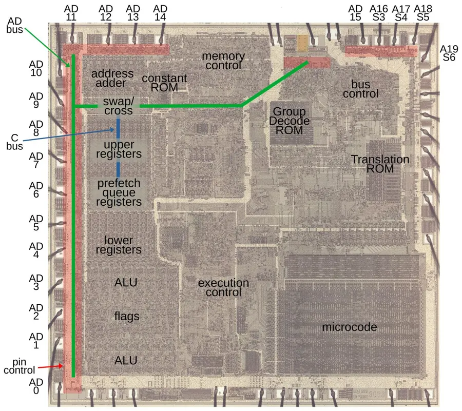

<!-- ds-guard:begin -->
<!--
  Copyright (c) Sercan Külcü. Tüm hakları saklıdır.
  Bu içerik yalnızca https://sercankulcu.github.io adresinde yayımlanır.
-->
<script>
(function () {
  var HOST = "sercankulcu.github.io";
  var izinli = function (h) { return h === HOST || h === "localhost" || h === "127.0.0.1" || h === "[::1]"; };
  var ok = izinli(location.hostname);
  try { if (window.top !== window.self && !izinli(window.top.location.hostname)) ok = false; } catch (e) { ok = false; }
  if (ok) return;
  document.documentElement.style.visibility = "hidden";
  document.addEventListener("DOMContentLoaded", function () {
    document.body.innerHTML = '<p style="max-width:560px;margin:60px auto;padding:0 16px;font:16px/1.6 system-ui,sans-serif;text-align:center">' +
      'Bu içerik yalnızca <a href="https://' + HOST + '">' + HOST + '</a> adresinde görüntülenebilir.<br>' +
      'This content is only available at <a href="https://' + HOST + '">' + HOST + '</a>.<br>&copy; Sercan Külcü</p>';
    document.documentElement.style.visibility = "visible";
  });
})();
</script>
<!-- ds-guard:end -->

<link rel="stylesheet" href="notlar.css">
<style>
/* sunumdaki SVG'lerin bölüme özgü sınıfları (Bolum_10_8086_Pinler.html ile aynı; kapsam .ds-notes) */
.ds-notes .ds-svg .mono { font-family: ui-monospace, "Cascadia Code", Consolas, monospace; }
.ds-notes .ds-svg .mt-hot { fill: var(--ds-hot); stroke: var(--ds-link); stroke-width: 1.6; }
.ds-notes .ds-svg .mt-dim { fill: var(--ds-surface); stroke: var(--ds-border); stroke-width: 1.2; }
.ds-notes .ds-svg .mt-good { fill: color-mix(in srgb, var(--ds-good) 20%, var(--ds-bg)); stroke: var(--ds-good); stroke-width: 1.6; }
.ds-notes .ds-svg .mt-bad { fill: color-mix(in srgb, var(--ds-bad) 16%, var(--ds-bg)); stroke: var(--ds-bad); stroke-width: 1.6; }
.ds-notes .ds-svg .mt-acc { fill: color-mix(in srgb, var(--ds-accent) 14%, var(--ds-bg)); stroke: var(--ds-accent); stroke-width: 1.6; }
.ds-notes .ds-svg .mt-v { fill: var(--ds-text); font: 700 15px ui-monospace, "Cascadia Code", Consolas, monospace; }
.ds-notes .ds-svg .mt-m { fill: var(--ds-text); font: 600 13px ui-monospace, "Cascadia Code", Consolas, monospace; }
.ds-notes .ds-svg .mt-s { fill: var(--ds-text); font: 600 13px system-ui, sans-serif; }
.ds-notes .ds-svg .mt-a { fill: var(--ds-accent); font: 700 13px system-ui, sans-serif; }
.ds-notes .ds-svg .mt-g { fill: var(--ds-good); font: 700 13px system-ui, sans-serif; }
.ds-notes .ds-svg .mt-l { fill: var(--ds-link); font: 700 13px system-ui, sans-serif; }
.ds-notes .ds-svg .mt-wire { stroke: var(--ds-link); stroke-width: 2.4; fill: none; }
.ds-notes .ds-svg .mt-wire0 { stroke: var(--ds-muted); stroke-width: 1.3; fill: none; stroke-dasharray: 4 4; }
.ds-notes .ds-svg .mt-sig { stroke: var(--ds-text); stroke-width: 2; fill: none; }
/* küçük adım şekillerini yan yana dizmek için */
.ds-notes .nt-fig__row--2 > svg.ds-svg { flex: 1 1 290px; min-width: 0; max-width: calc(50% - 0.7rem); }
@media (max-width: 560px) { .ds-notes .nt-fig__row--2 > svg.ds-svg { max-width: 100%; } }
.ds-notes .nt-fig__stack > svg.ds-svg { display: block; width: 100%; height: auto; }
.ds-notes .nt-fig__stack > svg.ds-svg + svg.ds-svg { margin-top: 0.9rem; }
.ds-notes .nt-fig__box img { display: block; max-width: 100%; height: auto; margin: 0 auto; border-radius: 6px; }
</style>

<article class="ds-notes" id="ds-notes" lang="tr">
<header class="nt-head">
  <p class="nt-kicker">Mikroişlemciler · Ders Notu</p>
  <h1>Bölüm 10.1: 8086 Pinler</h1>
  <p class="nt-lead">Bir assembly komutunun yazmaçlar ve bayraklar üzerindeki etkisi programcının gördüğü yüzdür. Aynı komut, yonganın dışında da bir iz bırakır: pinlerde belirli bir sırayla adres, veri ve kontrol sinyalleri belirir. Bu not, 8086'yı bir devre elemanı olarak ele alır. 40 pinli kılıfın pinlerini gruplarına ayırır ve adres ile verinin aynı pinlerden nasıl geçtiğini anlatır. Çoklamayı çözen adres kilitlerini ve veri alıcı-vericilerini, çift ve tek bellek bankalarını, okuma ve yazma yol döngülerini saat turu düzeyinde inceler. Yavaş belleğin bekleme durumu istemesini, yolun başka bir yöneticiye devredilmesini, saat ve sıfırlama devresini, maksimum moddaki 8288 yol denetleyicisini ve kesme pinlerini tamamlar. Her konuda bir komutun hangi pinde hangi değeri ürettiği kod izlemeleriyle gösterilir.</p>
  <ul class="nt-links" aria-label="İlgili bağlantılar">
    <li><a href="../slides/Bolum_10_8086_Pinler.html">Sunum</a></li>
    <li><a href="../pdf/Bolum_10_8086_Pinler.pdf">Sunum (PDF)</a></li>
    <li><a href="../slides/Bolum_10_8086_Pinler_Calisma_Sorulari.html">Çalışma soruları</a></li>
    <li><a href="../sozluk.html">Terim sözlüğü</a></li>
    <li><a href="../slides/Chapter_10_IO-Ports.html">Port ile Aygıt Kontrolü</a></li>
    <li><a href="../slides/Chapter_05_Interrupt-Vector.html">Kesme Vektör Tablosu</a></li>
    <li><a href="../slides/CPU_Simulator.html">İşlemci Simülatörü</a></li>
  </ul>
</header>

<section class="nt-goals" aria-labelledby="ciktilar">
  <h2 id="ciktilar">Öğrenme çıktıları</h2>
  <dl>
    <dt>Pinleri tanımak</dt>
    <dd>8086'nın 40 pinini gruplarına ayırmak; her pinin yönünü, aktif düzeyini ve hangi T durumunda ne taşıdığını söylemek; minimum ve maksimum modda değişen sekiz pini eşleştirmek.</dd>
    <dt>Çoklamayı çözmek</dt>
    <dd>Adres ve verinin aynı pinlerden geçmesinin nedenini açıklamak; ALE, adres kilidi ve veri alıcı-vericisiyle ayrık adres ve veri yolunun nasıl kurulduğunu çizmek.</dd>
    <dt>Bankaları seçmek</dt>
    <dd>BHE' ve A0 ile çift ve tek bankanın seçimini açıklamak; bir komutun kaç veri yol döngüsü gerektirdiğini ve verinin hangi hatlardan geçtiğini bulmak.</dd>
    <dt>Yol döngüsünü izlemek</dt>
    <dd>Okuma ve yazma döngüsünü T1–T4 durumlarında sinyal sinyal izlemek; READY ile bekleme durumu eklenmesini açıklamak ve bir bellek için gereken bekleme durumu sayısını hesaplamak.</dd>
    <dt>Durum ve kontrol pinlerini okumak</dt>
    <dd>S2'–S0', S3–S6 ve QS1–QS0 kodlarını çözmek; RD', WR', M/IO', DT/R', DEN', HOLD/HLDA, RQ'/GT ve LOCK' sinyallerinin bir komut sırasında aldığı değerleri vermek.</dd>
    <dt>Sistemi kurmak</dt>
    <dd>8284A saat üretecinin, RESET sonrası başlangıcın, 8288 yol denetleyicisinin ve INTR, NMI, INTA' pinlerinin bir 8086 sistemindeki görevini açıklamak.</dd>
  </dl>
</section>

<nav class="nt-toc" aria-labelledby="icindekiler">
  <h2 id="icindekiler">İçindekiler</h2>
  <ol>
    <li><a href="#s10-1-1">10.1.1 8086'nın kılıfı ve pinleri</a>
      <ol>
        <li><a href="#s10-1-1-1">10.1.1.1 40 pinli DIP kılıf</a></li>
        <li><a href="#s10-1-1-2">10.1.1.2 Yonganın içi</a></li>
        <li><a href="#s10-1-1-3">10.1.1.3 Neden karmaşık pinler?</a></li>
        <li><a href="#s10-1-1-4">10.1.1.4 Pin grupları</a></li>
        <li><a href="#s10-1-1-5">10.1.1.5 Minimum ve maksimum mod</a></li>
      </ol>
    </li>
    <li><a href="#s10-1-2">10.1.2 Adres ve veri pinleri</a>
      <ol>
        <li><a href="#s10-1-2-1">10.1.2.1 AD0–AD15 ve A16/S3–A19/S6</a></li>
        <li><a href="#s10-1-2-2">10.1.2.2 Çoklamayı çözmek: ALE ve adres kilidi</a></li>
        <li><a href="#s10-1-2-3">10.1.2.3 Tamponlu ve kilitli sistem</a></li>
        <li><a href="#s10-1-2-4">10.1.2.4 BHE' ve A0: bellek bankaları</a></li>
        <li><a href="#s10-1-2-5">10.1.2.5 Kod izleme: hizalı ve hizasız erişim</a></li>
      </ol>
    </li>
    <li><a href="#s10-1-3">10.1.3 Yol döngüleri</a>
      <ol>
        <li><a href="#s10-1-3-1">10.1.3.1 Yol döngüsü ve T durumları</a></li>
        <li><a href="#s10-1-3-2">10.1.3.2 Yazma yol döngüsü</a></li>
        <li><a href="#s10-1-3-3">10.1.3.3 Okuma yol döngüsü</a></li>
        <li><a href="#s10-1-3-4">10.1.3.4 Okuma için yol zamanlaması</a></li>
        <li><a href="#s10-1-3-5">10.1.3.5 READY ve bekleme durumu</a></li>
        <li><a href="#s10-1-3-6">10.1.3.6 Kaç bekleme durumu gerekir?</a></li>
      </ol>
    </li>
    <li><a href="#s10-1-4">10.1.4 Durum pinleri</a>
      <ol>
        <li><a href="#s10-1-4-1">10.1.4.1 S2', S1', S0'</a></li>
        <li><a href="#s10-1-4-2">10.1.4.2 S3–S6 ve BHE'/S7</a></li>
        <li><a href="#s10-1-4-3">10.1.4.3 Kod izleme: komutlar ve durum kodları</a></li>
        <li><a href="#s10-1-4-4">10.1.4.4 Durum kodunu çözmek</a></li>
        <li><a href="#s10-1-4-5">10.1.4.5 QS1, QS0: kuyruk durumu</a></li>
      </ol>
    </li>
    <li><a href="#s10-1-5">10.1.5 Kontrol pinleri</a>
      <ol>
        <li><a href="#s10-1-5-1">10.1.5.1 RD', WR' ve M/IO'</a></li>
        <li><a href="#s10-1-5-2">10.1.5.2 DT/R' ve DEN'</a></li>
        <li><a href="#s10-1-5-3">10.1.5.3 Komuttan yol döngülerine: OUT ve IN</a></li>
        <li><a href="#s10-1-5-4">10.1.5.4 HOLD ve HLDA</a></li>
        <li><a href="#s10-1-5-5">10.1.5.5 RQ'/GT0', RQ'/GT1' ve LOCK'</a></li>
        <li><a href="#s10-1-5-6">10.1.5.6 Kod izleme: LOCK XCHG ile semafor</a></li>
        <li><a href="#s10-1-5-7">10.1.5.7 TEST'</a></li>
      </ol>
    </li>
    <li><a href="#s10-1-6">10.1.6 Saat, sıfırlama ve besleme</a>
      <ol>
        <li><a href="#s10-1-6-1">10.1.6.1 CLK</a></li>
        <li><a href="#s10-1-6-2">10.1.6.2 RESET, VCC ve GND</a></li>
        <li><a href="#s10-1-6-3">10.1.6.3 RESET sonrası ilk komut: adım adım</a></li>
        <li><a href="#s10-1-6-4">10.1.6.4 8284A saat üreteci</a></li>
      </ol>
    </li>
    <li><a href="#s10-1-7">10.1.7 Maksimum mod</a>
      <ol>
        <li><a href="#s10-1-7-1">10.1.7.1 MN/MX' ve moda göre pinler</a></li>
        <li><a href="#s10-1-7-2">10.1.7.2 8288 yol denetleyicisi</a></li>
        <li><a href="#s10-1-7-3">10.1.7.3 Maksimum mod 8086 sistemi</a></li>
      </ol>
    </li>
    <li><a href="#s10-1-8">10.1.8 Kesme pinleri</a>
      <ol>
        <li><a href="#s10-1-8-1">10.1.8.1 INTR, NMI ve INTA'</a></li>
        <li><a href="#s10-1-8-2">10.1.8.2 Donanım kesmesi: INTA döngüleri</a></li>
      </ol>
    </li>
    <li><a href="#s10-1-9">10.1.9 Alıştırmalar ve çözümleri</a></li>
    <li><a href="#s10-1-10">10.1.10 Özet</a></li>
    <li><a href="#s10-1-11">10.1.11 Kavram listesi</a></li>
    <li><a href="#s10-1-12">10.1.12 Kendini Dene</a></li>
    <li><a href="#s10-1-13">10.1.13 İleri okuma</a></li>
    <li><a href="#s10-1-14">10.1.14 Kaynaklar</a></li>
  </ol>
</nav>

<h2 class="nt-pb" id="s10-1-1"><span class="nt-num">10.1.1</span>8086'nın kılıfı ve pinleri</h2>

<p>Bir mikroişlemci, dış dünyayla yalnız pinleri üzerinden konuşur. Bellekten bir bayt okumak, bir porta değer yazmak, kesme isteği almak ya da saat sinyalini içeri almak için ayrı ayrı elektriksel bağlantılar gerekir. 8086'nın bu bağlantıları için ayrılan yer çok dardır: bütün işlemci 40 pinli bir kılıfa sığdırılmıştır. Bu kesim kılıfı, pinlerin adlandırılmasını ve pin gruplarını tanıtır. Ardından 40 pinin neden yetmediğini gösterir. Intel bu darlığı iki yolla aştı: aynı pini farklı zamanlarda farklı amaçla kullandı ve bir pin grubunun anlamını sistem türüne bağladı.</p>

<h3 id="s10-1-1-1"><span class="nt-num">10.1.1.1</span>40 pinli DIP kılıf</h3>

<p>Intel 8086, HMOS (<span lang="en">high-performance MOS</span>, yüksek başarımlı n kanallı MOS) teknolojisiyle üretilmiş 16 bitlik bir mikroişlemcidir. Yonga, <strong>çift sıralı kılıf</strong> (DIP, <span lang="en">dual in-line package</span>) denen dikdörtgen bir paketin içindedir. Paketin iki uzun kenarında yirmişer pin bulunur. Pinler sol üst köşeden başlayıp saat yönünün tersine numaralanır: sol kenarda yukarıdan aşağı 1–20, sağ kenarda aşağıdan yukarı 21–40. Paketin üst kenarındaki yarım daire biçimli çentik, 1 numaralı pinin yerini gösterir.</p>

<p>8086 tek bir +5 V besleme gerilimiyle çalışır. Besleme pin 40'a (V<sub>CC</sub>), toprak pin 1 ile pin 20'ye (GND) bağlanır. Veri sayfası beslemeye ±%10 tolerans tanır: 4,5 V ile 5,5 V arasında yonga doğru çalışır. 5 MHz'lik 8086 en çok 340 mA akım çeker; bu, 5 V × 0,34 A = 1,7 W güç demektir. Bugünkü ölçülerle küçük görünen bu güç, 1978'de yonganın ısınması için ciddi bir değerdi.</p>

<figure class="nt-fig" id="sekil-pin" style="--w:440px">
  <div class="nt-fig__box"><svg class="ds-svg" viewBox="0 0 400 450" role="img" aria-label="8086 pin diyagramı; pinlere tıklayarak açıklama görülebilir"><text class="lbl" x="258" y="14" text-anchor="start" style="font-size:11.5px">maks. mod</text><text class="lbl" x="396" y="14" text-anchor="end" style="font-size:11.5px">(min.)</text><rect class="box" x="122" y="22" width="116" height="416" rx="4"/><path class="axis" d="M166 22 A14 14 0 0 0 194 22" style="stroke-width:1.5"/><text class="txt" x="180" y="225" text-anchor="middle" style="font-size:18px">8086</text><text class="lbl" x="180" y="245" text-anchor="middle">CPU</text><g class="m-pin" data-pin="1"><rect class="box" x="108" y="34" width="14" height="12" rx="1"/><text class="lbl" x="130" y="44.5" text-anchor="start" style="font-size:11.5px">1</text><text class="txt" x="102" y="44.5" text-anchor="end" style="font-size:13px">GND</text><rect class="box-empty" x="20" y="31" width="102" height="18" rx="3" style="stroke:none;fill:transparent" data-hit="1"/></g><g class="m-pin" data-pin="2"><rect class="box" x="108" y="54.5" width="14" height="12" rx="1"/><text class="lbl" x="130" y="65" text-anchor="start" style="font-size:11.5px">2</text><text class="txt" x="102" y="65" text-anchor="end" style="font-size:13px">AD14</text><rect class="box-empty" x="20" y="51.5" width="102" height="18" rx="3" style="stroke:none;fill:transparent" data-hit="1"/></g><g class="m-pin" data-pin="3"><rect class="box" x="108" y="75" width="14" height="12" rx="1"/><text class="lbl" x="130" y="85.5" text-anchor="start" style="font-size:11.5px">3</text><text class="txt" x="102" y="85.5" text-anchor="end" style="font-size:13px">AD13</text><rect class="box-empty" x="20" y="72" width="102" height="18" rx="3" style="stroke:none;fill:transparent" data-hit="1"/></g><g class="m-pin" data-pin="4"><rect class="box" x="108" y="95.5" width="14" height="12" rx="1"/><text class="lbl" x="130" y="106" text-anchor="start" style="font-size:11.5px">4</text><text class="txt" x="102" y="106" text-anchor="end" style="font-size:13px">AD12</text><rect class="box-empty" x="20" y="92.5" width="102" height="18" rx="3" style="stroke:none;fill:transparent" data-hit="1"/></g><g class="m-pin" data-pin="5"><rect class="box" x="108" y="116" width="14" height="12" rx="1"/><text class="lbl" x="130" y="126.5" text-anchor="start" style="font-size:11.5px">5</text><text class="txt" x="102" y="126.5" text-anchor="end" style="font-size:13px">AD11</text><rect class="box-empty" x="20" y="113" width="102" height="18" rx="3" style="stroke:none;fill:transparent" data-hit="1"/></g><g class="m-pin" data-pin="6"><rect class="box" x="108" y="136.5" width="14" height="12" rx="1"/><text class="lbl" x="130" y="147" text-anchor="start" style="font-size:11.5px">6</text><text class="txt" x="102" y="147" text-anchor="end" style="font-size:13px">AD10</text><rect class="box-empty" x="20" y="133.5" width="102" height="18" rx="3" style="stroke:none;fill:transparent" data-hit="1"/></g><g class="m-pin" data-pin="7"><rect class="box" x="108" y="157" width="14" height="12" rx="1"/><text class="lbl" x="130" y="167.5" text-anchor="start" style="font-size:11.5px">7</text><text class="txt" x="102" y="167.5" text-anchor="end" style="font-size:13px">AD9</text><rect class="box-empty" x="20" y="154" width="102" height="18" rx="3" style="stroke:none;fill:transparent" data-hit="1"/></g><g class="m-pin" data-pin="8"><rect class="box" x="108" y="177.5" width="14" height="12" rx="1"/><text class="lbl" x="130" y="188" text-anchor="start" style="font-size:11.5px">8</text><text class="txt" x="102" y="188" text-anchor="end" style="font-size:13px">AD8</text><rect class="box-empty" x="20" y="174.5" width="102" height="18" rx="3" style="stroke:none;fill:transparent" data-hit="1"/></g><g class="m-pin" data-pin="9"><rect class="box" x="108" y="198" width="14" height="12" rx="1"/><text class="lbl" x="130" y="208.5" text-anchor="start" style="font-size:11.5px">9</text><text class="txt" x="102" y="208.5" text-anchor="end" style="font-size:13px">AD7</text><rect class="box-empty" x="20" y="195" width="102" height="18" rx="3" style="stroke:none;fill:transparent" data-hit="1"/></g><g class="m-pin" data-pin="10"><rect class="box" x="108" y="218.5" width="14" height="12" rx="1"/><text class="lbl" x="130" y="229" text-anchor="start" style="font-size:11.5px">10</text><text class="txt" x="102" y="229" text-anchor="end" style="font-size:13px">AD6</text><rect class="box-empty" x="20" y="215.5" width="102" height="18" rx="3" style="stroke:none;fill:transparent" data-hit="1"/></g><g class="m-pin" data-pin="11"><rect class="box" x="108" y="239" width="14" height="12" rx="1"/><text class="lbl" x="130" y="249.5" text-anchor="start" style="font-size:11.5px">11</text><text class="txt" x="102" y="249.5" text-anchor="end" style="font-size:13px">AD5</text><rect class="box-empty" x="20" y="236" width="102" height="18" rx="3" style="stroke:none;fill:transparent" data-hit="1"/></g><g class="m-pin" data-pin="12"><rect class="box" x="108" y="259.5" width="14" height="12" rx="1"/><text class="lbl" x="130" y="270" text-anchor="start" style="font-size:11.5px">12</text><text class="txt" x="102" y="270" text-anchor="end" style="font-size:13px">AD4</text><rect class="box-empty" x="20" y="256.5" width="102" height="18" rx="3" style="stroke:none;fill:transparent" data-hit="1"/></g><g class="m-pin" data-pin="13"><rect class="box" x="108" y="280" width="14" height="12" rx="1"/><text class="lbl" x="130" y="290.5" text-anchor="start" style="font-size:11.5px">13</text><text class="txt" x="102" y="290.5" text-anchor="end" style="font-size:13px">AD3</text><rect class="box-empty" x="20" y="277" width="102" height="18" rx="3" style="stroke:none;fill:transparent" data-hit="1"/></g><g class="m-pin" data-pin="14"><rect class="box" x="108" y="300.5" width="14" height="12" rx="1"/><text class="lbl" x="130" y="311" text-anchor="start" style="font-size:11.5px">14</text><text class="txt" x="102" y="311" text-anchor="end" style="font-size:13px">AD2</text><rect class="box-empty" x="20" y="297.5" width="102" height="18" rx="3" style="stroke:none;fill:transparent" data-hit="1"/></g><g class="m-pin" data-pin="15"><rect class="box" x="108" y="321" width="14" height="12" rx="1"/><text class="lbl" x="130" y="331.5" text-anchor="start" style="font-size:11.5px">15</text><text class="txt" x="102" y="331.5" text-anchor="end" style="font-size:13px">AD1</text><rect class="box-empty" x="20" y="318" width="102" height="18" rx="3" style="stroke:none;fill:transparent" data-hit="1"/></g><g class="m-pin" data-pin="16"><rect class="box" x="108" y="341.5" width="14" height="12" rx="1"/><text class="lbl" x="130" y="352" text-anchor="start" style="font-size:11.5px">16</text><text class="txt" x="102" y="352" text-anchor="end" style="font-size:13px">AD0</text><rect class="box-empty" x="20" y="338.5" width="102" height="18" rx="3" style="stroke:none;fill:transparent" data-hit="1"/></g><g class="m-pin" data-pin="17"><rect class="box" x="108" y="362" width="14" height="12" rx="1"/><text class="lbl" x="130" y="372.5" text-anchor="start" style="font-size:11.5px">17</text><text class="txt" x="102" y="372.5" text-anchor="end" style="font-size:13px">NMI</text><rect class="box-empty" x="20" y="359" width="102" height="18" rx="3" style="stroke:none;fill:transparent" data-hit="1"/></g><g class="m-pin" data-pin="18"><rect class="box" x="108" y="382.5" width="14" height="12" rx="1"/><text class="lbl" x="130" y="393" text-anchor="start" style="font-size:11.5px">18</text><text class="txt" x="102" y="393" text-anchor="end" style="font-size:13px">INTR</text><rect class="box-empty" x="20" y="379.5" width="102" height="18" rx="3" style="stroke:none;fill:transparent" data-hit="1"/></g><g class="m-pin" data-pin="19"><rect class="box" x="108" y="403" width="14" height="12" rx="1"/><text class="lbl" x="130" y="413.5" text-anchor="start" style="font-size:11.5px">19</text><text class="txt" x="102" y="413.5" text-anchor="end" style="font-size:13px">CLK</text><rect class="box-empty" x="20" y="400" width="102" height="18" rx="3" style="stroke:none;fill:transparent" data-hit="1"/></g><g class="m-pin" data-pin="20"><rect class="box" x="108" y="423.5" width="14" height="12" rx="1"/><text class="lbl" x="130" y="434" text-anchor="start" style="font-size:11.5px">20</text><text class="txt" x="102" y="434" text-anchor="end" style="font-size:13px">GND</text><rect class="box-empty" x="20" y="420.5" width="102" height="18" rx="3" style="stroke:none;fill:transparent" data-hit="1"/></g><g class="m-pin" data-pin="21"><rect class="box" x="238" y="423.5" width="14" height="12" rx="1"/><text class="lbl" x="230" y="434" text-anchor="end" style="font-size:11.5px">21</text><text class="txt" x="258" y="434" text-anchor="start" style="font-size:13px">RESET</text><rect class="box-empty" x="238" y="420.5" width="158" height="18" rx="3" style="stroke:none;fill:transparent" data-hit="1"/></g><g class="m-pin" data-pin="22"><rect class="box" x="238" y="403" width="14" height="12" rx="1"/><text class="lbl" x="230" y="413.5" text-anchor="end" style="font-size:11.5px">22</text><text class="txt" x="258" y="413.5" text-anchor="start" style="font-size:13px">READY</text><rect class="box-empty" x="238" y="400" width="158" height="18" rx="3" style="stroke:none;fill:transparent" data-hit="1"/></g><g class="m-pin" data-pin="23"><rect class="box" x="238" y="382.5" width="14" height="12" rx="1"/><text class="lbl" x="230" y="393" text-anchor="end" style="font-size:11.5px">23</text><text class="txt" x="258" y="393" text-anchor="start" style="font-size:13px">TEST'</text><rect class="box-empty" x="238" y="379.5" width="158" height="18" rx="3" style="stroke:none;fill:transparent" data-hit="1"/></g><g class="m-pin" data-pin="24"><rect class="box" x="238" y="362" width="14" height="12" rx="1"/><text class="lbl" x="230" y="372.5" text-anchor="end" style="font-size:11.5px">24</text><text class="txt" x="258" y="372.5" text-anchor="start" style="font-size:13px">QS1</text><text class="lbl" x="392" y="372.5" text-anchor="end" style="font-size:12.5px">(INTA')</text><rect class="box-empty" x="238" y="359" width="158" height="18" rx="3" style="stroke:none;fill:transparent" data-hit="1"/></g><g class="m-pin" data-pin="25"><rect class="box" x="238" y="341.5" width="14" height="12" rx="1"/><text class="lbl" x="230" y="352" text-anchor="end" style="font-size:11.5px">25</text><text class="txt" x="258" y="352" text-anchor="start" style="font-size:13px">QS0</text><text class="lbl" x="392" y="352" text-anchor="end" style="font-size:12.5px">(ALE)</text><rect class="box-empty" x="238" y="338.5" width="158" height="18" rx="3" style="stroke:none;fill:transparent" data-hit="1"/></g><g class="m-pin" data-pin="26"><rect class="box" x="238" y="321" width="14" height="12" rx="1"/><text class="lbl" x="230" y="331.5" text-anchor="end" style="font-size:11.5px">26</text><text class="txt" x="258" y="331.5" text-anchor="start" style="font-size:13px">S0'</text><text class="lbl" x="392" y="331.5" text-anchor="end" style="font-size:12.5px">(DEN')</text><rect class="box-empty" x="238" y="318" width="158" height="18" rx="3" style="stroke:none;fill:transparent" data-hit="1"/></g><g class="m-pin" data-pin="27"><rect class="box" x="238" y="300.5" width="14" height="12" rx="1"/><text class="lbl" x="230" y="311" text-anchor="end" style="font-size:11.5px">27</text><text class="txt" x="258" y="311" text-anchor="start" style="font-size:13px">S1'</text><text class="lbl" x="392" y="311" text-anchor="end" style="font-size:12.5px">(DT/R')</text><rect class="box-empty" x="238" y="297.5" width="158" height="18" rx="3" style="stroke:none;fill:transparent" data-hit="1"/></g><g class="m-pin" data-pin="28"><rect class="box" x="238" y="280" width="14" height="12" rx="1"/><text class="lbl" x="230" y="290.5" text-anchor="end" style="font-size:11.5px">28</text><text class="txt" x="258" y="290.5" text-anchor="start" style="font-size:13px">S2'</text><text class="lbl" x="392" y="290.5" text-anchor="end" style="font-size:12.5px">(M/IO')</text><rect class="box-empty" x="238" y="277" width="158" height="18" rx="3" style="stroke:none;fill:transparent" data-hit="1"/></g><g class="m-pin" data-pin="29"><rect class="box" x="238" y="259.5" width="14" height="12" rx="1"/><text class="lbl" x="230" y="270" text-anchor="end" style="font-size:11.5px">29</text><text class="txt" x="258" y="270" text-anchor="start" style="font-size:13px">LOCK'</text><text class="lbl" x="392" y="270" text-anchor="end" style="font-size:12.5px">(WR')</text><rect class="box-empty" x="238" y="256.5" width="158" height="18" rx="3" style="stroke:none;fill:transparent" data-hit="1"/></g><g class="m-pin" data-pin="30"><rect class="box" x="238" y="239" width="14" height="12" rx="1"/><text class="lbl" x="230" y="249.5" text-anchor="end" style="font-size:11.5px">30</text><text class="txt" x="258" y="249.5" text-anchor="start" style="font-size:13px">RQ'/GT1'</text><text class="lbl" x="392" y="249.5" text-anchor="end" style="font-size:12.5px">(HLDA)</text><rect class="box-empty" x="238" y="236" width="158" height="18" rx="3" style="stroke:none;fill:transparent" data-hit="1"/></g><g class="m-pin" data-pin="31"><rect class="box" x="238" y="218.5" width="14" height="12" rx="1"/><text class="lbl" x="230" y="229" text-anchor="end" style="font-size:11.5px">31</text><text class="txt" x="258" y="229" text-anchor="start" style="font-size:13px">RQ'/GT0'</text><text class="lbl" x="392" y="229" text-anchor="end" style="font-size:12.5px">(HOLD)</text><rect class="box-empty" x="238" y="215.5" width="158" height="18" rx="3" style="stroke:none;fill:transparent" data-hit="1"/></g><g class="m-pin" data-pin="32"><rect class="box" x="238" y="198" width="14" height="12" rx="1"/><text class="lbl" x="230" y="208.5" text-anchor="end" style="font-size:11.5px">32</text><text class="txt" x="258" y="208.5" text-anchor="start" style="font-size:13px">RD'</text><rect class="box-empty" x="238" y="195" width="158" height="18" rx="3" style="stroke:none;fill:transparent" data-hit="1"/></g><g class="m-pin" data-pin="33"><rect class="box" x="238" y="177.5" width="14" height="12" rx="1"/><text class="lbl" x="230" y="188" text-anchor="end" style="font-size:11.5px">33</text><text class="txt" x="258" y="188" text-anchor="start" style="font-size:13px">MN/MX'</text><rect class="box-empty" x="238" y="174.5" width="158" height="18" rx="3" style="stroke:none;fill:transparent" data-hit="1"/></g><g class="m-pin" data-pin="34"><rect class="box" x="238" y="157" width="14" height="12" rx="1"/><text class="lbl" x="230" y="167.5" text-anchor="end" style="font-size:11.5px">34</text><text class="txt" x="258" y="167.5" text-anchor="start" style="font-size:13px">BHE'/S7</text><rect class="box-empty" x="238" y="154" width="158" height="18" rx="3" style="stroke:none;fill:transparent" data-hit="1"/></g><g class="m-pin" data-pin="35"><rect class="box" x="238" y="136.5" width="14" height="12" rx="1"/><text class="lbl" x="230" y="147" text-anchor="end" style="font-size:11.5px">35</text><text class="txt" x="258" y="147" text-anchor="start" style="font-size:13px">A19/S6</text><rect class="box-empty" x="238" y="133.5" width="158" height="18" rx="3" style="stroke:none;fill:transparent" data-hit="1"/></g><g class="m-pin" data-pin="36"><rect class="box" x="238" y="116" width="14" height="12" rx="1"/><text class="lbl" x="230" y="126.5" text-anchor="end" style="font-size:11.5px">36</text><text class="txt" x="258" y="126.5" text-anchor="start" style="font-size:13px">A18/S5</text><rect class="box-empty" x="238" y="113" width="158" height="18" rx="3" style="stroke:none;fill:transparent" data-hit="1"/></g><g class="m-pin" data-pin="37"><rect class="box" x="238" y="95.5" width="14" height="12" rx="1"/><text class="lbl" x="230" y="106" text-anchor="end" style="font-size:11.5px">37</text><text class="txt" x="258" y="106" text-anchor="start" style="font-size:13px">A17/S4</text><rect class="box-empty" x="238" y="92.5" width="158" height="18" rx="3" style="stroke:none;fill:transparent" data-hit="1"/></g><g class="m-pin" data-pin="38"><rect class="box" x="238" y="75" width="14" height="12" rx="1"/><text class="lbl" x="230" y="85.5" text-anchor="end" style="font-size:11.5px">38</text><text class="txt" x="258" y="85.5" text-anchor="start" style="font-size:13px">A16/S3</text><rect class="box-empty" x="238" y="72" width="158" height="18" rx="3" style="stroke:none;fill:transparent" data-hit="1"/></g><g class="m-pin" data-pin="39"><rect class="box" x="238" y="54.5" width="14" height="12" rx="1"/><text class="lbl" x="230" y="65" text-anchor="end" style="font-size:11.5px">39</text><text class="txt" x="258" y="65" text-anchor="start" style="font-size:13px">AD15</text><rect class="box-empty" x="238" y="51.5" width="158" height="18" rx="3" style="stroke:none;fill:transparent" data-hit="1"/></g><g class="m-pin" data-pin="40"><rect class="box" x="238" y="34" width="14" height="12" rx="1"/><text class="lbl" x="230" y="44.5" text-anchor="end" style="font-size:11.5px">40</text><text class="txt" x="258" y="44.5" text-anchor="start" style="font-size:13px">VCC</text><rect class="box-empty" x="238" y="31" width="158" height="18" rx="3" style="stroke:none;fill:transparent" data-hit="1"/></g></svg></div>
  <figcaption><b>Şekil 10.1.1:</b> 8086'nın pin diyagramı. Sol kenarda 1–20, sağ kenarda 21–40 numaralı pinler bulunur. 24–31 numaralı pinlerin iki adı vardır: dışta maksimum moddaki, parantez içinde minimum moddaki ad.</figcaption>
</figure>

<p><a href="#sekil-pin">Şekil 10.1.1</a> pinlerin kılıf üzerindeki yerini gösterir. İlk bakışta göze çarpan şey, birçok pinin bölü işaretiyle ayrılmış iki adı olmasıdır: AD5, A17/S4, BHE'/S7, RQ'/GT0' gibi. Bu çift adlar, pinin zaman içinde ya da sistem türüne göre iki farklı iş yaptığını anlatır.</p>

<div class="nt-box nt-box--tanim" id="tanim-aktif">
  <span class="nt-box__title">Tanım 10.1.1</span>
  <p>Mantık 1 düzeyindeyken (yaklaşık +5 V) görevini yapan sinyal <strong>aktif yüksek</strong> (<span lang="en">active high</span>) bir sinyaldir. Mantık 0 düzeyindeyken (yaklaşık 0 V) görevini yapan sinyal ise <strong>aktif düşüktür</strong> (<span lang="en">active low</span>). Veri sayfası aktif düşük sinyallerin adının üstüne çizgi çeker. Bu derste aynı anlam adın sonundaki kesme işaretiyle gösterilir: RD' = 0 “okuma yapılıyor” demektir.</p>
</div>

<p>Aktif düşük sinyaller TTL çağının bir alışkanlığıdır. TTL kapılarında bir hattı 0'a çekmek, 1'e çekmekten daha güçlü yapılabilir. Ayrıca bağlantısı kopmuş bir TTL girişi 1 gibi davranır; böylece kopuk bir “aktif düşük” hat kendiliğinden pasif kalır. Bu yüzden okuma, yazma, kesme kabul ve seçim sinyallerinin çoğu aktif düşüktür.</p>

<p>Bazı adlar iki durumu birden anlatır. M/IO' adı okunurken bölü işareti “ya da” gibi düşünülür: pin 1 ise birinci anlam (M, bellek), 0 ise ikinci anlam (IO', giriş/çıkış) geçerlidir. MN/MX', DT/R' ve S7 ile birlikte okunan BHE' de bu kalıptadır. Pinlerin yönü de üç türlüdür. <strong>Giriş</strong> (G) pini yalnız işlemciye bilgi getirir, <strong>çıkış</strong> (Ç) pini yalnız dışarı bilgi götürür. <strong>Çift yönlü</strong> (G/Ç) pin iki yönde de çalışır.</p>

<div class="nt-box nt-box--hata" id="hata-ustcizgi">
  <span class="nt-box__title">Sık yapılan hata</span>
  <p>DT/R' sinyalini “DT/R tümüyle aktif düşük” diye okumak yanlıştır. Kesme işareti yalnız R'ye aittir: pin 1 iken DT (veri gönder), 0 iken R (veri al) anlamı geçerlidir. Aynı biçimde M/IO' sinyalinde M aktif yüksek, IO aktif düşüktür. Veri sayfasında üst çizgi yalnız adın ilgili parçasının üstündedir.</p>
</div>

<h3 id="s10-1-1-2"><span class="nt-num">10.1.1.2</span>Yonganın içi</h3>

<p>Plastik ya da seramik paketin ortasında birkaç milimetre karelik bir silikon parçası, yani <strong>kalıp</strong> (<span lang="en">die</span>) bulunur. Kalıbın kenarlarında <strong>bağlantı pedleri</strong> sıralanır. Her ped, saç telinden ince bir altın ya da alüminyum telle paketin bir pinine bağlanır. Paketin asıl işi bu küçük kalıbı korumak, ısısını dağıtmak ve tellerini baskılı devre kartına uygun aralıklı pinlere taşımaktır.</p>

<figure class="nt-fig" id="sekil-kalip" style="--w:420px">
  <div class="nt-fig__box"></div>
  <figcaption><b>Şekil 10.1.2:</b> 8086'nın kalıp fotoğrafı (Ken Shirriff, righto.com). Sol kenarda adres/veri pedleri, solda 16 bitlik yazmaçlar, ALU ve kuyruk yazmaçları, sağ altta mikrokod ROM'u görülür.</figcaption>
</figure>

<p><a href="#sekil-kalip">Şekil 10.1.2</a>, işlevsel blokları işaretlenmiş bir 8086 kalıbını gösterir. Kalıpta yaklaşık 29 000 transistör vardır; üretim süreci 3 µm'dir. Sol kenardaki pedler AD pinlerine giden hatlardır. Yazmaçlar, ALU ve önden getirme kuyruğunun yazmaçları bu pedlerin yakınındadır, çünkü bu bloklar yolla en sık veri alışverişi yapan bölümlerdir. Sağ alttaki geniş düzenli alan mikrokod ROM'udur: karmaşık komutların adımlarını tutan iç bellek. Yol kontrol mantığı, pinlerdeki sinyallerin zamanlamasını üretir.</p>

<p>Kalıp fotoğrafı bir şeyi açıkça gösterir: işlemcinin içinde bellek yoktur. Yazmaçlar dışında bütün program ve veri dışarıdaki yongalardadır. İşlemcinin her bellek erişimi pinlerden geçmek zorundadır. Bu yüzden pinlerin sayısı ve zamanlaması, işlemcinin hızını doğrudan sınırlar.</p>

<h3 id="s10-1-1-3"><span class="nt-num">10.1.1.3</span>Neden karmaşık pinler?</h3>

<p>Bir mikroişlemci bellek ve G/Ç aygıtlarına adres yolu, veri yolu ve kontrol yolu üzerinden bağlanır. Her sinyale ayrı bir pin verilseydi 8086'nın ne kadar pine ihtiyacı olurdu? Kaba bir sayım şöyledir:</p>

<ul>
  <li>Adres yolu 20 hat: A0–A19. 2<sup>20</sup> = 1 MB bellek adreslenir.</li>
  <li>Veri yolu 16 hat: D0–D15.</li>
  <li>Kontrol, durum ve kesme sinyalleri yaklaşık 20 hat: okuma, yazma, bellek/G-Ç seçimi, hazır, kesme isteği, yol isteği, durum bilgisi.</li>
  <li>Güç ve saat 4 hat: V<sub>CC</sub>, iki GND ve CLK.</li>
</ul>

<p>Toplam 60'ı aşar. 1970'lerin sonunda 64 pinli paketler pahalıydı, kartta fazla yer kaplıyordu ve üretimde sorun çıkarıyordu. Intel, 8080 ve 8085'ten tanıdık olan 40 pinli kılıfta kalmayı seçti. Aradaki farkı kapatmanın tek yolu, bazı pinlere birden fazla iş yaptırmaktı.</p>

<figure class="nt-fig nt-fig--wide" id="sekil-pinsayisi" style="--w:640px">
  <div class="nt-fig__box"><svg class="ds-svg" viewBox="0 0 720 74" role="img" aria-label="Gereken sinyal sayısı 60 civarındadır, pakette 40 pin vardır; fark çoklamayla kapatılır"><defs><marker id="mtrn-8-n1" viewBox="0 0 10 10" refX="9" refY="5" markerWidth="7" markerHeight="7" orient="auto-start-reverse"><path class="ah" d="M0 0 L10 5 L0 10 z"/></marker></defs><text class="mt-s" x="110" y="24" text-anchor="end">gereken ≈ 60</text><rect class="box" x="120" y="8" width="180" height="26" rx="2"/><text class="mt-s" x="210" y="26" text-anchor="middle" style="font-size:12px">adres 20</text><rect class="mt-good" x="300" y="8" width="144" height="26" rx="2"/><text class="mt-s" x="372" y="26" text-anchor="middle" style="font-size:12px">veri 16</text><rect class="mt-acc" x="444" y="8" width="170" height="26" rx="2"/><text class="mt-s" x="529" y="26" text-anchor="middle" style="font-size:12px">kontrol ~20</text><rect class="mt-dim" x="614" y="8" width="76" height="26" rx="2"/><text class="mt-s" x="652" y="26" text-anchor="middle" style="font-size:12px">güç/saat 4</text><text class="mt-s" x="110" y="58" text-anchor="end">pin = 40</text><rect class="mt-hot" x="120" y="42" width="380" height="24" rx="2"/><text class="mt-s" x="310" y="59" text-anchor="middle" style="font-size:12px">40 pinli DIP</text><path class="line" d="M506 54 H690" marker-end="url(#mtrn-8-n1)"/><text class="mt-a" x="598" y="68" text-anchor="middle" style="font-size:12px">çoklama</text></svg></div>
  <figcaption><b>Şekil 10.1.3:</b> Ayrı pinlerle gereken sinyal sayısı 60 civarındadır; kılıfta 40 pin vardır. Fark çoklamayla kapatılır.</figcaption>
</figure>

<div class="nt-box nt-box--tanim" id="tanim-coklama">
  <span class="nt-box__title">Tanım 10.1.2</span>
  <p><strong>Çoklama</strong> (<span lang="en">multiplexing</span>), aynı pinlerin farklı zamanlarda farklı bilgileri taşımasıdır. 8086'da zaman paylaşımlı çoklama kullanılır: AD0–AD15 pinleri bir yol döngüsünün ilk saat turunda adresin alt 16 bitini, sonraki turlarda veriyi taşır. A16–A19 pinleri ilk turda adresin üst 4 bitini, sonra durum bilgisini taşır.</p>
</div>

<p>8086'nın pin darlığının ikinci bir kaynağı da vardır. Kesim yazmaçlarıyla üretilen fiziksel adres 20 bittir, veri yolu ise 16 bittir. Adresin alt 16 biti veri hatlarıyla paylaşılabilir, ama fazladan 4 adres bitinin (A16–A19) eşleşecek veri hattı yoktur. Bu dört pin de boş kalmasın diye adres zamanı geçince durum bilgisi (S3–S6) taşır.</p>

<p>Çoklamanın iki bedeli vardır. Birincisi, sistemin geri kalanı ayrık ve kararlı bir adres yolu ister; bu yüzden işlemcinin dışına adresi yakalayıp tutan kilit devreleri eklenir. İkincisi, adres ve verinin aynı pinlerden sırayla geçmesi her bellek erişimini en az dört saat turuna yayar. Aynı teknolojiyle 60 pinli ayrık yollu bir işlemci daha az dış devreyle kurulabilirdi. Ama 40 pinli kılıf ucuzdu ve 8085 sistemlerinden gelen tasarımcılar çoklamalı yolu zaten tanıyordu.</p>

<h3 id="s10-1-1-4"><span class="nt-num">10.1.1.4</span>Pin grupları</h3>

<p>40 pin, görevlerine göre yedi gruba ayrılabilir. <a href="#tab-gruplar">Tablo 10.1.1</a> bu grupları pin numaralarıyla verir.</p>

<div class="nt-tablewrap" id="tab-gruplar">
<table class="nt-table">
  <caption>Tablo 10.1.1: 8086'nın pin grupları.</caption>
  <thead><tr><th scope="col">Grup</th><th scope="col">Pinler</th><th scope="col">Açıklama</th></tr></thead>
  <tbody>
    <tr><td>Güç</td><td>V<sub>CC</sub> (40), GND (1, 20)</td><td>+5 V ± %10</td></tr>
    <tr><td>Saat ve sıfırlama</td><td>CLK (19), RESET (21), READY (22)</td><td>üçü de 8284A saat üretecinden gelir</td></tr>
    <tr><td>Adres/veri</td><td>AD0–AD15 (2–16, 39)</td><td>T1'de adres, sonra veri</td></tr>
    <tr><td>Adres/durum</td><td>A16/S3–A19/S6 (38–35), BHE'/S7 (34)</td><td>T1'de adres, sonra durum</td></tr>
    <tr><td>Kesme</td><td>NMI (17), INTR (18), INTA' (24, minimum mod)</td><td>donanım kesmeleri</td></tr>
    <tr><td>Ortak kontrol</td><td>RD' (32), TEST' (23), MN/MX' (33)</td><td>iki modda da aynı</td></tr>
    <tr><td>Moda bağlı</td><td>24–31</td><td>minimum: INTA', ALE, DEN', DT/R', M/IO', WR', HLDA, HOLD; maksimum: QS1, QS0, S0', S1', S2', LOCK', RQ'/GT1', RQ'/GT0'</td></tr>
  </tbody>
</table>
</div>

<p>Adres/veri pinlerinin numaraları bir bakışta düzensiz görünür. AD15 pin 39'dadır; AD14'ten AD0'a kadar olan pinler ise 2'den 16'ya sıralanır. A19/S6 ile A16/S3 arasındaki dört pin, sağ kenarda 35–38 numaralarda ters sırayla durur. Bu yerleşim kalıptaki pedlerin sırasından gelir. <a href="#sekil-kalip">Şekil 10.1.2</a>'deki AD pedleri kalıbın sol kenarında art arda dizilir. En kısa tellerle paketin sol kenarındaki pinlere bağlanırlar.</p>

<p>Bir sinyalin yönü de grubuna göre değişir. AD0–AD15 çift yönlüdür: yazmada çıkış, okumada giriş olur. A16/S3–A19/S6 ve BHE'/S7 yalnız çıkıştır, çünkü bu pinleri hiçbir dış aygıt sürmez. CLK, RESET, READY, NMI, INTR, TEST' ve MN/MX' yalnız giriştir. RD', ALE, DEN', DT/R', M/IO', WR', INTA' ve HLDA çıkıştır; HOLD giriştir. Maksimum moddaki RQ'/GT0' ve RQ'/GT1' ise tek pinde iki yönlü bir el sıkışma yürütür.</p>

<div class="nt-tablewrap" id="tab-pinler">
<table class="nt-table">
  <caption>Tablo 10.1.2: 8086'nın 40 pini: numara, ad, yön ve kısa görev (24–31 için minimum / maksimum mod).</caption>
  <thead><tr><th scope="col">Pin</th><th scope="col">Ad</th><th scope="col">Yön</th><th scope="col">Görev</th></tr></thead>
  <tbody>
    <tr><td>1, 20</td><td>GND</td><td>—</td><td>toprak</td></tr>
    <tr><td>2–16</td><td>AD14–AD0</td><td>G/Ç</td><td>adres (T1) / veri (T2–T4)</td></tr>
    <tr><td>17</td><td>NMI</td><td>G</td><td>maskelenemeyen kesme, yükselen kenar</td></tr>
    <tr><td>18</td><td>INTR</td><td>G</td><td>kesme isteği, aktif yüksek düzey</td></tr>
    <tr><td>19</td><td>CLK</td><td>G</td><td>saat, %33 görev çevrimi</td></tr>
    <tr><td>21</td><td>RESET</td><td>G</td><td>sıfırlama, aktif yüksek</td></tr>
    <tr><td>22</td><td>READY</td><td>G</td><td>bellek/G-Ç hazır, aktif yüksek</td></tr>
    <tr><td>23</td><td>TEST'</td><td>G</td><td>WAIT komutunun sınadığı giriş</td></tr>
    <tr><td>24</td><td>INTA' / QS1</td><td>Ç</td><td>kesme kabul / kuyruk durumu</td></tr>
    <tr><td>25</td><td>ALE / QS0</td><td>Ç</td><td>adres kilidi etkinleştirme / kuyruk durumu</td></tr>
    <tr><td>26</td><td>DEN' / S0'</td><td>Ç</td><td>veri etkinleştirme / durum</td></tr>
    <tr><td>27</td><td>DT/R' / S1'</td><td>Ç</td><td>veri gönder/al / durum</td></tr>
    <tr><td>28</td><td>M/IO' / S2'</td><td>Ç</td><td>bellek ya da G/Ç / durum</td></tr>
    <tr><td>29</td><td>WR' / LOCK'</td><td>Ç</td><td>yazma / yol kilidi</td></tr>
    <tr><td>30</td><td>HLDA / RQ'/GT1'</td><td>Ç / G/Ç</td><td>yol devri onayı / yol isteği-bağışı</td></tr>
    <tr><td>31</td><td>HOLD / RQ'/GT0'</td><td>G / G/Ç</td><td>yol devri isteği / yol isteği-bağışı</td></tr>
    <tr><td>32</td><td>RD'</td><td>Ç</td><td>okuma</td></tr>
    <tr><td>33</td><td>MN/MX'</td><td>G</td><td>mod seçimi</td></tr>
    <tr><td>34</td><td>BHE'/S7</td><td>Ç</td><td>yüksek bayt etkin / yedek durum biti</td></tr>
    <tr><td>35–38</td><td>A19/S6–A16/S3</td><td>Ç</td><td>adres (T1) / durum (T2–T4)</td></tr>
    <tr><td>39</td><td>AD15</td><td>G/Ç</td><td>adres (T1) / veri (T2–T4)</td></tr>
    <tr><td>40</td><td>V<sub>CC</sub></td><td>—</td><td>+5 V</td></tr>
  </tbody>
</table>
</div>

<p><a href="#tab-pinler">Tablo 10.1.2</a> 40 pinin tamamını tek listede toplar ve devre şeması okurken başvuru tablosu olarak kullanılabilir. Pin numaralarını ezberlemek gerekmez. Asıl önemli olan, her pinin hangi grupta olduğunu ve hangi anda ne taşıdığını bilmektir.</p>

<h3 id="s10-1-1-5"><span class="nt-num">10.1.1.5</span>Minimum ve maksimum mod</h3>

<p>Pin darlığına karşı ikinci çare, 24–31 numaralı sekiz pinin anlamını sistem türüne göre değiştirmektir. Küçük bir sistemde işlemci tektir ve okuma, yazma, adres kilidi gibi kontrol sinyallerini kendisi üretebilir. Büyük bir sistemde ise 8087 kayan nokta yardımcı işlemcisi ya da 8089 G/Ç işlemcisi gibi başka yongalar aynı yolu paylaşır. Bu durumda kontrol sinyallerini ayrı bir yonga, 8288 yol denetleyicisi üretir. 8086'nın boşalan pinleri de çok işlemcili düzen için gereken yeni sinyallere ayrılır.</p>

<div class="nt-box nt-box--tanim" id="tanim-mod">
  <span class="nt-box__title">Tanım 10.1.3</span>
  <p>MN/MX' pini (pin 33) V<sub>CC</sub>'ye bağlanırsa 8086 <strong>minimum modda</strong> çalışır. Bu, tek işlemcili küçük sistemdir; 24–31 numaralı pinler kontrol sinyallerini (INTA', ALE, DEN', DT/R', M/IO', WR', HLDA, HOLD) doğrudan üretir. MN/MX' toprağa bağlanırsa <strong>maksimum modda</strong> çalışır. Aynı pinler durum kodu, kuyruk durumu ve yol paylaşımı sinyallerine dönüşür: QS1, QS0, S0'–S2', LOCK', RQ'/GT1', RQ'/GT0'. Kontrol sinyallerini 8288 üretir.</p>
</div>

<p>Mod donanımla seçilir. MN/MX' pini kart üzerinde kalıcı olarak beslemeye ya da toprağa bağlanır ve işlemci çalışırken değişmez. Hiçbir komut modu değiştiremez; yazılım açısından iki mod arasında fark yoktur. Aynı program iki sistemde de aynı sonucu verir.</p>

<div class="nt-tablewrap" id="tab-mod">
<table class="nt-table">
  <caption>Tablo 10.1.3: Moda göre anlamı değişen sekiz pin.</caption>
  <thead><tr><th scope="col">Pin</th><th scope="col">Minimum mod (MN/MX' = 1)</th><th scope="col">Maksimum mod (MN/MX' = 0)</th></tr></thead>
  <tbody>
    <tr><td>24</td><td>INTA'</td><td>QS1</td></tr>
    <tr><td>25</td><td>ALE</td><td>QS0</td></tr>
    <tr><td>26</td><td>DEN'</td><td>S0'</td></tr>
    <tr><td>27</td><td>DT/R'</td><td>S1'</td></tr>
    <tr><td>28</td><td>M/IO'</td><td>S2'</td></tr>
    <tr><td>29</td><td>WR'</td><td>LOCK'</td></tr>
    <tr><td>30</td><td>HLDA</td><td>RQ'/GT1'</td></tr>
    <tr><td>31</td><td>HOLD</td><td>RQ'/GT0'</td></tr>
  </tbody>
</table>
</div>

<p><a href="#tab-mod">Tablo 10.1.3</a>'teki eşleşme rastgele değildir. Pin 28, minimum modda bellek ile G/Ç'yi ayıran M/IO' sinyalini, maksimum modda S2' durum bitini taşır; S2' de aynı ayrımı yapar (1 bellek, 0 G/Ç). Pin 27'deki DT/R' veri yönünü, S1' de okuma ile yazmayı ayırmaya yardım eder. Böylece maksimum moddaki 8288, minimum moddaki sinyallerin bilgisini kodlanmış biçimde alır ve onları yeniden üretir. Pin 30–31'deki HOLD/HLDA çiftinin maksimum mod karşılığı da yine yol devri yapan RQ'/GT pinleridir.</p>

<div class="nt-box nt-box--ornek" id="ornek-mod">
  <span class="nt-box__title">Örnek 10.1.1</span>
  <p>Bir tasarımcı, 8087 yardımcı işlemcisi eklenecek bir kart hazırlıyor. MN/MX' nereye bağlanmalıdır ve minimum modda kullandığı hangi sinyalleri artık 8086'dan alamaz?</p>
  <ol class="nt-steps">
    <li>8087, 8086'nın kuyruğunu QS1, QS0 pinlerinden izler ve yolu RQ'/GT pinleriyle ister. Bu pinler yalnız maksimum modda vardır; MN/MX' toprağa bağlanır.</li>
    <li>Maksimum modda 24–31 numaralı pinler değiştiği için INTA', ALE, DEN', DT/R', M/IO', WR', HLDA ve HOLD sinyalleri 8086'dan alınamaz.</li>
    <li>Bunların işini 8288 görür: S2'–S0' kodundan MRDC', MWTC', IORC', IOWC', INTA', ALE, DEN ve DT/R' sinyallerini üretir. HOLD/HLDA yerine RQ'/GT0' ve RQ'/GT1' kullanılır.</li>
  </ol>
  <p>RD' pini (32) iki modda da 8086'dadır; ama maksimum modda bellek ve G/Ç okumaları genellikle 8288'in ürettiği MRDC' ve IORC' ile yapılır.</p>
</div>

<h2 class="nt-pb" id="s10-1-2"><span class="nt-num">10.1.2</span>Adres ve veri pinleri</h2>

<p>Bir bellek erişiminde işlemcinin söylemesi gereken iki şey vardır: hangi adres ve hangi veri. 8086 bu iki bilgiyi aynı pinlerden sırayla gönderir. Bu kesim önce adres/veri ve adres/durum pinlerinin zaman içindeki görevini, sonra çoklamanın dışarıda nasıl çözüldüğünü anlatır. Ardından 16 bitlik veri yolunun iki bayt bankasına nasıl bölündüğünü ve tek adresteki bir sözcüğün neden iki yol döngüsü sürdüğünü bir kod izlemesiyle gösterir.</p>

<h3 id="s10-1-2-1"><span class="nt-num">10.1.2.1</span>AD0–AD15 ve A16/S3–A19/S6</h3>

<p><strong>AD0–AD15</strong> pinleri adresin alt 16 bitini ve 16 bitlik veriyi taşır. Bir yol döngüsünün ilk saat turunda (T1) pinlerde adres bulunur; bu anda pinlere A0–A15 denir. Sonraki turlarda (T2, T3, T4 ve varsa bekleme turları) aynı pinler veri taşır; o zaman D0–D15 adını alırlar. Bayt erişiminde verinin yalnız bir yarısı kullanılır: D0–D7 ya da D8–D15. Pinler çift yönlüdür. Yazmada işlemci veriyi dışarı sürer, okumada dışarıdaki aygıt veriyi içeri sürer. İşlemci gerektiğinde bu pinlerin sürücülerini tümüyle bırakabilir; buna <strong>yüzer</strong> ya da yüksek empedans (<span lang="en">float, tri-state</span>) durumu denir.</p>

<div class="nt-box nt-box--tanim" id="tanim-yuzer">
  <span class="nt-box__title">Tanım 10.1.4</span>
  <p><strong>Üç durumlu çıkış</strong> (<span lang="en">tri-state output</span>), 0 ve 1 düzeylerine ek olarak üçüncü bir durum alabilen çıkıştır: <strong>yüksek empedans</strong>. Bu durumda çıkış hattı ne 0'a ne 1'e sürer; elektriksel olarak hattan kopmuş gibidir ve hattı başka bir sürücü sürebilir. Bir hatta aynı anda yalnız bir sürücünün etkin olması gerekir.</p>
</div>

<p><strong>A16/S3–A19/S6</strong> pinleri adresin üst 4 bitini taşır. Bellek erişiminde T1 sırasında bu pinlerde A16–A19 bulunur. T2'den itibaren aynı pinler S3–S6 durum bitlerine geçer. G/Ç erişiminde adres yalnız 16 bittir; bu yüzden T1'de A16–A19 hatları 0 olur. S3 ve S4 erişimde hangi kesim yazmacının kullanıldığını, S5 kesme bayrağı IF'nin o anki değerini gösterir; S6 her zaman 0'dır. Durum bitleri kendi alt kesiminde ayrıntılı ele alınır.</p>

<figure class="nt-fig nt-fig--wide" id="sekil-adveri" style="--w:640px">
  <div class="nt-fig__box"><svg class="ds-svg" viewBox="0 -4 720 74" role="img" aria-label="AD15–AD0 pinleri T1 sırasında adresi, T2–T4 sırasında veriyi taşır; A19/S6–A16/S3 pinleri T1 sırasında adresi, sonra durum bitlerini"><text class="lbl" x="250" y="12" text-anchor="middle">T1</text><text class="lbl" x="370" y="12" text-anchor="middle">T2</text><text class="lbl" x="490" y="12" text-anchor="middle">T3</text><text class="lbl" x="610" y="12" text-anchor="middle">T4</text><text class="mt-s" x="182" y="35" text-anchor="end">AD15–AD0</text><rect class="mt-hot" x="190" y="18" width="118" height="22" rx="3"/><text class="mt-m" x="249" y="34" text-anchor="middle" style="font-size:12px">A15–A0</text><rect class="mt-good" x="312" y="18" width="358" height="22" rx="3"/><text class="mt-m" x="491" y="34" text-anchor="middle" style="font-size:12px">veri D15–D0</text><text class="mt-s" x="182" y="61" text-anchor="end">A19/S6–A16/S3</text><rect class="mt-hot" x="190" y="44" width="118" height="22" rx="3"/><text class="mt-m" x="249" y="60" text-anchor="middle" style="font-size:12px">A19–A16</text><rect class="mt-dim" x="312" y="44" width="358" height="22" rx="3"/><text class="mt-m" x="491" y="60" text-anchor="middle" style="font-size:12px">durum S6–S3</text></svg></div>
  <figcaption><b>Şekil 10.1.4:</b> AD15–AD0 pinleri T1'de adresi, T2–T4'te veriyi taşır. A19/S6–A16/S3 pinleri T1'de adresin üst dört bitini, sonra durum bitlerini taşır.</figcaption>
</figure>

<p><strong>BHE'/S7</strong> (pin 34) bu gruba yakındır. T1 sırasında BHE' (<span lang="en">bus high enable</span>, yüksek yol etkin) olarak çalışır ve veri yolunun üst yarısının (D8–D15) bu döngüde kullanılacağını bildirir. T2–T4 boyunca S7 durum bitine döner; 8086'da S7 kullanılmayan yedek bir bittir. <a href="#sekil-adveri">Şekil 10.1.4</a> bu zaman paylaşımını özetler: bir pinin anlamı, ona hangi saat turunda bakıldığına bağlıdır.</p>

<div class="nt-box nt-box--hata" id="hata-adres-t2">
  <span class="nt-box__title">Sık yapılan hata</span>
  <p>“Bellek, adresi döngü boyunca AD pinlerinden okur” düşüncesi yanlıştır. AD pinlerinde adres yalnız T1 boyunca durur. T2'de pinler veriye geçer ya da yüzer duruma alınır. Bellek yongası ise adresi T2–T4 boyunca da görmek zorundadır. Bu yüzden adres T1 sonunda dışarıdaki bir kilit devresine alınır. Bellek adresi o kilidin çıkışından okur.</p>
</div>

<h3 id="s10-1-2-2"><span class="nt-num">10.1.2.2</span>Çoklamayı çözmek: ALE ve adres kilidi</h3>

<p>Sistemin geri kalanı, yani bellek yongaları, adres çözücüler ve G/Ç aygıtları, ayrık ve kararlı bir adres yolu ile ayrı bir veri yolu ister. 8086'nın çoklamalı yolundan bu iki yolu ayırmaya <strong>çoklamayı çözme</strong> (<span lang="en">demultiplexing</span>) denir. Bu iş için iki tür devre kullanılır: adresi yakalayıp tutan <strong>adres kilidi</strong> ve veri hatlarını güçlendirip yönünü belirleyen <strong>alıcı-verici</strong>. Kilidin adresi ne zaman yakalayacağını işlemci <strong>ALE</strong> (<span lang="en">address latch enable</span>, adres kilidi etkinleştirme, pin 25) sinyaliyle bildirir.</p>

<div class="nt-box nt-box--tanim" id="tanim-kilit">
  <span class="nt-box__title">Tanım 10.1.5</span>
  <p><strong>Kilit</strong> (<span lang="en">latch</span>), bir etkinleştirme girişi 1 iken girişindeki değeri çıkışına geçiren, etkinleştirme 0'a inince son değeri tutan bellek devresidir. Etkinleştirme 1 iken kilit “saydamdır”; düşen kenarda değeri yakalar. 8086 sistemlerinde 8 bitlik 8282 ya da 74LS373 kilitleri kullanılır; etkinleştirme girişine (STB ya da LE) ALE bağlanır.</p>
</div>

<figure class="nt-fig nt-fig--wide" id="sekil-cozme" style="--w:720px">
  <div class="nt-fig__box nt-fig__stack"><svg class="ds-svg" viewBox="0 0 720 260" role="img" aria-label="Adres kilidi ve veri alıcı-vericisi ile çoklama çözülür"><defs><marker id="m02-ah3-n4" viewBox="0 0 10 10" refX="9" refY="5" markerWidth="7" markerHeight="7" orient="auto-start-reverse"><path class="ah" d="M0 0 L10 5 L0 10 z"/></marker></defs><rect class="box" x="10" y="70" width="110" height="120" rx="3"/><text class="txt" x="65" y="135" text-anchor="middle">8086</text><text class="lbl" x="65" y="150" text-anchor="middle">AD0–AD15</text><text class="lbl" x="65" y="166" text-anchor="middle" style="font-size:10.5px">ALE · DEN' · DT/R'</text><path class="line" d="M120 110 H200" style="stroke-width:4;stroke:var(--ds-accent);stroke-width:3"/><path class="line" d="M200 60 V180" style="stroke-width:4;stroke:var(--ds-accent);stroke-width:3"/><path class="line" d="M200 70 H300" marker-end="url(#m02-ah3-n4)" style="stroke-width:3;stroke:var(--ds-accent);stroke-width:3"/><path class="line" d="M200 170 H300" marker-end="url(#m02-ah3-n4)" marker-start="url(#m02-ah3-n4)" style="stroke-width:3;"/><text class="lbl" x="160" y="102" text-anchor="middle">AD</text><rect class="box" x="302" y="40" width="140" height="60" rx="3" style="fill:var(--ds-hot);"/><text class="txt" x="372" y="67" text-anchor="middle">Adres kilidi</text><text class="lbl" x="372" y="83" text-anchor="middle" style="font-size:11.5px">8282 / 74LS373</text><rect class="box" x="302" y="140" width="140" height="60" rx="3"/><text class="txt" x="372" y="167" text-anchor="middle">Alıcı-verici</text><text class="lbl" x="372" y="183" text-anchor="middle" style="font-size:11.5px">8286 / 74LS245</text><path class="line" d="M442 70 H600" marker-end="url(#m02-ah3-n4)" style="stroke-width:3"/><text class="txt" x="608" y="66" text-anchor="start" style="font-size:14px">A0–A15</text><text class="lbl" x="608" y="84" text-anchor="start">(sabit adres)</text><path class="line" d="M442 170 H600" marker-end="url(#m02-ah3-n4)" marker-start="url(#m02-ah3-n4)" style="stroke-width:3"/><text class="txt" x="608" y="166" text-anchor="start" style="font-size:14px">D0–D15</text><text class="lbl" x="608" y="184" text-anchor="start">(sistem veri yolu)</text><path class="line" d="M80 190 V236 H372 V102" marker-end="url(#m02-ah3-n4)" style="stroke-dasharray:5 3;stroke:var(--ds-accent);stroke-width:3"/><text class="lbl" x="240" y="230" text-anchor="middle">ALE → STB</text><path class="line" d="M50 190 V248 H400 V202" marker-end="url(#m02-ah3-n4)" style="stroke-dasharray:5 3;"/><text class="lbl" x="408" y="232" text-anchor="start">DEN' → OE', DT/R' → T (yön)</text><text class="txt" x="372" y="24" text-anchor="middle" style="fill:var(--ds-accent);font-size:14px">T1: ALE = 1 → adres kilitlenir</text></svg><svg class="ds-svg" viewBox="0 0 720 260" role="img" aria-label="Adres kilidi ve veri alıcı-vericisi ile çoklama çözülür"><defs><marker id="m02-ah4-n5" viewBox="0 0 10 10" refX="9" refY="5" markerWidth="7" markerHeight="7" orient="auto-start-reverse"><path class="ah" d="M0 0 L10 5 L0 10 z"/></marker></defs><rect class="box" x="10" y="70" width="110" height="120" rx="3"/><text class="txt" x="65" y="135" text-anchor="middle">8086</text><text class="lbl" x="65" y="150" text-anchor="middle">AD0–AD15</text><text class="lbl" x="65" y="166" text-anchor="middle" style="font-size:10.5px">ALE · DEN' · DT/R'</text><path class="line" d="M120 110 H200" style="stroke-width:4;stroke:var(--ds-accent);stroke-width:3"/><path class="line" d="M200 60 V180" style="stroke-width:4;stroke:var(--ds-accent);stroke-width:3"/><path class="line" d="M200 70 H300" marker-end="url(#m02-ah4-n5)" style="stroke-width:3;"/><path class="line" d="M200 170 H300" marker-end="url(#m02-ah4-n5)" marker-start="url(#m02-ah4-n5)" style="stroke-width:3;stroke:var(--ds-accent);stroke-width:3"/><text class="lbl" x="160" y="102" text-anchor="middle">AD</text><rect class="box" x="302" y="40" width="140" height="60" rx="3"/><text class="txt" x="372" y="67" text-anchor="middle">Adres kilidi</text><text class="lbl" x="372" y="83" text-anchor="middle" style="font-size:11.5px">8282 / 74LS373</text><rect class="box" x="302" y="140" width="140" height="60" rx="3" style="fill:var(--ds-hot);"/><text class="txt" x="372" y="167" text-anchor="middle">Alıcı-verici</text><text class="lbl" x="372" y="183" text-anchor="middle" style="font-size:11.5px">8286 / 74LS245</text><path class="line" d="M442 70 H600" marker-end="url(#m02-ah4-n5)" style="stroke-width:3"/><text class="txt" x="608" y="66" text-anchor="start" style="font-size:14px">A0–A15</text><text class="lbl" x="608" y="84" text-anchor="start">(sabit adres)</text><path class="line" d="M442 170 H600" marker-end="url(#m02-ah4-n5)" marker-start="url(#m02-ah4-n5)" style="stroke-width:3"/><text class="txt" x="608" y="166" text-anchor="start" style="font-size:14px">D0–D15</text><text class="lbl" x="608" y="184" text-anchor="start">(sistem veri yolu)</text><path class="line" d="M80 190 V236 H372 V102" marker-end="url(#m02-ah4-n5)" style="stroke-dasharray:5 3;"/><text class="lbl" x="240" y="230" text-anchor="middle">ALE → STB</text><path class="line" d="M50 190 V248 H400 V202" marker-end="url(#m02-ah4-n5)" style="stroke-dasharray:5 3;stroke:var(--ds-accent);stroke-width:3"/><text class="lbl" x="408" y="232" text-anchor="start">DEN' → OE', DT/R' → T (yön)</text><text class="txt" x="372" y="128" text-anchor="middle" style="fill:var(--ds-accent);font-size:14px">T2–T4: DEN' = 0 → veri geçer</text></svg></div>
  <figcaption><b>Şekil 10.1.5:</b> Çoklamanın çözülmesi. Üstte T1: 8086 adresi AD pinlerine koyar ve ALE'yi 1 yapar; ALE düşerken kilit adresi yakalar. Altta T2–T4: aynı pinler veri taşır; DEN' = 0 alıcı-vericiyi açar, DT/R' yönü seçer.</figcaption>
</figure>

<p><a href="#sekil-cozme">Şekil 10.1.5</a> bir döngüdeki iki evreyi yan yana gösterir. T1'de 8086 adresi AD pinlerine koyar ve ALE'yi kısa bir darbeyle 1 yapar. ALE 1 iken kilit saydamdır; pinlerdeki adres kilidin çıkışına geçer. ALE 0'a düştüğünde kilit o anki değeri yakalar ve döngünün sonuna kadar çıkışında tutar. T2'den sonra AD pinleri veri taşır, ama kilidin çıkışındaki adres değişmez. Bellek ve G/Ç aygıtları adresi kilidin çıkışında, veriyi alıcı-vericinin öteki ucunda görür.</p>

<p>ALE'nin neden düşen kenarı kullandığı veri sayfasındaki zaman değerlerinden anlaşılır. 5 MHz'lik 8086'da ALE, T1'in başındaki saat kenarından en geç 80 ns sonra 1 olur (T<sub>CLLH</sub>). Adres ise en geç 110 ns sonra geçerli hâle gelir (T<sub>CLAV</sub>). Yani ALE yükselirken adres henüz kararlı olmayabilir. Buna karşılık veri sayfası iki şeyi garanti eder. Adres, ALE düşmeden en az T<sub>AVAL</sub> = T<sub>CLCH</sub> − 60 ns önce geçerlidir. ALE düştükten sonra da en az T<sub>LLAX</sub> = T<sub>CHCL</sub> − 10 ns daha pinlerde kalır. Saydam kilit bu yüzden doğru seçimdir: ALE 1 iken çıkış adresi izler, ALE düşerken kesinleşmiş adres yakalanır.</p>

<div class="nt-box nt-box--ornek" id="ornek-alezaman">
  <span class="nt-box__title">Örnek 10.1.2</span>
  <p>5 MHz'lik 8086'da (T<sub>CLCL</sub> = 200 ns) saatin düşük süresi en az T<sub>CLCH</sub> = 118 ns, yüksek süresi en az T<sub>CHCL</sub> = 69 ns'dir. Adres, ALE düşmeden en az ne kadar önce geçerlidir ve ALE düştükten sonra en az ne kadar pinlerde kalır?</p>
  <ol class="nt-steps">
    <li>T<sub>AVAL</sub> = T<sub>CLCH</sub> − 60 = 118 − 60 = 58 ns: kilidin girişindeki adres, yakalama anından en az 58 ns önce kararlıdır.</li>
    <li>T<sub>LLAX</sub> = T<sub>CHCL</sub> − 10 = 69 − 10 = 59 ns: adres, yakalama anından sonra en az 59 ns daha pinlerde durur.</li>
    <li>74LS373'ün veri sayfasına göre girişteki veri, LE düşmeden en az 5 ns önce kurulmalı ve düştükten sonra en az 20 ns tutulmalıdır. 58 ns ≥ 5 ns ve 59 ns ≥ 20 ns olduğundan iki koşul da rahatça sağlanır.</li>
  </ol>
  <p>Kilidin kurulma ve tutma süreleri, 8086'nın verdiği garantilerden küçük olduğu sürece yakalanan adres doğrudur.</p>
</div>

<figure class="nt-fig nt-fig--wide" id="sekil-cozme2" style="--w:720px">
  <div class="nt-fig__box nt-fig__stack"><svg class="ds-svg" viewBox="0 0 720 260" role="img" aria-label="Adres kilidi ve veri alıcı-vericisi ile çoklama çözülür"><defs><marker id="m02-ah5-n6" viewBox="0 0 10 10" refX="9" refY="5" markerWidth="7" markerHeight="7" orient="auto-start-reverse"><path class="ah" d="M0 0 L10 5 L0 10 z"/></marker></defs><rect class="box" x="10" y="70" width="110" height="120" rx="3"/><text class="txt" x="65" y="135" text-anchor="middle">8086</text><text class="lbl" x="65" y="150" text-anchor="middle">AD0–AD15</text><text class="lbl" x="65" y="166" text-anchor="middle" style="font-size:10.5px">ALE · DEN' · DT/R'</text><path class="line" d="M120 110 H200" style="stroke-width:4;"/><path class="line" d="M200 60 V180" style="stroke-width:4;"/><path class="line" d="M200 70 H300" marker-end="url(#m02-ah5-n6)" style="stroke-width:3;"/><path class="line" d="M200 170 H300" marker-end="url(#m02-ah5-n6)" marker-start="url(#m02-ah5-n6)" style="stroke-width:3;"/><text class="lbl" x="160" y="102" text-anchor="middle">AD</text><rect class="box" x="302" y="40" width="140" height="60" rx="3"/><text class="txt" x="372" y="67" text-anchor="middle">Adres kilidi</text><text class="lbl" x="372" y="83" text-anchor="middle" style="font-size:11.5px">8282 / 74LS373</text><rect class="box" x="302" y="140" width="140" height="60" rx="3"/><text class="txt" x="372" y="167" text-anchor="middle">Alıcı-verici</text><text class="lbl" x="372" y="183" text-anchor="middle" style="font-size:11.5px">8286 / 74LS245</text><path class="line" d="M442 70 H600" marker-end="url(#m02-ah5-n6)" style="stroke-width:3"/><text class="txt" x="608" y="66" text-anchor="start" style="font-size:14px">A0–A15</text><text class="lbl" x="608" y="84" text-anchor="start">(sabit adres)</text><path class="line" d="M442 170 H600" marker-end="url(#m02-ah5-n6)" marker-start="url(#m02-ah5-n6)" style="stroke-width:3"/><text class="txt" x="608" y="166" text-anchor="start" style="font-size:14px">D0–D15</text><text class="lbl" x="608" y="184" text-anchor="start">(sistem veri yolu)</text><path class="line" d="M80 190 V236 H372 V102" marker-end="url(#m02-ah5-n6)" style="stroke-dasharray:5 3;"/><text class="lbl" x="240" y="230" text-anchor="middle">ALE → STB</text><path class="line" d="M50 190 V248 H400 V202" marker-end="url(#m02-ah5-n6)" style="stroke-dasharray:5 3;"/><text class="lbl" x="408" y="232" text-anchor="start">DEN' → OE', DT/R' → T (yön)</text><text class="txt" x="372" y="24" text-anchor="middle" style="font-size:13.5px">Kilit, ALE düşünce adresi tutmaya devam eder</text></svg></div>
  <figcaption><b>Şekil 10.1.6:</b> Üstte çoklamalı yol ve iki çözücü devre: adres kilidi (8282 / 74LS373) ve alıcı-verici (8286 / 74LS245). Altta döngünün geri kalanı: kilit, ALE düştükten sonra adresi tutmaya devam eder.</figcaption>
</figure>

<p>20 bitlik adres için 8 bitlik üç kilit gerekir. Biri A0–A7'yi, biri A8–A15'i yakalar. Üçüncüsü A16–A19 ile BHE' sinyalini tutar: bu dört bit de T1'den sonra durum bilgisine geçtiği için yakalanmak zorundadır. Üçüncü kilidin boş kalan girişleri kullanılmaz. <a href="#sekil-cozme2">Şekil 10.1.6</a> bu düzenin sadeleştirilmiş görünümünü verir.</p>

<p>8282 ve 74LS373 aynı işi yapar: ikisi de 8 bitlik saydam kilittir ve çıkışları üç durumludur. 74LS373'ün iki denetim girişi vardır: LE (<span lang="en">latch enable</span>) ve OE' (<span lang="en">output enable</span>). LE'ye ALE bağlanır, OE' ise sürekli 0'da tutulur ki kilidin çıkışı adres yolunu hep sürsün. Yol başka bir yöneticiye devredildiğinde OE' 1 yapılarak kilidin çıkışları da yüzer duruma alınabilir. 8283, 8282'nin çıkışı ters çeviren sürümüdür.</p>

<div class="nt-box nt-box--hata" id="hata-374">
  <span class="nt-box__title">Sık yapılan hata</span>
  <p>Adres kilidi yerine yükselen kenarda yakalayan bir D flip-flop yongası (ör. 74LS374) kullanıp saat girişine doğrudan ALE bağlamak hatalıdır. Flip-flop adresi ALE'nin yükselen kenarında yakalar. Bu anda adres henüz geçerli olmayabilir: ALE en geç 80 ns'de yükselir, adres en geç 110 ns'de oturur. Flip-flop kullanılacaksa ALE'nin tersi saat olarak verilir; böylece yakalama ALE'nin düşen kenarına kayar.</p>
</div>

<h3 id="s10-1-2-3"><span class="nt-num">10.1.2.3</span>Tamponlu ve kilitli sistem</h3>

<p>Kilitler adres yolunu üretir. Veri yolu için ise <strong>alıcı-verici</strong> (<span lang="en">transceiver</span>) kullanılır. Alıcı-verici, iki yönlü bir tampondur: bir verici ve bir alıcının tek pakette birleşimidir. 8286 ve onun yerine sık kullanılan 74LS245 sekizer bitlik alıcı-vericilerdir; 16 bitlik veri yolu için iki tane gerekir. Bir alıcı-vericinin iki denetim girişi vardır. Yön girişi (8286'da T, 74LS245'te DIR) verinin hangi taraftan hangi tarafa akacağını seçer. Etkinleştirme girişi (OE' ya da G') 1 iken iki tarafı da yüzer duruma alır ve hatları birbirinden ayırır.</p>

<figure class="nt-fig nt-fig--wide" id="sekil-tampon" style="--w:720px">
  <div class="nt-fig__box"><svg class="ds-svg" viewBox="0 0 720 300" role="img" aria-label="Yol tamponlama ve kilitleme: 8086, 3 kilit, 2 alıcı-verici"><defs><marker id="m02-ah6-n7" viewBox="0 0 10 10" refX="9" refY="5" markerWidth="7" markerHeight="7" orient="auto-start-reverse"><path class="ah" d="M0 0 L10 5 L0 10 z"/></marker></defs><rect class="box" x="10" y="30" width="120" height="240" rx="3"/><text class="txt" x="70" y="155" text-anchor="middle">8086</text><text class="lbl" x="70" y="186" text-anchor="middle">MN/MX' = 1</text><path class="line" d="M130 55 H300" marker-end="url(#m02-ah6-n7)"/><text class="lbl" x="140" y="49" text-anchor="start" style="font-size:11.5px">A16–A19, BHE'</text><rect class="box" x="302" y="40" width="100" height="30" rx="3"/><text class="txt" x="352" y="60" text-anchor="middle" style="font-size:12.5px">8282 Kilit</text><path class="line" d="M402 55 H560" marker-end="url(#m02-ah6-n7)"/><text class="txt mono" x="566" y="60" text-anchor="start" style="font-size:12.5px">A16–A19, BHE'</text><path class="line" d="M130 105 H300" marker-end="url(#m02-ah6-n7)"/><text class="lbl" x="140" y="99" text-anchor="start" style="font-size:11.5px">AD8–AD15</text><rect class="box" x="302" y="90" width="100" height="30" rx="3"/><text class="txt" x="352" y="110" text-anchor="middle" style="font-size:12.5px">8282 Kilit</text><path class="line" d="M402 105 H560" marker-end="url(#m02-ah6-n7)"/><text class="txt mono" x="566" y="110" text-anchor="start" style="font-size:12.5px">A8–A15</text><path class="line" d="M130 155 H300" marker-end="url(#m02-ah6-n7)"/><text class="lbl" x="140" y="149" text-anchor="start" style="font-size:11.5px">AD0–AD7</text><rect class="box" x="302" y="140" width="100" height="30" rx="3"/><text class="txt" x="352" y="160" text-anchor="middle" style="font-size:12.5px">8282 Kilit</text><path class="line" d="M402 155 H560" marker-end="url(#m02-ah6-n7)"/><text class="txt mono" x="566" y="160" text-anchor="start" style="font-size:12.5px">A0–A7</text><text class="lbl" x="640" y="24" text-anchor="middle">Adres yolu (20 bit)</text><path class="line" d="M130 215 H300" marker-end="url(#m02-ah6-n7)" marker-start="url(#m02-ah6-n7)"/><text class="lbl" x="140" y="209" text-anchor="start" style="font-size:11.5px">AD8–AD15</text><rect class="box" x="302" y="200" width="100" height="30" rx="3"/><text class="txt" x="352" y="220" text-anchor="middle" style="font-size:12.5px">8286 A-V</text><path class="line" d="M402 215 H560" marker-end="url(#m02-ah6-n7)" marker-start="url(#m02-ah6-n7)"/><text class="txt mono" x="566" y="220" text-anchor="start" style="font-size:12.5px">D8–D15</text><path class="line" d="M130 255 H300" marker-end="url(#m02-ah6-n7)" marker-start="url(#m02-ah6-n7)"/><text class="lbl" x="140" y="249" text-anchor="start" style="font-size:11.5px">AD0–AD7</text><rect class="box" x="302" y="240" width="100" height="30" rx="3"/><text class="txt" x="352" y="260" text-anchor="middle" style="font-size:12.5px">8286 A-V</text><path class="line" d="M402 255 H560" marker-end="url(#m02-ah6-n7)" marker-start="url(#m02-ah6-n7)"/><text class="txt mono" x="566" y="260" text-anchor="start" style="font-size:12.5px">D0–D7</text><text class="lbl" x="640" y="196" text-anchor="middle">Veri yolu (16 bit)</text><path class="axis" d="M240 20 V186" style="stroke-dasharray:4 3"/><text class="lbl" x="246" y="18" text-anchor="start" style="font-size:11.5px">ALE → STB</text><path class="axis" d="M270 196 V290" style="stroke-dasharray:4 3"/><text class="lbl" x="276" y="296" text-anchor="start" style="font-size:11.5px">DEN' → OE', DT/R' → T</text></svg></div>
  <figcaption><b>Şekil 10.1.7:</b> Tamponlu ve kilitli minimum mod sistemi: üç 8282 kilidi 20 bitlik adres yolunu ve BHE' sinyalini, iki 8286 alıcı-vericisi 16 bitlik veri yolunu üretir. Kilitleri ALE, alıcı-vericileri DEN' ve DT/R' denetler.</figcaption>
</figure>

<p><a href="#sekil-tampon">Şekil 10.1.7</a> tam bir minimum mod yol arayüzünü gösterir. Alıcı-vericinin yön girişine 8086'nın DT/R' çıkışı, etkinleştirme girişine DEN' çıkışı bağlanır. DT/R' = 1 iken veri işlemciden belleğe, 0 iken bellekten işlemciye akar. DEN' yalnız veri aktarılırken 0 olur; T1'de 1 kalır ki AD pinlerindeki adres veri yoluna sızmasın. Bu iki sinyal, kontrol pinlerinin anlatıldığı alt kesimde zamanlamalarıyla birlikte ele alınır.</p>

<p>Tamponların ikinci görevi <strong>sürme gücü</strong> sağlamaktır. 8086'nın bir çıkış pini düşük düzeyde en çok 2,5 mA akım çekebilir ve veri sayfası çıkış yükünü 20–100 pF ile sınırlar. Bir 74LS girişinin düşük düzeyde verdiği akım 0,4 mA civarındadır. Bu yüzden 8086'nın tek bir pini ancak birkaç LS girişini güvenle sürebilir. Onlarca bellek yongasının bağlandığı büyük bir kartta her yol hattı birçok girişe gider ve uzun izlerin kapasitesi de eklenir. Kilitler ve alıcı-vericiler bu yükü işlemcinin yerine taşır. Bu nedenle büyük sistemlerde adres, veri ve kontrol yollarının hepsi tamponlanır.</p>

<div class="nt-box nt-box--ornek" id="ornek-yuk">
  <span class="nt-box__title">Örnek 10.1.3</span>
  <p>8086'nın bir AD pini düşük düzeyde 2,5 mA çekebiliyor. Her biri düşük düzeyde 0,4 mA veren 74LS girişlerinden en çok kaç tanesini doğrudan sürebilir? Bir 74LS245 çıkışı düşük düzeyde 24 mA çekebiliyorsa kaç giriş sürer?</p>
  <ol class="nt-steps">
    <li>8086 pini: 2,5 / 0,4 = 6,25 → en çok 6 giriş. Hat kapasitesi ve gürültü payı için pratikte daha azı kullanılır.</li>
    <li>74LS245 çıkışı: 24 / 0,4 = 60 giriş.</li>
  </ol>
  <p>Alıcı-verici, akım sürme kapasitesini yaklaşık on katına çıkarır. Bellek kartı büyüdükçe bu fark belirleyici olur.</p>
</div>

<h3 id="s10-1-2-4"><span class="nt-num">10.1.2.4</span>BHE' ve A0: bellek bankaları</h3>

<p>8086'nın veri yolu 16 bittir, ama bellek bayt düzeyinde adreslenir. Her adres bir baytı gösterir. İşlemcinin hem tek bir baytı hem de iki ardışık bayttan oluşan bir sözcüğü tek döngüde aktarabilmesi için 1 MB'lık bellek fiziksel olarak iki yarıya bölünür. Her yarıya <strong>bellek bankası</strong> denir.</p>

<div class="nt-box nt-box--tanim" id="tanim-banka">
  <span class="nt-box__title">Tanım 10.1.6</span>
  <p><strong>Düşük banka</strong> (çift banka) çift adresli baytları tutar ve veri yolunun D0–D7 hatlarına bağlanır. <strong>Yüksek banka</strong> (tek banka) tek adresli baytları tutar ve D8–D15 hatlarına bağlanır. Her banka 512 KB'tır ve A1–A19 adres hatlarıyla paralel adreslenir. Düşük bankayı A0 = 0, yüksek bankayı BHE' = 0 seçer.</p>
</div>

<figure class="nt-fig" id="sekil-banka" style="--w:470px">
  <div class="nt-fig__box"><svg class="ds-svg" viewBox="0 0 470 250" role="img" aria-label="Çift ve tek bellek bankaları"><defs><marker id="m02-ah7-n8" viewBox="0 0 10 10" refX="9" refY="5" markerWidth="7" markerHeight="7" orient="auto-start-reverse"><path class="ah" d="M0 0 L10 5 L0 10 z"/></marker></defs><rect class="box" x="6" y="70" width="96" height="110" rx="3"/><text class="txt" x="54" y="130" text-anchor="middle">8086</text><rect class="box" x="190" y="20" width="170" height="90" rx="3"/><text class="txt" x="275" y="62" text-anchor="middle">Yüksek banka</text><text class="lbl" x="275" y="78" text-anchor="middle" style="font-size:11.5px">tek adresler (1, 3, 5 …)</text><rect class="box" x="190" y="140" width="170" height="90" rx="3"/><text class="txt" x="275" y="182" text-anchor="middle">Düşük banka</text><text class="lbl" x="275" y="198" text-anchor="middle" style="font-size:11.5px">çift adresler (0, 2, 4 …)</text><path class="line" d="M102 90 H150 V60 H188" marker-end="url(#m02-ah7-n8)" marker-start="url(#m02-ah7-n8)" style="stroke-width:3"/><text class="lbl" x="126" y="56" text-anchor="middle" style="font-size:12px">D8–D15</text><path class="line" d="M102 160 H150 V190 H188" marker-end="url(#m02-ah7-n8)" marker-start="url(#m02-ah7-n8)" style="stroke-width:3"/><text class="lbl" x="126" y="206" text-anchor="middle" style="font-size:12px">D0–D7</text><path class="axis" d="M102 125 H170 V65"/><path class="axis" d="M170 125 V185"/><text class="lbl" x="106" y="120" text-anchor="start" style="font-size:12px">A1–A19</text><text class="txt" x="366" y="52" text-anchor="start" style="font-size:13.5px">BHE' = 0</text><text class="txt" x="366" y="192" text-anchor="start" style="font-size:13.5px">A0 = 0</text><text class="lbl" x="366" y="72" text-anchor="start" style="font-size:12px">512 KB × 8</text><text class="lbl" x="366" y="212" text-anchor="start" style="font-size:12px">512 KB × 8</text></svg></div>
  <figcaption><b>Şekil 10.1.8:</b> Çift ve tek bellek bankaları. Düşük banka D7–D0'a bağlanır ve A0 = 0 ile seçilir; yüksek banka D15–D8'e bağlanır ve BHE' = 0 ile seçilir. İki banka da A19–A1 ile adreslenir.</figcaption>
</figure>

<p><a href="#sekil-banka">Şekil 10.1.8</a>'de iki bankanın aynı adres hatlarını paylaştığı görülür. Bankalara A0 değil A1–A19 gider; çünkü bir banka içindeki ardışık baytlar 2'şer artan adreslerdedir. Örneğin düşük bankanın 0., 1., 2. baytları 00000h, 00002h, 00004h adreslerine, yüksek bankanınkiler 00001h, 00003h, 00005h adreslerine karşılık gelir. A19–A1 aynı olan iki adres, yani 2k ve 2k + 1, iki bankada aynı satırdadır ve tek döngüde birlikte okunabilir.</p>

<div class="nt-tablewrap" id="tab-bhe">
<table class="nt-table">
  <caption>Tablo 10.1.4: BHE' ve A0 ile banka seçimi.</caption>
  <thead><tr><th scope="col">BHE'</th><th scope="col">A0</th><th scope="col">Aktarım</th><th scope="col">Kullanılan hatlar</th></tr></thead>
  <tbody>
    <tr><td>0</td><td>0</td><td>tüm sözcük (çift adres)</td><td>D15–D0</td></tr>
    <tr><td>0</td><td>1</td><td>yüksek bayt (tek adres)</td><td>D15–D8</td></tr>
    <tr><td>1</td><td>0</td><td>düşük bayt (çift adres)</td><td>D7–D0</td></tr>
    <tr><td>1</td><td>1</td><td>aktarım yok</td><td>—</td></tr>
  </tbody>
</table>
</div>

<p><a href="#tab-bhe">Tablo 10.1.4</a> dört durumu verir. Çift adresli bir bayt yazılırken yalnız düşük bankanın yazma izni açılmalıdır; yüksek bankadaki komşu bayt bozulmamalıdır. Bu yüzden bankaların seçimi bellek yazma sinyaliyle birleştirilir: düşük bankanın yazma girişi WR' ve A0'dan, yüksek bankanınki WR' ve BHE' sinyallerinden türetilir. Okumada ise iki bankanın birlikte okunmasının bir zararı yoktur; işlemci yalnız gereken yarıyı alır. Yine de çoğu tasarımda banka seçimi okumada da uygulanır.</p>

<p>Tek adresten başlayan bir sözcüğün düşük baytı yüksek bankada, yüksek baytı ise bir sonraki satırın düşük bankasındadır. İki bayt farklı satırlarda olduğu için tek döngüde birlikte okunamaz. 8086 bunu kendiliğinden iki yol döngüsüne böler: önce tek adresteki baytı D8–D15 üzerinden, sonra bir sonraki çift adresteki baytı D0–D7 üzerinden aktarır. Bu bölme programcıya görünmez; komut doğru sonucu verir, yalnız daha uzun sürer. Veri sayfası bu cezanın komut getirmede değil, yalnız sözcük işlenenlerinde olduğunu belirtir: komutlar kuyruğa her zaman çift adresten başlayan sözcükler olarak getirilir.</p>

<div class="nt-box nt-box--hata" id="hata-bayt">
  <span class="nt-box__title">Sık yapılan hata</span>
  <p>“Tek adresteki bir bayt da iki döngü sürer” düşüncesi yanlıştır. Bayt erişimi hangi adreste olursa olsun tek döngüdür: çift adresteki bayt D0–D7'den, tek adresteki bayt D8–D15'ten geçer. İki döngü yalnız tek adresten başlayan sözcük erişiminde gerekir. Verileri çift adrese hizalamak için assembler'ın <code>EVEN</code> yönergesi kullanılır.</p>
</div>

<h3 id="s10-1-2-5"><span class="nt-num">10.1.2.5</span>Kod izleme: hizalı ve hizasız erişim</h3>

<p>Aşağıdaki program aynı sözcüğü bir kez çift, bir kez tek adrese yazar; ardından bir bayt ve bir sözcük okur. Her veri erişiminde kaç yol döngüsü yapıldığını, BHE' ile A0'ın değerini ve verinin hangi hatlardan geçtiğini izlemek, banka düzenini somutlaştırır. Bellekte 20100h–20102h adresleri başlangıçta bilinmiyor (??) kabul edilir.</p>

<pre class="nt-code"><code><span class="kw">mov</span> ax, 2000h
<span class="kw">mov</span> ds, ax
<span class="kw">mov</span> ax, 1234h
<span class="kw">mov</span> [0100h], ax    <span class="cm">; çift adres</span>
<span class="kw">mov</span> ax, 0ABCDh
<span class="kw">mov</span> [0101h], ax    <span class="cm">; tek adres</span>
<span class="kw">mov</span> al, [0100h]    <span class="cm">; bayt</span>
<span class="kw">mov</span> bx, [0101h]    <span class="cm">; tek adres</span></code></pre>

<p>İlk iki komut DS'ye 2000h yükler; veri kesimi fiziksel 20000h adresinden başlar. Bu iki komut yalnız yazmaçları değiştirir. Yolda yalnız komut baytlarını getiren döngüler görülür, veri için döngü yoktur. <code>mov ax, 1234h</code> AX'e 1234h koyar: AH = 12h, AL = 34h.</p>

<p><code>mov [0100h], ax</code> fiziksel adresi 20000h + 0100h = 20100h olarak hesaplar. Adres çifttir. 8086 T1'de BHE' = 0 ve A0 = 0 verir; iki banka birden seçilir. Sözcük tek döngüde yazılır: AL'deki 34h D7–D0 üzerinden çift adrese (20100h), AH'deki 12h D15–D8 üzerinden tek adrese (20101h) gider. Little-endian düzen, banka düzeniyle doğal olarak uyuşur: düşük bayt düşük adrese ve düşük bankaya yazılır.</p>

<p><code>mov ax, 0ABCDh</code> AX'i ABCDh yapar. Sayının başındaki 0, assembler'ın ABCDh'yi bir etiket adı sanmaması içindir. <code>mov [0101h], ax</code> ise tek adres 20101h'ye yazar. 8086 bu erişimi iki döngüye böler. Birinci döngüde adres 20101h'dir: BHE' = 0, A0 = 1 ile yalnız yüksek banka seçilir ve AL'deki CDh D15–D8 üzerinden 20101h'ye yazılır. İkinci döngüde adres 20102h'dir: BHE' = 1, A0 = 0 ile yalnız düşük banka seçilir ve AH'deki ABh D7–D0 üzerinden 20102h'ye yazılır. Bu yazma, 20101h'deki eski 12h'nin üzerine CDh yazar.</p>

<p><code>mov al, [0100h]</code> çift adresten bir bayt okur: BHE' = 1, A0 = 0, veri D7–D0'dan gelir. AL = 34h olur; AH değişmez, AX = AB34h. Son komut <code>mov bx, [0101h]</code> yine hizasız bir sözcük okumasıdır. Birinci döngü 20101h'deki CDh'yi D15–D8 üzerinden getirir. İşlemci bu baytı sözcüğün düşük yarısına, BL'ye yerleştirir. İkinci döngü 20102h'deki ABh'yi D7–D0 üzerinden getirir; bu bayt BH'ye gider. Sonuç BX = ABCDh olur.</p>

<div class="nt-tablewrap" id="tab-hizali">
<table class="nt-table">
  <caption>Tablo 10.1.5: Hizalı ve hizasız erişim programının veri yol döngüleri.</caption>
  <thead><tr><th scope="col">Komut</th><th scope="col">Döngü</th><th scope="col">FA</th><th scope="col">BHE'</th><th scope="col">A0</th><th scope="col">D15–D8</th><th scope="col">D7–D0</th><th scope="col">RD'/WR'</th><th scope="col">Sonuç</th></tr></thead>
  <tbody>
    <tr><td><code>mov [0100h],ax</code></td><td>1/1 yazma</td><td>20100h</td><td>0</td><td>0</td><td>12h</td><td>34h</td><td>1/0</td><td>[20100h] = 34h, [20101h] = 12h</td></tr>
    <tr><td rowspan="2"><code>mov [0101h],ax</code></td><td>1/2 yazma</td><td>20101h</td><td>0</td><td>1</td><td>CDh</td><td>—</td><td>1/0</td><td>[20101h] = CDh</td></tr>
    <tr><td>2/2 yazma</td><td>20102h</td><td>1</td><td>0</td><td>—</td><td>ABh</td><td>1/0</td><td>[20102h] = ABh</td></tr>
    <tr><td><code>mov al,[0100h]</code></td><td>1/1 okuma</td><td>20100h</td><td>1</td><td>0</td><td>—</td><td>34h</td><td>0/1</td><td>AX = AB34h</td></tr>
    <tr><td rowspan="2"><code>mov bx,[0101h]</code></td><td>1/2 okuma</td><td>20101h</td><td>0</td><td>1</td><td>CDh</td><td>—</td><td>0/1</td><td>BL = CDh</td></tr>
    <tr><td>2/2 okuma</td><td>20102h</td><td>1</td><td>0</td><td>—</td><td>ABh</td><td>0/1</td><td>BX = ABCDh</td></tr>
  </tbody>
</table>
</div>

<p><a href="#tab-hizali">Tablo 10.1.5</a> dört veri komutunun toplam 6 veri yol döngüsü yaptığını gösterir: 1 + 2 + 1 + 2. Programın sonunda AX = AB34h, BX = ABCDh olur; bellekte 20100h = 34h, 20101h = CDh, 20102h = ABh bulunur. Program emu8086'da çalıştırıldığında yazmaç ve bellek değerleri aynı çıkar. Emülatör bankaları ve döngüleri göstermez; döngü sayısı ve BHE'/A0 değerleri yalnız fiziksel adresin tek ya da çift olmasından çıkar.</p>

<p>Komut kodlarının uzunlukları da bilgi verir. <code>mov [0100h], ax</code> A3 00 01 olarak 3 bayttır; AX için kısa akümülatör biçimi kullanılır. <code>mov bx, [0101h]</code> ise 8B 1E 01 01 olarak 4 bayttır. Bu baytlar, veri döngülerinin yanında ayrıca komut getirme döngüleriyle kuyruğa alınır.</p>

<div class="nt-box nt-box--ornek" id="ornek-hizasiz-sure">
  <span class="nt-box__title">Örnek 10.1.4</span>
  <p>5 MHz'lik bir 8086, bekleme durumu olmayan bir bellekte 1000 sözcüklük bir diziyi okuyor. Dizi çift adreste başlarsa ve tek adreste başlarsa veri döngüleri ne kadar sürer?</p>
  <ol class="nt-steps">
    <li>Bir yol döngüsü 4 × 200 ns = 800 ns'dir.</li>
    <li>Çift adreste başlayan dizide her sözcük tek döngüdür: 1000 × 800 ns = 800 µs.</li>
    <li>Tek adreste başlayan dizide her sözcük iki döngüdür: 2000 × 800 ns = 1600 µs.</li>
  </ol>
  <p>Yalnız hizalama farkı veri erişim süresini iki katına çıkarır. Yığının çift adreste tutulması da bu yüzden önemlidir: kesme ve yordam çağrılarındaki her PUSH ve POP bir sözcük erişimidir.</p>
</div>

<h2 class="nt-pb" id="s10-1-3"><span class="nt-num">10.1.3</span>Yol döngüleri</h2>

<p>Adres, veri ve kontrol sinyallerinin pinlerde hangi sırayla belirdiğini anlamak için zamanı saat turlarına bölmek gerekir. Bu kesim bir yol döngüsünün T durumlarını tanımlar, ardından yazma ve okuma döngülerini tur tur izler. Okuma döngüsündeki bütün kontrol sinyallerini veri sayfasındaki zaman değerleriyle birlikte verir. Son olarak yavaş bir belleğin READY sinyaliyle bekleme durumu istemesini ve bir bellek için kaç bekleme durumu gerektiğinin hesabını anlatır.</p>

<h3 id="s10-1-3-1"><span class="nt-num">10.1.3.1</span>Yol döngüsü ve T durumları</h3>

<div class="nt-box nt-box--tanim" id="tanim-dongu">
  <span class="nt-box__title">Tanım 10.1.7</span>
  <p>İşlemcinin bellek ya da G/Ç ile her veri alışverişi bir <strong>yol döngüsüdür</strong> (<span lang="en">bus cycle</span>). 8086'da bir yol döngüsü en az dört saat turu sürer. Bu turlara <strong>T durumları</strong> denir: T1, T2, T3, T4. Yavaş bir aygıt için T3 ile T4 arasına <strong>bekleme durumları</strong> (Tw, <span lang="en">wait state</span>) eklenebilir. İşlemcinin yolu hiç kullanmadığı turlar <strong>boşta durumlarıdır</strong> (Ti, <span lang="en">idle state</span>).</p>
</div>

<p>Her T durumu saatin bir düşen kenarında başlar ve bir sonraki düşen kenarda biter. Pinlerin anlamı T durumuna göre değişir. T1'de AD pinlerinde adres, A16–A19'da adresin üst bitleri bulunur ve ALE darbesi verilir. T2 çoğunlukla hazırlıktır: okumada yolun yönü değiştirilir, kontrol sinyalleri (RD', WR') etkinleşir. Veri aktarımı T3 ve T4'te yapılır. T4, döngünün kapanışıdır; kontrol sinyalleri pasife döner ve bir sonraki döngü için yol hazırlanır.</p>

<figure class="nt-fig nt-fig--wide" id="sekil-tdurum" style="--w:720px">
  <div class="nt-fig__box"><svg class="ds-svg" viewBox="0 0 720 92" role="img" aria-label="Yol döngüsü zaman çizelgesi: T1, T2, T3, gerekirse bekleme durumu Tw, T4; yol kullanılmazken boşta durumu Ti"><text class="lbl" x="4" y="24" text-anchor="start" style="font-size:11px">CLK</text><path class="mt-sig" d="M20 30 L22 30 L24 10 L58 10 L60 30 L130 30 L132 30 L134 10 L168 10 L170 30 L240 30 L242 30 L244 10 L278 10 L280 30 L350 30 L352 30 L354 10 L388 10 L390 30 L460 30 L462 30 L464 10 L498 10 L500 30 L570 30 L572 30 L574 10 L608 10 L610 30 L680 30"/><rect class="mt-hot" x="22" y="40" width="106" height="26" rx="3"/><text class="mt-s" x="75" y="58" text-anchor="middle">T1</text><text class="lbl" x="75" y="84" text-anchor="middle" style="font-size:12px">adres</text><rect class="box" x="132" y="40" width="106" height="26" rx="3"/><text class="mt-s" x="185" y="58" text-anchor="middle">T2</text><text class="lbl" x="185" y="84" text-anchor="middle" style="font-size:12px">kontrol</text><rect class="box" x="242" y="40" width="106" height="26" rx="3"/><text class="mt-s" x="295" y="58" text-anchor="middle">T3</text><text class="lbl" x="295" y="84" text-anchor="middle" style="font-size:12px">veri</text><rect class="mt-acc" x="352" y="40" width="106" height="26" rx="3"/><text class="mt-s" x="405" y="58" text-anchor="middle">Tw</text><text class="lbl" x="405" y="84" text-anchor="middle" style="font-size:12px">bekleme</text><rect class="box" x="462" y="40" width="106" height="26" rx="3"/><text class="mt-s" x="515" y="58" text-anchor="middle">T4</text><text class="lbl" x="515" y="84" text-anchor="middle" style="font-size:12px">bitiş</text><rect class="mt-dim" x="572" y="40" width="106" height="26" rx="3"/><text class="mt-s" x="625" y="58" text-anchor="middle">Ti</text><text class="lbl" x="625" y="84" text-anchor="middle" style="font-size:12px">boşta</text><path class="axis" d="M20 36 V70 M570 36 V70"/></svg></div>
  <figcaption><b>Şekil 10.1.9:</b> Yol döngüsünün zaman çizelgesi: T1 adres, T2 kontrol, T3 veri, gerekirse Tw bekleme, T4 bitiş. Yol kullanılmadığında işlemci boşta (Ti) turlarındadır.</figcaption>
</figure>

<p>Saat frekansı bilinince bir yol döngüsünün süresi doğrudan hesaplanır. 5 MHz'lik saatte bir tur T = 1 / 5 MHz = 200 ns'dir; bekleme durumu olmayan bir yol döngüsü 4 × 200 = 800 ns sürer. Bir saniyede en çok 1 / 800 ns = 1,25 milyon yol döngüsü yapılabilir. Her döngü en çok 2 bayt taşıdığı için yolun en yüksek bant genişliği yaklaşık 2,5 MB/s'dir.</p>

<div class="nt-box nt-box--ornek" id="ornek-bant">
  <span class="nt-box__title">Örnek 10.1.5</span>
  <p>8086 (5 MHz), 8086-2 (8 MHz) ve 8086-1 (10 MHz) için bekleme durumsuz yol döngüsü süresini ve yolun en yüksek bant genişliğini bulalım.</p>
  <ol class="nt-steps">
    <li>5 MHz: T = 200 ns, döngü 800 ns, 1,25 × 10<sup>6</sup> döngü/s × 2 bayt = 2,5 MB/s.</li>
    <li>8 MHz: T = 125 ns, döngü 500 ns, 2 × 10<sup>6</sup> döngü/s × 2 bayt = 4 MB/s.</li>
    <li>10 MHz: T = 100 ns, döngü 400 ns, 2,5 × 10<sup>6</sup> döngü/s × 2 bayt = 5 MB/s.</li>
  </ol>
  <p>Bu değerler üst sınırdır. Gerçekte yolun bir kısmı komut getirmeye gider, hizasız sözcükler iki döngü sürer ve yavaş bellekler bekleme durumu ekler.</p>
</div>

<p>Boşta durumları işlemcinin yolu kullanmadığı anlarda ortaya çıkar. Örneğin önden getirme kuyruğu doluyken ve yürütülen komut bellek istemiyorsa BIU'nun yapacak işi yoktur; yol Ti turlarında bekler. Veri sayfası bu turların iç işler için kullanıldığını belirtir. Ti turlarında kontrol sinyalleri pasif kalır ve yol, HOLD isteğiyle başka bir yöneticiye kolayca devredilebilir.</p>

<h3 id="s10-1-3-2"><span class="nt-num">10.1.3.2</span>Yazma yol döngüsü</h3>

<p>Yazma döngüsü dört T durumundan oluşur. <a href="#sekil-yazma">Şekil 10.1.10</a>'da bir bellek yazmasının sadeleştirilmiş zaman çizelgesi görülür.</p>

<figure class="nt-fig nt-fig--wide" id="sekil-yazma" style="--w:720px">
  <div class="nt-fig__box nt-fig__stack"><svg class="ds-svg" viewBox="0 0 720 200" role="img" aria-label="Basitleştirilmiş yazma yol döngüsü"><defs><marker id="m02-ah9-n11" viewBox="0 0 10 10" refX="9" refY="5" markerWidth="7" markerHeight="7" orient="auto-start-reverse"><path class="ah" d="M0 0 L10 5 L0 10 z"/></marker></defs><rect class="box-empty" x="160" y="28" width="125" height="168" rx="2" style="fill:var(--ds-hot);stroke:none;opacity:.55"/><text class="txt" x="222.5" y="46" text-anchor="middle" style="font-size:14px">T1</text><text class="txt" x="347.5" y="46" text-anchor="middle" style="font-size:14px">T2</text><text class="txt" x="472.5" y="46" text-anchor="middle" style="font-size:14px">T3</text><text class="txt" x="597.5" y="46" text-anchor="middle" style="font-size:14px">T4</text><path class="grid" d="M160 52 V196"/><path class="grid" d="M285 52 V196"/><path class="grid" d="M410 52 V196"/><path class="grid" d="M535 52 V196"/><path class="grid" d="M660 52 V196"/><path class="axis" d="M160 20 H660" marker-end="url(#m02-ah9-n11)" marker-start="url(#m02-ah9-n11)"/><text class="lbl" x="410" y="15" text-anchor="middle">Bir yol döngüsü</text><path class="line" d="M116.25 64 H160 L163 82 H240.333 L243.333 64 H285 L288 82 H365.333 L368.333 64 H410 L413 82 H490.333 L493.333 64 H535 L538 82 H615.333 L618.333 64 H660 L663 82 H703.75" style="stroke-width:1.6"/><text class="txt" x="108.25" y="78" text-anchor="end" style="font-size:13.5px">CLK</text><path class="axis" d="M116.25 113 H166.25" style="stroke-dasharray:4 3"/><path class="box" d="M166.25 113 L172.25 104 H654 L660 113 L654 122 H172.25 Z" style="stroke-width:1.4"/><text class="txt" x="413.125" y="117.5" text-anchor="middle" style="font-size:12px">geçerli adres (A16–A19, kilitli A0–A15)</text><path class="axis" d="M660 113 H703.75" style="stroke-dasharray:4 3"/><text class="txt" x="108.25" y="118" text-anchor="end" style="font-size:13.5px">Adres</text><path class="axis" d="M116.25 147 H166.25" style="stroke-dasharray:4 3"/><path class="box" d="M166.25 147 L172.25 138 H272.75 L278.75 147 L272.75 156 H172.25 Z" style="stroke-width:1.4"/><text class="txt" x="222.5" y="151.5" text-anchor="middle" style="font-size:12px">adres</text><path class="axis" d="M278.75 147 H285" style="stroke-dasharray:4 3"/><path class="box" d="M285 147 L291 138 H647.75 L653.75 147 L647.75 156 H291 Z" style="stroke-width:1.4"/><text class="txt" x="469.375" y="151.5" text-anchor="middle" style="font-size:12px">belleğe yazılan veri</text><path class="axis" d="M653.75 147 H703.75" style="stroke-dasharray:4 3"/><text class="txt" x="108.25" y="152" text-anchor="end" style="font-size:13.5px">AD15–AD0</text><path class="line" d="M116.25 172 H300.75 L306.75 188 H607 L613 172 H703.75" style="stroke-width:1.6;"/><text class="txt" x="108.25" y="185" text-anchor="end" style="font-size:13.5px">WR'</text></svg><svg class="ds-svg" viewBox="0 0 720 200" role="img" aria-label="Basitleştirilmiş yazma yol döngüsü"><defs><marker id="m02-ah10-n12" viewBox="0 0 10 10" refX="9" refY="5" markerWidth="7" markerHeight="7" orient="auto-start-reverse"><path class="ah" d="M0 0 L10 5 L0 10 z"/></marker></defs><rect class="box-empty" x="285" y="28" width="125" height="168" rx="2" style="fill:var(--ds-hot);stroke:none;opacity:.55"/><text class="txt" x="222.5" y="46" text-anchor="middle" style="font-size:14px">T1</text><text class="txt" x="347.5" y="46" text-anchor="middle" style="font-size:14px">T2</text><text class="txt" x="472.5" y="46" text-anchor="middle" style="font-size:14px">T3</text><text class="txt" x="597.5" y="46" text-anchor="middle" style="font-size:14px">T4</text><path class="grid" d="M160 52 V196"/><path class="grid" d="M285 52 V196"/><path class="grid" d="M410 52 V196"/><path class="grid" d="M535 52 V196"/><path class="grid" d="M660 52 V196"/><path class="axis" d="M160 20 H660" marker-end="url(#m02-ah10-n12)" marker-start="url(#m02-ah10-n12)"/><text class="lbl" x="410" y="15" text-anchor="middle">Bir yol döngüsü</text><path class="line" d="M116.25 64 H160 L163 82 H240.333 L243.333 64 H285 L288 82 H365.333 L368.333 64 H410 L413 82 H490.333 L493.333 64 H535 L538 82 H615.333 L618.333 64 H660 L663 82 H703.75" style="stroke-width:1.6"/><text class="txt" x="108.25" y="78" text-anchor="end" style="font-size:13.5px">CLK</text><path class="axis" d="M116.25 113 H166.25" style="stroke-dasharray:4 3"/><path class="box" d="M166.25 113 L172.25 104 H654 L660 113 L654 122 H172.25 Z" style="stroke-width:1.4"/><text class="txt" x="413.125" y="117.5" text-anchor="middle" style="font-size:12px">geçerli adres (A16–A19, kilitli A0–A15)</text><path class="axis" d="M660 113 H703.75" style="stroke-dasharray:4 3"/><text class="txt" x="108.25" y="118" text-anchor="end" style="font-size:13.5px">Adres</text><path class="axis" d="M116.25 147 H166.25" style="stroke-dasharray:4 3"/><path class="box" d="M166.25 147 L172.25 138 H272.75 L278.75 147 L272.75 156 H172.25 Z" style="stroke-width:1.4"/><text class="txt" x="222.5" y="151.5" text-anchor="middle" style="font-size:12px">adres</text><path class="axis" d="M278.75 147 H285" style="stroke-dasharray:4 3"/><path class="box" d="M285 147 L291 138 H647.75 L653.75 147 L647.75 156 H291 Z" style="stroke-width:1.4"/><text class="txt" x="469.375" y="151.5" text-anchor="middle" style="font-size:12px">belleğe yazılan veri</text><path class="axis" d="M653.75 147 H703.75" style="stroke-dasharray:4 3"/><text class="txt" x="108.25" y="152" text-anchor="end" style="font-size:13.5px">AD15–AD0</text><path class="line" d="M116.25 172 H300.75 L306.75 188 H607 L613 172 H703.75" style="stroke-width:1.6;"/><text class="txt" x="108.25" y="185" text-anchor="end" style="font-size:13.5px">WR'</text></svg></div>
  <figcaption><b>Şekil 10.1.10:</b> Yazma yol döngüsü. Üstte T1: hedef adres AD ve A pinlerinde, ALE ile kilitlere alınır. Altta T2: AD pinleri yazılacak veriyi taşır ve WR' = 0 olur.</figcaption>
</figure>

<ol class="nt-steps">
  <li><strong>T1:</strong> İşlemci yazılacak hedef adresi AD0–AD15 ve A16–A19 pinlerine koyar. ALE darbesi adresi dış kilitlere alır. M/IO' bir önceki döngünün T4'ünde geçerli hâle gelmiştir; bellek yazmasında 1, G/Ç yazmasında 0'dır.</li>
  <li><strong>T2:</strong> AD pinleri adresten veriye geçer: işlemci yazılacak veriyi hemen sürer. WR' sinyali T2'nin başında 0 olur. A16–A19 pinleri durum bitlerine (S3–S6) geçer.</li>
  <li><strong>T3:</strong> Veri ve WR' kararlı kalır. Bellek veriyi yakalamaya hazırlanır. Aygıt hazır değilse READY'yi 0 tutar; bu durumda T3'ten sonra Tw eklenir.</li>
  <li><strong>T4:</strong> WR' 1'e döner. Belleklerin çoğu veriyi WR' sinyalinin yükselen kenarında yazar. Veri, T4'ün ortasına kadar pinlerde kalır; böylece yükselen kenarda bellek kararlı veriyi görür.</li>
</ol>

<p>Yazma döngüsünde adres T1'de, veri T2'den T4'e kadar aynı pinlerdedir ve arada boşluk yoktur. Bunun nedeni verinin kaynağının işlemcinin kendisi olmasıdır: adresi süren sürücüler, bir sonraki turda veriyi sürmeye devam eder. Yolun yönü değişmez.</p>

<p>Veri sayfası WR' darbesinin genişliğini T<sub>WLWH</sub> ≥ 2T<sub>CLCL</sub> − 60 olarak verir. 5 MHz'de bu 2 × 200 − 60 = 340 ns eder. Bellek yongasının istediği en kısa yazma darbesi bundan kısa olmalıdır; değilse bekleme durumu eklenerek darbe uzatılır. Her Tw, WR' sinyalinin 0 kaldığı süreyi bir tur daha uzatır.</p>

<h3 id="s10-1-3-3"><span class="nt-num">10.1.3.3</span>Okuma yol döngüsü</h3>

<p>Okuma döngüsü de dört T durumudur. Önemli fark, AD pinlerinde adres ile veri arasında bir boşluk bulunmasıdır. <a href="#sekil-okuma">Şekil 10.1.11</a> bu boşluğu gösterir.</p>

<figure class="nt-fig nt-fig--wide" id="sekil-okuma" style="--w:720px">
  <div class="nt-fig__box nt-fig__stack"><svg class="ds-svg" viewBox="0 0 720 200" role="img" aria-label="Basitleştirilmiş okuma yol döngüsü"><defs><marker id="m02-ah15-n17" viewBox="0 0 10 10" refX="9" refY="5" markerWidth="7" markerHeight="7" orient="auto-start-reverse"><path class="ah" d="M0 0 L10 5 L0 10 z"/></marker></defs><rect class="box-empty" x="285" y="28" width="125" height="168" rx="2" style="fill:var(--ds-hot);stroke:none;opacity:.55"/><text class="txt" x="222.5" y="46" text-anchor="middle" style="font-size:14px">T1</text><text class="txt" x="347.5" y="46" text-anchor="middle" style="font-size:14px">T2</text><text class="txt" x="472.5" y="46" text-anchor="middle" style="font-size:14px">T3</text><text class="txt" x="597.5" y="46" text-anchor="middle" style="font-size:14px">T4</text><path class="grid" d="M160 52 V196"/><path class="grid" d="M285 52 V196"/><path class="grid" d="M410 52 V196"/><path class="grid" d="M535 52 V196"/><path class="grid" d="M660 52 V196"/><path class="axis" d="M160 20 H660" marker-end="url(#m02-ah15-n17)" marker-start="url(#m02-ah15-n17)"/><text class="lbl" x="410" y="15" text-anchor="middle">Bir yol döngüsü</text><path class="line" d="M116.25 64 H160 L163 82 H240.333 L243.333 64 H285 L288 82 H365.333 L368.333 64 H410 L413 82 H490.333 L493.333 64 H535 L538 82 H615.333 L618.333 64 H660 L663 82 H703.75" style="stroke-width:1.6"/><text class="txt" x="108.25" y="78" text-anchor="end" style="font-size:13.5px">CLK</text><path class="axis" d="M116.25 113 H166.25" style="stroke-dasharray:4 3"/><path class="box" d="M166.25 113 L172.25 104 H654 L660 113 L654 122 H172.25 Z" style="stroke-width:1.4"/><text class="txt" x="413.125" y="117.5" text-anchor="middle" style="font-size:12px">geçerli adres</text><path class="axis" d="M660 113 H703.75" style="stroke-dasharray:4 3"/><text class="txt" x="108.25" y="118" text-anchor="end" style="font-size:13.5px">Adres</text><path class="axis" d="M116.25 147 H166.25" style="stroke-dasharray:4 3"/><path class="box" d="M166.25 147 L172.25 138 H272.75 L278.75 147 L272.75 156 H172.25 Z" style="stroke-width:1.4"/><text class="txt" x="222.5" y="151.5" text-anchor="middle" style="font-size:12px">adres</text><path class="axis" d="M278.75 147 H441.25" style="stroke-dasharray:4 3"/><path class="box" d="M441.25 147 L447.25 138 H547.75 L553.75 147 L547.75 156 H447.25 Z" style="stroke-width:1.4"/><text class="txt" x="497.5" y="151.5" text-anchor="middle" style="font-size:12px">okunan veri</text><path class="axis" d="M553.75 147 H703.75" style="stroke-dasharray:4 3"/><text class="txt" x="108.25" y="152" text-anchor="end" style="font-size:13.5px">AD15–AD0</text><path class="line" d="M116.25 172 H300.75 L306.75 188 H550.75 L556.75 172 H703.75" style="stroke-width:1.6;"/><text class="txt" x="108.25" y="185" text-anchor="end" style="font-size:13.5px">RD'</text></svg><svg class="ds-svg" viewBox="0 0 720 200" role="img" aria-label="Basitleştirilmiş okuma yol döngüsü"><defs><marker id="m02-ah17-n19" viewBox="0 0 10 10" refX="9" refY="5" markerWidth="7" markerHeight="7" orient="auto-start-reverse"><path class="ah" d="M0 0 L10 5 L0 10 z"/></marker></defs><rect class="box-empty" x="535" y="28" width="125" height="168" rx="2" style="fill:var(--ds-hot);stroke:none;opacity:.55"/><text class="txt" x="222.5" y="46" text-anchor="middle" style="font-size:14px">T1</text><text class="txt" x="347.5" y="46" text-anchor="middle" style="font-size:14px">T2</text><text class="txt" x="472.5" y="46" text-anchor="middle" style="font-size:14px">T3</text><text class="txt" x="597.5" y="46" text-anchor="middle" style="font-size:14px">T4</text><path class="grid" d="M160 52 V196"/><path class="grid" d="M285 52 V196"/><path class="grid" d="M410 52 V196"/><path class="grid" d="M535 52 V196"/><path class="grid" d="M660 52 V196"/><path class="axis" d="M160 20 H660" marker-end="url(#m02-ah17-n19)" marker-start="url(#m02-ah17-n19)"/><text class="lbl" x="410" y="15" text-anchor="middle">Bir yol döngüsü</text><path class="line" d="M116.25 64 H160 L163 82 H240.333 L243.333 64 H285 L288 82 H365.333 L368.333 64 H410 L413 82 H490.333 L493.333 64 H535 L538 82 H615.333 L618.333 64 H660 L663 82 H703.75" style="stroke-width:1.6"/><text class="txt" x="108.25" y="78" text-anchor="end" style="font-size:13.5px">CLK</text><path class="axis" d="M116.25 113 H166.25" style="stroke-dasharray:4 3"/><path class="box" d="M166.25 113 L172.25 104 H654 L660 113 L654 122 H172.25 Z" style="stroke-width:1.4"/><text class="txt" x="413.125" y="117.5" text-anchor="middle" style="font-size:12px">geçerli adres</text><path class="axis" d="M660 113 H703.75" style="stroke-dasharray:4 3"/><text class="txt" x="108.25" y="118" text-anchor="end" style="font-size:13.5px">Adres</text><path class="axis" d="M116.25 147 H166.25" style="stroke-dasharray:4 3"/><path class="box" d="M166.25 147 L172.25 138 H272.75 L278.75 147 L272.75 156 H172.25 Z" style="stroke-width:1.4"/><text class="txt" x="222.5" y="151.5" text-anchor="middle" style="font-size:12px">adres</text><path class="axis" d="M278.75 147 H441.25" style="stroke-dasharray:4 3"/><path class="box" d="M441.25 147 L447.25 138 H547.75 L553.75 147 L547.75 156 H447.25 Z" style="stroke-width:1.4"/><text class="txt" x="497.5" y="151.5" text-anchor="middle" style="font-size:12px">okunan veri</text><path class="axis" d="M553.75 147 H703.75" style="stroke-dasharray:4 3"/><text class="txt" x="108.25" y="152" text-anchor="end" style="font-size:13.5px">AD15–AD0</text><path class="line" d="M116.25 172 H300.75 L306.75 188 H550.75 L556.75 172 H703.75" style="stroke-width:1.6;"/><text class="txt" x="108.25" y="185" text-anchor="end" style="font-size:13.5px">RD'</text></svg></div>
  <figcaption><b>Şekil 10.1.11:</b> Okuma yol döngüsü. Üstte T3: bellek istenen veriyi veri yoluna koyar. Altta T4: 8086 veriyi T4'ün başında örnekler, RD' 1'e döner ve bellek yolu bırakır. Adres ile okunan veri arasında T2'de AD pinleri yüzer.</figcaption>
</figure>

<ol class="nt-steps">
  <li><strong>T1:</strong> Yazmadaki gibi okunacak adres pinlere konur ve ALE ile kilitlenir.</li>
  <li><strong>T2:</strong> 8086, AD pinlerinin çıkış sürücülerini üç durumlu yapar; pinler yüzer. Bu andan sonra bellek yolu sürebilir. RD' sinyali 0 olur.</li>
  <li><strong>T3:</strong> Bellek ya da G/Ç aygıtı RD' = 0'ı görünce çıkışlarını açar ve istenen veriyi veri yoluna koyar.</li>
  <li><strong>T4:</strong> T4'ün başında, yani T3'ü bitiren düşen saat kenarında 8086 veriyi pinlerden okur. RD' 1'e döner ve bellek çıkışlarını kapatarak yolu bırakır.</li>
</ol>

<div class="nt-box nt-box--tanim" id="tanim-yoldonusu">
  <span class="nt-box__title">Tanım 10.1.8</span>
  <p><strong>Yol dönüşü</strong> (<span lang="en">bus turnaround</span>), çift yönlü bir hatta sürücünün değiştiği andır. Okuma döngüsünde AD hatlarını T1'de işlemci, T3–T4'te bellek sürer. T2'deki yüzer durum bu dönüş içindir: işlemci adresi sürmeyi bırakmadan bellek veriyi sürmeye başlarsa iki çıkış aynı hatta çakışır.</p>
</div>

<p>Çakışma sadece yanlış veri demek değildir. Bir çıkış hattı 1'e, öteki 0'a sürüyorsa iki sürücü arasında kısa devreye yakın bir akım akar; buna <strong>yol çekişmesi</strong> (<span lang="en">bus contention</span>) denir. Sürekli çekişme yongaları ısıtır ve zamanla bozar. Bu yüzden veri sayfası iki ayrı garanti verir. AD pinleri, T2'nin başındaki saat kenarından en geç T<sub>CLAZ</sub> = 80 ns sonra yüzer. RD' sinyali de yerel yol yüzene kadar T2'de 1 kalır. Bellek de çıkışını ancak RD' = 0 olduktan sonra açar. Böylece işlemcinin bıraktığı hattı bellek güvenle alır.</p>

<div class="nt-box nt-box--hata" id="hata-yazmabosluk">
  <span class="nt-box__title">Sık yapılan hata</span>
  <p>“Okumada da yazmadaki gibi veri T2'de hazırdır” varsayımı yanlıştır. Okumada veri dış aygıttan gelir ve aygıt ancak RD' = 0'ı gördükten sonra çıkışını açar. RD' T2 içinde düşer, aygıtın erişim gecikmesi de eklenir; veri en erken T3 içinde yola çıkar ve T4'ün başında örneklenir. Yazmada ise veriyi işlemci sürdüğü için T2'nin başından beri pinlerdedir.</p>
</div>

<h3 id="s10-1-3-4"><span class="nt-num">10.1.3.4</span>Okuma için yol zamanlaması</h3>

<p>Sadeleştirilmiş çizelgeler yalnız adres, veri ve okuma sinyalini gösterir. Minimum modda bir bellek okumasında altı kontrol sinyali daha rol oynar: M/IO', ALE, DT/R', RD', DEN' ve READY. <a href="#sekil-zaman">Şekil 10.1.12</a> hepsini aynı saat ekseninde verir.</p>

<figure class="nt-fig nt-fig--wide" id="sekil-zaman" style="--w:720px">
  <div class="nt-fig__box"><svg class="ds-svg" viewBox="0 0 720 340" role="img" aria-label="Okuma işlemi için ayrıntılı yol zamanlaması (minimum mod)"><defs><marker id="m02-ah18-n20" viewBox="0 0 10 10" refX="9" refY="5" markerWidth="7" markerHeight="7" orient="auto-start-reverse"><path class="ah" d="M0 0 L10 5 L0 10 z"/></marker></defs><text class="txt" x="236" y="46" text-anchor="middle" style="font-size:14px">T1</text><text class="txt" x="358" y="46" text-anchor="middle" style="font-size:14px">T2</text><text class="txt" x="480" y="46" text-anchor="middle" style="font-size:14px">T3</text><text class="txt" x="602" y="46" text-anchor="middle" style="font-size:14px">T4</text><path class="grid" d="M175 52 V336"/><path class="grid" d="M297 52 V336"/><path class="grid" d="M419 52 V336"/><path class="grid" d="M541 52 V336"/><path class="grid" d="M663 52 V336"/><path class="axis" d="M175 20 H663" marker-end="url(#m02-ah18-n20)" marker-start="url(#m02-ah18-n20)"/><text class="lbl" x="419" y="15" text-anchor="middle">800 ns (5 MHz)</text><path class="line" d="M132.3 60 H175 L178 76 H253.333 L256.333 60 H297 L300 76 H375.333 L378.333 60 H419 L422 76 H497.333 L500.333 60 H541 L544 76 H619.333 L622.333 60 H663 L666 76 H699.6" style="stroke-width:1.6"/><text class="txt" x="124.3" y="73" text-anchor="end" style="font-size:13.5px">CLK</text><path class="axis" d="M132.3 100 H181.1" style="stroke-dasharray:4 3"/><path class="box" d="M181.1 100 L187.1 92 H284.9 L290.9 100 L284.9 108 H187.1 Z" style="stroke-width:1.4"/><text class="txt" x="236" y="104.5" text-anchor="middle" style="font-size:12px">A19–A16</text><path class="axis" d="M290.9 100 H297" style="stroke-dasharray:4 3"/><path class="box" d="M297 100 L303 92 H650.9 L656.9 100 L650.9 108 H303 Z" style="stroke-width:1.4"/><text class="txt" x="476.95" y="104.5" text-anchor="middle" style="font-size:12px">S6–S3</text><path class="axis" d="M656.9 100 H699.6" style="stroke-dasharray:4 3"/><text class="txt" x="124.3" y="105" text-anchor="end" style="font-size:13.5px">A19–16/S6–3</text><path class="axis" d="M132.3 130 H181.1" style="stroke-dasharray:4 3"/><path class="box" d="M181.1 130 L187.1 122 H284.9 L290.9 130 L284.9 138 H187.1 Z" style="stroke-width:1.4"/><text class="txt" x="236" y="134.5" text-anchor="middle" style="font-size:12px">A15–A0</text><path class="axis" d="M290.9 130 H449.5" style="stroke-dasharray:4 3"/><path class="box" d="M449.5 130 L455.5 122 H547.2 L553.2 130 L547.2 138 H455.5 Z" style="stroke-width:1.4"/><text class="txt" x="501.35" y="134.5" text-anchor="middle" style="font-size:12px">veri girişi</text><path class="axis" d="M553.2 130 H699.6" style="stroke-dasharray:4 3"/><text class="txt" x="124.3" y="135" text-anchor="end" style="font-size:13.5px">AD15–AD0</text><path class="axis" d="M132.3 160 H144.5" style="stroke-dasharray:4 3"/><path class="box" d="M144.5 160 L150.5 152 H650.9 L656.9 160 L650.9 168 H150.5 Z" style="stroke-width:1.4"/><text class="txt" x="400.7" y="164.5" text-anchor="middle" style="font-size:12px">M/IO' = 1 (bellek)</text><path class="axis" d="M656.9 160 H699.6" style="stroke-dasharray:4 3"/><text class="txt" x="124.3" y="165" text-anchor="end" style="font-size:13.5px">M/IO'</text><path class="line" d="M132.3 198 H190.3 L196.3 184 H275.7 L281.7 198 H699.6" style="stroke-width:1.6;"/><text class="txt" x="124.3" y="196" text-anchor="end" style="font-size:13.5px">ALE</text><path class="line" d="M132.3 212 H178.1 L184.1 226 H605.1 L611.1 212 H699.6" style="stroke-width:1.6;"/><text class="txt" x="124.3" y="224" text-anchor="end" style="font-size:13.5px">DT/R'</text><path class="line" d="M132.3 240 H312.3 L318.3 254 H556.3 L562.3 240 H699.6" style="stroke-width:1.6;"/><text class="txt" x="124.3" y="252" text-anchor="end" style="font-size:13.5px">RD'</text><path class="line" d="M132.3 268 H367.2 L373.2 282 H605.1 L611.1 268 H699.6" style="stroke-width:1.6;"/><text class="txt" x="124.3" y="280" text-anchor="end" style="font-size:13.5px">DEN'</text><path class="line" d="M132.3 296 H699.6" style="stroke-width:1.6;"/><text class="txt" x="124.3" y="308" text-anchor="end" style="font-size:13.5px">READY</text><text class="lbl" x="419" y="330" text-anchor="middle">READY = 1: bellek hazır → bekleme yok</text></svg></div>
  <figcaption><b>Şekil 10.1.12:</b> Minimum modda bir bellek okuma döngüsünde bütün sinyaller (5 MHz, 800 ns). M/IO' döngü boyunca 1, ALE T1'de darbe, DT/R' döngü boyunca 0, RD' ve DEN' T2–T4 arasında 0'dır; READY = 1 olduğu için bekleme durumu yoktur.</figcaption>
</figure>

<p>Sinyalleri turlara göre okuyalım:</p>

<ul>
  <li><strong>T1:</strong> M/IO' = 1 (bellek) önceki döngünün T4'ünden beri geçerlidir ve döngü boyunca kalır. Adres AD ve A pinlerindedir. ALE darbesi adresi kilitler. DT/R' = 0'dır: alıcı-verici “alma” yönüne ayarlanır. DEN' = 1'dir: alıcı-verici henüz kapalıdır.</li>
  <li><strong>T2:</strong> AD pinleri yüzer; A19–A16 pinlerinde S6–S3 durum bitleri belirir. RD' = 0 olur. Ardından DEN' = 0 olur ve alıcı-verici açılır. Veri sayfasına göre okumada DEN', T2'nin ortasından T4'ün ortasına kadar aktiftir; yazmada ise T2'nin başından T4'ün ortasına kadar.</li>
  <li><strong>T3:</strong> Bellek veriyi veri yoluna koyar; veri alıcı-vericiden geçerek AD pinlerine ulaşır. İşlemci T3 sırasında READY'yi örnekler. READY = 1 ise döngü T4'e geçer.</li>
  <li><strong>T4:</strong> T4'ün başında veri örneklenir. RD', DEN' ve DT/R' pasife döner. M/IO' bir sonraki döngünün türüne göre T4 içinde değişebilir.</li>
</ul>

<div class="nt-tablewrap" id="tab-ac">
<table class="nt-table">
  <caption>Tablo 10.1.6: 8086'nın bazı zaman değerleri (veri sayfası, minimum mod). T<sub>CLCL</sub> saat periyodudur.</caption>
  <thead><tr><th scope="col">Simge</th><th scope="col">Anlamı</th><th scope="col">8086 (5 MHz)</th><th scope="col">8086-2 (8 MHz)</th><th scope="col">8086-1 (10 MHz)</th></tr></thead>
  <tbody>
    <tr><td>T<sub>CLCL</sub></td><td>saat periyodu</td><td>200–500 ns</td><td>125–500 ns</td><td>100–500 ns</td></tr>
    <tr><td>T<sub>CLCH</sub></td><td>saatin düşük süresi (en az)</td><td>118 ns</td><td>68 ns</td><td>53 ns</td></tr>
    <tr><td>T<sub>CHCL</sub></td><td>saatin yüksek süresi (en az)</td><td>69 ns</td><td>44 ns</td><td>39 ns</td></tr>
    <tr><td>T<sub>CLAV</sub></td><td>saatten adresin geçerli olmasına (en çok)</td><td>110 ns</td><td>60 ns</td><td>50 ns</td></tr>
    <tr><td>T<sub>CLAZ</sub></td><td>saatten adresin yüzmesine (en çok)</td><td>80 ns</td><td>50 ns</td><td>40 ns</td></tr>
    <tr><td>T<sub>CLRL</sub></td><td>saatten RD' sinyalinin düşmesine (en çok)</td><td>165 ns</td><td>100 ns</td><td>70 ns</td></tr>
    <tr><td>T<sub>DVCL</sub></td><td>verinin saat kenarından önce kurulması (en az)</td><td>30 ns</td><td>20 ns</td><td>5 ns</td></tr>
    <tr><td>T<sub>RYHCH</sub></td><td>READY'nin saat kenarından önce kurulması (en az)</td><td>118 ns</td><td>68 ns</td><td>53 ns</td></tr>
    <tr><td>T<sub>RLRH</sub></td><td>RD' darbe genişliği (en az)</td><td>2T<sub>CLCL</sub> − 75</td><td>2T<sub>CLCL</sub> − 50</td><td>2T<sub>CLCL</sub> − 40</td></tr>
    <tr><td>T<sub>WLWH</sub></td><td>WR' darbe genişliği (en az)</td><td>2T<sub>CLCL</sub> − 60</td><td>2T<sub>CLCL</sub> − 40</td><td>2T<sub>CLCL</sub> − 35</td></tr>
  </tbody>
</table>
</div>

<p><a href="#tab-ac">Tablo 10.1.6</a> veri sayfasının AC karakteristikleri tablosundan seçilmiş değerleri verir. Simgelerin adlandırma kuralı okunmalarını kolaylaştırır: ilk iki harf başlangıç olayını, son iki harf bitiş olayını anlatır. CL “saat düşer”, CH “saat yükselir”, AV “adres geçerli”, RL “RD' düşer”, DV “veri geçerli” demektir. T<sub>CLAV</sub>, saatin düşen kenarından adresin geçerli olmasına kadar geçen en uzun süredir.</p>

<p>Saat periyodunun üst sınırı da dikkat çeker: T<sub>CLCL</sub> en çok 500 ns olabilir, yani saat 2 MHz'in altına inemez. 8086 dinamik bir tasarımdır; iç düğümlerindeki yükler belirli bir süreden fazla beklerse kaybolur. Bu yüzden saat durdurulamaz ya da çok yavaşlatılamaz.</p>

<h3 id="s10-1-3-5"><span class="nt-num">10.1.3.5</span>READY ve bekleme durumu</h3>

<p>Bir bellek yongasının <strong>erişim süresi</strong>, adresi aldığı andan veriyi çıkışına koyduğu ana kadar geçen süredir. Erişim süresi uzun olan yavaş bir bellek, verisini T3'ün sonuna kadar hazırlayamaz. 8086 bu durumu READY girişiyle çözer.</p>

<div class="nt-box nt-box--tanim" id="tanim-ready">
  <span class="nt-box__title">Tanım 10.1.9</span>
  <p><strong>READY</strong> (pin 22), adreslenen bellek ya da G/Ç aygıtının veri aktarımını tamamlayacağını bildiren aktif yüksek giriştir. İşlemci READY'yi T3 sırasında örnekler. READY = 0 ise T4'e geçmez, bir <strong>bekleme durumu</strong> (Tw) ekler ve READY'yi Tw içinde yeniden örnekler. READY 1 olana kadar Tw eklemeyi sürdürür.</p>
</div>

<figure class="nt-fig nt-fig--wide" id="sekil-ready" style="--w:720px">
  <div class="nt-fig__box nt-fig__stack"><svg class="ds-svg" viewBox="0 0 720 210" role="img" aria-label="Bekleme durumlu okuma döngüsü"><defs><marker id="m02-ah24-n26" viewBox="0 0 10 10" refX="9" refY="5" markerWidth="7" markerHeight="7" orient="auto-start-reverse"><path class="ah" d="M0 0 L10 5 L0 10 z"/></marker></defs><rect class="box-empty" x="366" y="28" width="108" height="178" rx="2" style="fill:var(--ds-hot);stroke:none;opacity:.55"/><text class="txt" x="204" y="46" text-anchor="middle" style="font-size:14px">T1</text><text class="txt" x="312" y="46" text-anchor="middle" style="font-size:14px">T2</text><text class="txt" x="420" y="46" text-anchor="middle" style="font-size:14px">T3</text><text class="txt" x="528" y="46" text-anchor="middle" style="font-size:14px">Tw</text><text class="txt" x="636" y="46" text-anchor="middle" style="font-size:14px">T4</text><path class="grid" d="M150 52 V206"/><path class="grid" d="M258 52 V206"/><path class="grid" d="M366 52 V206"/><path class="grid" d="M474 52 V206"/><path class="grid" d="M582 52 V206"/><path class="grid" d="M690 52 V206"/><path class="axis" d="M150 20 H690" marker-end="url(#m02-ah24-n26)" marker-start="url(#m02-ah24-n26)"/><text class="lbl" x="420" y="15" text-anchor="middle">Bir yol döngüsü</text><path class="line" d="M117.6 62 H150 L153 80 H219 L222 62 H258 L261 80 H327 L330 62 H366 L369 80 H435 L438 62 H474 L477 80 H543 L546 62 H582 L585 80 H651 L654 62 H690 L693 80 H722.4" style="stroke-width:1.6"/><text class="txt" x="109.6" y="76" text-anchor="end" style="font-size:13.5px">CLK</text><path class="axis" d="M117.6 109 H155.4" style="stroke-dasharray:4 3"/><path class="box" d="M155.4 109 L161.4 100 H246.6 L252.6 109 L246.6 118 H161.4 Z" style="stroke-width:1.4"/><text class="txt" x="204" y="113.5" text-anchor="middle" style="font-size:12px">adres</text><path class="axis" d="M252.6 109 H506.4" style="stroke-dasharray:4 3"/><path class="box" d="M506.4 109 L512.4 100 H586.8 L592.8 109 L586.8 118 H512.4 Z" style="stroke-width:1.4"/><text class="txt" x="549.6" y="113.5" text-anchor="middle" style="font-size:12px">veri</text><path class="axis" d="M592.8 109 H722.4" style="stroke-dasharray:4 3"/><text class="txt" x="109.6" y="114" text-anchor="end" style="font-size:13.5px">AD15–AD0</text><path class="line" d="M117.6 138 H271.2 L277.2 154 H595.2 L601.2 138 H722.4" style="stroke-width:1.6;"/><text class="txt" x="109.6" y="151" text-anchor="end" style="font-size:13.5px">RD'</text><path class="line" d="M117.6 176 H319.8 L325.8 192 H471 L477 176 H722.4" style="stroke-width:1.6;"/><text class="txt" x="109.6" y="189" text-anchor="end" style="font-size:13.5px">READY</text></svg><svg class="ds-svg" viewBox="0 0 720 210" role="img" aria-label="Bekleme durumlu okuma döngüsü"><defs><marker id="m02-ah26-n28" viewBox="0 0 10 10" refX="9" refY="5" markerWidth="7" markerHeight="7" orient="auto-start-reverse"><path class="ah" d="M0 0 L10 5 L0 10 z"/></marker></defs><rect class="box-empty" x="582" y="28" width="108" height="178" rx="2" style="fill:var(--ds-hot);stroke:none;opacity:.55"/><text class="txt" x="204" y="46" text-anchor="middle" style="font-size:14px">T1</text><text class="txt" x="312" y="46" text-anchor="middle" style="font-size:14px">T2</text><text class="txt" x="420" y="46" text-anchor="middle" style="font-size:14px">T3</text><text class="txt" x="528" y="46" text-anchor="middle" style="font-size:14px">Tw</text><text class="txt" x="636" y="46" text-anchor="middle" style="font-size:14px">T4</text><path class="grid" d="M150 52 V206"/><path class="grid" d="M258 52 V206"/><path class="grid" d="M366 52 V206"/><path class="grid" d="M474 52 V206"/><path class="grid" d="M582 52 V206"/><path class="grid" d="M690 52 V206"/><path class="axis" d="M150 20 H690" marker-end="url(#m02-ah26-n28)" marker-start="url(#m02-ah26-n28)"/><text class="lbl" x="420" y="15" text-anchor="middle">Bir yol döngüsü</text><path class="line" d="M117.6 62 H150 L153 80 H219 L222 62 H258 L261 80 H327 L330 62 H366 L369 80 H435 L438 62 H474 L477 80 H543 L546 62 H582 L585 80 H651 L654 62 H690 L693 80 H722.4" style="stroke-width:1.6"/><text class="txt" x="109.6" y="76" text-anchor="end" style="font-size:13.5px">CLK</text><path class="axis" d="M117.6 109 H155.4" style="stroke-dasharray:4 3"/><path class="box" d="M155.4 109 L161.4 100 H246.6 L252.6 109 L246.6 118 H161.4 Z" style="stroke-width:1.4"/><text class="txt" x="204" y="113.5" text-anchor="middle" style="font-size:12px">adres</text><path class="axis" d="M252.6 109 H506.4" style="stroke-dasharray:4 3"/><path class="box" d="M506.4 109 L512.4 100 H586.8 L592.8 109 L586.8 118 H512.4 Z" style="stroke-width:1.4"/><text class="txt" x="549.6" y="113.5" text-anchor="middle" style="font-size:12px">veri</text><path class="axis" d="M592.8 109 H722.4" style="stroke-dasharray:4 3"/><text class="txt" x="109.6" y="114" text-anchor="end" style="font-size:13.5px">AD15–AD0</text><path class="line" d="M117.6 138 H271.2 L277.2 154 H595.2 L601.2 138 H722.4" style="stroke-width:1.6;"/><text class="txt" x="109.6" y="151" text-anchor="end" style="font-size:13.5px">RD'</text><path class="line" d="M117.6 176 H319.8 L325.8 192 H471 L477 176 H722.4" style="stroke-width:1.6;"/><text class="txt" x="109.6" y="189" text-anchor="end" style="font-size:13.5px">READY</text></svg></div>
  <figcaption><b>Şekil 10.1.13:</b> Bekleme durumlu okuma döngüsü. Üstte T3: READY = 0 görülür, işlemci T4 yerine bir Tw ekler ve bütün sinyaller olduğu gibi kalır. Altta T4: Tw'de READY = 1 örneklenmiştir; veri okunur. Döngü 5 × 200 = 1000 ns sürer.</figcaption>
</figure>

<p><a href="#sekil-ready">Şekil 10.1.13</a> tek bekleme durumlu bir okumayı gösterir. Yavaş bellek seçildiğinde adres çözücü READY'yi hemen 0'a çeker. T3'te işlemci READY = 0'ı görür ve T4'e geçmez; bir Tw ekler. Tw sırasında RD', DEN', DT/R' ve adres oldukları gibi kalır. Bellek bu ek turda verisini hazırlar ve READY'yi 1'e çıkarır. Tw içinde READY = 1 örneklenince sıradaki tur T4 olur ve veri okunur. Döngü dört yerine beş tur, yani 5 × 200 = 1000 ns sürer; her bekleme durumu döngüye 200 ns ekler.</p>

<p>READY'nin zamanlaması sıkıdır. 5 MHz'de READY, T3'teki yükselen saat kenarından en az T<sub>RYHCH</sub> = 118 ns önce kararlı olmalıdır. Saatin düşük süresi de yaklaşık 133 ns olduğundan READY pratikte T3'ün başında hazır olmalıdır. Ayrıca 8086'nın READY girişi içeride eş zamanlanmaz: kurulma ve tutma süreleri sağlanmazsa işlemci kararsız davranabilir. Bu yüzden bellek ve G/Ç aygıtlarının hazır sinyali doğrudan 8086'ya değil, 8284A saat üretecinin RDY girişine bağlanır. 8284A, RDY'yi saatle eş zamanlar ve 8086'ya kurallara uygun bir READY verir. Veri sayfası RDY'nin T2, T3 ve Tw sonlarına doğru örneklendiğini belirtir.</p>

<div class="nt-box nt-box--hata" id="hata-ready">
  <span class="nt-box__title">Sık yapılan hata</span>
  <p>READY'yi aktif düşük bir “bekle” sinyali gibi düşünmek kafa karıştırır. READY aktif yüksektir: 1 “hazırım, devam et”, 0 “hazır değilim, bekle” anlamına gelir. Hiçbir yavaş aygıtın bağlı olmadığı bir sistemde READY sürekli 1 tutulur. Bağlantısı unutulmuş ve 0'da kalmış bir READY, işlemciyi ilk bellek erişiminde sonsuz bekleme durumuna sokar.</p>
</div>

<h3 id="s10-1-3-6"><span class="nt-num">10.1.3.6</span>Kaç bekleme durumu gerekir?</h3>

<p>Bir bellek için gereken bekleme durumu sayısı, işlemcinin belleğe tanıdığı süre ile belleğin erişim süresi karşılaştırılarak bulunur. Okumada adres, T1'in başındaki saat kenarından en geç T<sub>CLAV</sub> sonra geçerli olur. Veri ise T3'ün sonunda, T4'e geçen saat kenarında örneklenir ve bu kenardan en az T<sub>DVCL</sub> önce hazır olmalıdır. Bu iki an arasında üç tur vardır. Aradaki sürenin bir kısmını da adres kilidi, adres çözücü ve veri alıcı-vericisinin gecikmeleri yer; bunların toplamına t<sub>tampon</sub> diyelim.</p>

<p>Belleğe kalan süre şöyle yazılır:</p>

<p class="nt-math">t<sub>izin</sub> = 3·T − T<sub>CLAV</sub> − T<sub>DVCL</sub> − t<sub>tampon</sub></p>

<p>Her Tw bu pencereyi bir T uzatır. n bekleme durumuyla izin verilen süre t<sub>izin</sub> + n·T olur. Belleğin erişim süresi t<sub>erişim</sub> bu süreyi aşmamalıdır:</p>

<p class="nt-math">t<sub>erişim</sub> ≤ t<sub>izin</sub> + n·T &nbsp;⇒&nbsp; n = ⌈(t<sub>erişim</sub> − t<sub>izin</sub>) / T⌉ &nbsp;(sonuç negatifse n = 0)</p>

<div class="nt-box nt-box--ornek" id="ornek-tw">
  <span class="nt-box__title">Örnek 10.1.6</span>
  <p>5 MHz'lik bir 8086 sisteminde T = 200 ns, veri sayfasından T<sub>CLAV</sub> ≤ 110 ns ve T<sub>DVCL</sub> ≥ 30 ns alınıyor; kilit, çözücü ve alıcı-verici gecikmelerinin toplamı t<sub>tampon</sub> = 40 ns kabul ediliyor. Erişim süresi 700 ns olan bir bellek için kaç bekleme durumu gerekir?</p>
  <ol class="nt-steps">
    <li>t<sub>izin</sub> = 3 × 200 − 110 − 30 − 40 = 600 − 180 = 420 ns.</li>
    <li>n = ⌈(700 − 420) / 200⌉ = ⌈280 / 200⌉ = ⌈1,4⌉ = 2.</li>
    <li>Sınama: 1 Tw ile pencere 420 + 200 = 620 ns olur; 620 &lt; 700, yetmez. 2 Tw ile 420 + 400 = 820 ns olur; 820 ≥ 700, yeter.</li>
    <li>Döngü süresi (4 + 2) × 200 = 1200 ns.</li>
  </ol>
  <p>Erişim süresi 400 ns olan bir bellek için 400 ≤ 420 olduğundan bekleme durumu gerekmez; döngü 800 ns'de kalır.</p>
</div>

<p>Hesapta tavan işlevi (⌈ ⌉) kullanılır, çünkü bekleme durumu tam tur olarak eklenir; 1,4 tur eklemek mümkün değildir. Bir bellek pencereye 1 ns bile sığmıyorsa bir tam tur daha eklenir. Bu yüzden erişim süresi pencereyi biraz aşan bir bellek, sistemi bir tur yavaşlatır.</p>

<p>Bu hesap yalnız “adresten veriye” koşulunu inceler. Okumada ikinci bir koşul daha vardır. Bellek çıkışını ancak RD' = 0 olduktan sonra açar. RD' sinyalinin düşmesinden verinin çıkışa gelmesine kadar geçen <strong>çıkış etkinleştirme süresi</strong> de pencereye sığmalıdır. RD', T2'nin başından en geç T<sub>CLRL</sub> = 165 ns sonra düşer. Veri, T2'nin başından 2T = 400 ns sonraki kenardan T<sub>DVCL</sub> önce hazır olmalıdır. Bu ikinci pencere 400 − 165 − 30 = 205 ns eder; alıcı-verici gecikmesi de buradan düşülür. Belleğin çıkış etkinleştirme süresi bu değerden kısa olmalıdır. Her Tw bu pencereyi de bir T uzatır.</p>

<div class="nt-box nt-box--ornek" id="ornek-tw8">
  <span class="nt-box__title">Örnek 10.1.7</span>
  <p>8 MHz'lik bir 8086-2 sistemi aynı 700 ns'lik belleği kullanıyor. Veri sayfası T<sub>CLAV</sub> ≤ 60 ns, T<sub>DVCL</sub> ≥ 20 ns veriyor; t<sub>tampon</sub> = 40 ns. Kaç Tw gerekir ve bekleme durumları hızlı saatin kazancını ne kadar geri alır?</p>
  <ol class="nt-steps">
    <li>T = 125 ns; t<sub>izin</sub> = 3 × 125 − 60 − 20 − 40 = 375 − 120 = 255 ns.</li>
    <li>n = ⌈(700 − 255) / 125⌉ = ⌈445 / 125⌉ = ⌈3,56⌉ = 4.</li>
    <li>Sınama: 3 Tw ile 255 + 375 = 630 ns, yetmez; 4 Tw ile 255 + 500 = 755 ns, yeter.</li>
    <li>Döngü (4 + 4) × 125 = 1000 ns.</li>
  </ol>
  <p>5 MHz'lik sistemde aynı bellek 1200 ns'lik döngü veriyordu. Saat 1,6 kat hızlansa da bellek döngüsü yalnız 1,2 kat kısalır (1200 ns'den 1000 ns'ye). Yavaş bellek, hızlı işlemcinin kazancının büyük kısmını bekleme durumlarında harcatır.</p>
</div>

<h2 class="nt-pb" id="s10-1-4"><span class="nt-num">10.1.4</span>Durum pinleri</h2>

<p>8086, her yol döngüsünde ne yaptığını dışarıya kodlanmış bir biçimde de bildirir. Bu bilgiyi taşıyan pinlere <strong>durum pinleri</strong> denir. Maksimum modda S2', S1', S0' pinleri döngünün türünü verir; 8288 yol denetleyicisi bu kodu çözerek okuma ve yazma komutlarını üretir. İki modda da A16–A19 ve BHE' pinleri, adres zamanından sonra S3–S7 durum bitlerini taşır. Maksimum modda QS1 ve QS0 ise önden getirme kuyruğunda olanları anlatır. Bu kesim üç grubu sırayla ele alır ve bir programın her komutunda hangi kodların göründüğünü izler.</p>

<h3 id="s10-1-4-1"><span class="nt-num">10.1.4.1</span>S2', S1', S0'</h3>

<p>S2', S1' ve S0' maksimum modda 28, 27 ve 26 numaralı pinlerdir. Üç bit sekiz farklı kod verir; her kod bir yol döngüsü türünü anlatır. Kodlar önceki döngünün T4'ünde, T1'de ve T2'de geçerlidir. T3'te ya da READY = 1 iken bir Tw'de pinler pasif koda (1, 1, 1) döner.</p>

<figure class="nt-fig nt-fig--wide" id="sekil-durumzaman" style="--w:640px">
  <div class="nt-fig__box"><svg class="ds-svg" viewBox="0 -4 720 74" role="img" aria-label="S2&#x27; S1&#x27; S0&#x27; durum kodu önceki döngünün T4&#x27;ünde, T1 ve T2&#x27;de geçerlidir; T3&#x27;te pasif 111 olur"><text class="lbl" x="86" y="12" text-anchor="middle">T4 (önceki)</text><rect class="mt-hot" x="20" y="18" width="132" height="26" rx="3"/><text class="mt-m" x="86" y="36" text-anchor="middle" style="font-size:12px">kod (ör. 101)</text><text class="lbl" x="222" y="12" text-anchor="middle">T1</text><rect class="mt-hot" x="156" y="18" width="132" height="26" rx="3"/><text class="mt-m" x="222" y="36" text-anchor="middle" style="font-size:12px">kod (ör. 101)</text><text class="lbl" x="358" y="12" text-anchor="middle">T2</text><rect class="mt-hot" x="292" y="18" width="132" height="26" rx="3"/><text class="mt-m" x="358" y="36" text-anchor="middle" style="font-size:12px">kod (ör. 101)</text><text class="lbl" x="494" y="12" text-anchor="middle">T3</text><rect class="mt-dim" x="428" y="18" width="132" height="26" rx="3"/><text class="mt-m" x="494" y="36" text-anchor="middle" style="font-size:12px">pasif 111</text><text class="lbl" x="630" y="12" text-anchor="middle">T4</text><rect class="mt-dim" x="564" y="18" width="132" height="26" rx="3"/><text class="mt-m" x="630" y="36" text-anchor="middle" style="font-size:12px">pasif 111</text><text class="lbl" x="360" y="64" text-anchor="middle" style="font-size:12px">8288 kodu T4–T2 arasında çözer; T4'te 111'den çıkış yeni döngüyü haber verir</text></svg></div>
  <figcaption><b>Şekil 10.1.14:</b> S2' S1' S0' durum kodu önceki döngünün T4'ünde, T1'de ve T2'de geçerlidir; T3'te pasif koda (111) döner. Pasif koddan başka bir koda geçiş yeni bir döngünün başladığını haber verir.</figcaption>
</figure>

<p>Durum pinlerinin zamanlaması 8288'in işini kolaylaştırır. Pinler döngüler arasında pasif koddadır. T4'te pasif koddan herhangi bir koda geçiş, 8288'e “yeni bir yol döngüsü başlıyor” der. 8288 bu kodu bir sonraki T1'de çözer, ALE'yi üretir ve uygun komut sinyalini hazırlar. T3'te pinlerin pasife dönmesi de döngünün sonuna yaklaşıldığını bildirir.</p>

<div class="nt-tablewrap" id="tab-s210">
<table class="nt-table">
  <caption>Tablo 10.1.7: S2' S1' S0' kodları ve 8288'in ürettiği komut sinyalleri.</caption>
  <thead><tr><th scope="col">S2'</th><th scope="col">S1'</th><th scope="col">S0'</th><th scope="col">Döngü türü</th><th scope="col">8288 komutu</th></tr></thead>
  <tbody>
    <tr><td>0</td><td>0</td><td>0</td><td>kesme kabul</td><td>INTA'</td></tr>
    <tr><td>0</td><td>0</td><td>1</td><td>G/Ç portu oku</td><td>IORC'</td></tr>
    <tr><td>0</td><td>1</td><td>0</td><td>G/Ç portuna yaz</td><td>IOWC', AIOWC'</td></tr>
    <tr><td>0</td><td>1</td><td>1</td><td>durdurma (HLT)</td><td>yok</td></tr>
    <tr><td>1</td><td>0</td><td>0</td><td>kod erişimi (komut getirme)</td><td>MRDC'</td></tr>
    <tr><td>1</td><td>0</td><td>1</td><td>bellek oku</td><td>MRDC'</td></tr>
    <tr><td>1</td><td>1</td><td>0</td><td>belleğe yaz</td><td>MWTC', AMWC'</td></tr>
    <tr><td>1</td><td>1</td><td>1</td><td>pasif (döngü yok)</td><td>yok</td></tr>
  </tbody>
</table>
</div>

<p><a href="#tab-s210">Tablo 10.1.7</a> bir kurala göre okunabilir. S2' = 1 ise döngü bellekle ilgilidir; S2' = 0 ise G/Ç ya da özel bir döngüdür. S1' ve S0' ikilisi 01 iken okuma, 10 iken yazma anlamına gelir. Bu kural minimum mod sinyalleriyle örtüşür: S2' minimum moddaki M/IO' ile aynı pini (28), S1' ise DT/R' ile aynı pini (27) paylaşır. 00 ve 11 ikilileri özel durumlardır: bellekte 00 komut getirmeyi, G/Ç tarafında 00 kesme kabulü, 11 ise durdurmayı anlatır.</p>

<p>Durum pinleri aktif düşüktür. Bu yüzden bütün bitlerin 1 olduğu 111 kodu “hiçbir döngü yok” anlamına gelir. Bir hat kopar ya da yüzerse 1'e çekilir ve 8288 boşuna komut üretmez.</p>

<div class="nt-box nt-box--hata" id="hata-100-101">
  <span class="nt-box__title">Sık yapılan hata</span>
  <p>100 (kod erişimi) ile 101 (bellek oku) kodlarının farklı komut ürettiğini sanmak yanlıştır. 8288 ikisinde de MRDC' üretir; bellek için ikisi aynı okumadır. Ayrım, yolu izleyen başka yongalar içindir. Örneğin bir hata ayıklama donanımı yalnız komut getirmelerini kaydedebilir. Maksimum modda sistem, kod ve veri için ayrı bellekler de kurabilir.</p>
</div>

<h3 id="s10-1-4-2"><span class="nt-num">10.1.4.2</span>S3–S6 ve BHE'/S7</h3>

<p>A16/S3, A17/S4, A18/S5 ve A19/S6 pinleri T1'de adresin üst dört bitini taşır, T2–T4 boyunca durum bitlerine geçer. Bu bitler iki modda da vardır.</p>

<div class="nt-tablewrap" id="tab-s43">
<table class="nt-table">
  <caption>Tablo 10.1.8: S4 ve S3 bitlerinin gösterdiği kesim.</caption>
  <thead><tr><th scope="col">S4 (A17)</th><th scope="col">S3 (A16)</th><th scope="col">Kullanılan kesim</th></tr></thead>
  <tbody>
    <tr><td>0</td><td>0</td><td>ES (ek kesim)</td></tr>
    <tr><td>0</td><td>1</td><td>SS (yığın)</td></tr>
    <tr><td>1</td><td>0</td><td>CS ya da kesim yok (G/Ç, kesme vektörü)</td></tr>
    <tr><td>1</td><td>1</td><td>DS (veri)</td></tr>
  </tbody>
</table>
</div>

<p><a href="#tab-s43">Tablo 10.1.8</a>, S4 ve S3'ün o döngüde fiziksel adresi hesaplamak için hangi kesim yazmacının kullanıldığını gösterdiğini verir. Komut getirme her zaman CS ile yapılır ve 10 kodunu verir. G/Ç erişiminde ve kesme vektörü okumada adres kesim yazmacından gelmez; bunlar da 10 kodunu kullanır. Kesim öneki kodu değiştirir: <code>MOV AL, ES:[BX]</code> komutunun okuması 00 (ES) verir.</p>

<p>Diğer durum bitleri şunlardır:</p>

<ul>
  <li><strong>S5 (A18):</strong> IF kesme bayrağının o anki değeridir. Her saat turunun başında güncellenir. Dışarıdaki bir izleme devresi, işlemcinin kesmelere açık olup olmadığını bu bitten görür.</li>
  <li><strong>S6 (A19):</strong> 8086'da her zaman 0'dır; yolu 8086'nın kullandığını gösterir.</li>
  <li><strong>S7 (BHE'):</strong> T2–T4'te BHE' pininde görülen yedek durum bitidir; 8086'da bir anlamı yoktur.</li>
</ul>

<p>S3 ve S4 bitleri ilginç bir sistem olanağı sunar. Bu bitler ALE ile kilitlenmez, ama T2'den itibaren pinlerde durur ve bir dış devre onları adres hatlarına ek olarak kullanabilir. Böylece her kesim için ayrı bir 1 MB bellek bağlanabilir: kod, veri, yığın ve ek kesim ayrı bellek bankalarına gider. Toplam adres alanı kuramsal olarak 4 MB'a çıkar. Bu düzen pratikte yaygınlaşmadı, ama durum bitlerinin işlevini iyi gösterir.</p>

<div class="nt-box nt-box--ornek" id="ornek-s43">
  <span class="nt-box__title">Örnek 10.1.8</span>
  <p>Aşağıdaki erişimlerin veri döngülerinde S4 S3 kaçtır?</p>
  <ol class="nt-steps">
    <li><code>MOV AX, [SI+2]</code>: taban yazmacı yok, indis SI; varsayılan kesim DS → 11.</li>
    <li><code>MOV AX, [BP+SI]</code>: adreste BP var; varsayılan kesim SS → 01.</li>
    <li><code>STOSB</code>: dizgi hedefi her zaman ES:DI → 00.</li>
    <li><code>CALL</code> ile dönüş adresinin yığına yazılması: SS → 01.</li>
    <li><code>OUT DX, AL</code>: G/Ç, kesim yok → 10.</li>
  </ol>
  <p>Kesim kuralı komutun yazımından çıkar. Durum bitleri bu kuralın donanımdaki yansımasıdır.</p>
</div>

<h3 id="s10-1-4-3"><span class="nt-num">10.1.4.3</span>Kod izleme: komutlar ve durum kodları</h3>

<p>Aşağıdaki program, her biri farklı bir yol döngüsü türü üreten yedi komuttan oluşur. Maksimum modda çalışan bir 8086'nın her veri döngüsünde S2' S1' S0' ve S4 S3 pinlerinde ne görüldüğünü ve 8288'in hangi komutu ürettiğini izleyelim. Bellekte DS:0200h adresinde 1234h sözcüğü, 60h numaralı portta da 5Ah değeri bulunduğu varsayılır. Program .COM biçimindedir; CS = DS = SS = 0700h ve başlangıçta SP = FFFEh, AX = 0000h'dir.</p>

<pre class="nt-code"><code><span class="kw">org</span> 100h
<span class="kw">mov</span> bx, 0200h
<span class="kw">mov</span> ax, [bx]      <span class="cm">; bellek oku</span>
<span class="kw">mov</span> [bx+2], ax    <span class="cm">; belleğe yaz</span>
<span class="kw">in</span> al, 60h        <span class="cm">; G/Ç oku</span>
<span class="kw">out</span> 61h, al       <span class="cm">; G/Ç yaz</span>
<span class="kw">push</span> ax           <span class="cm">; yığına yaz</span>
<span class="kw">hlt</span>               <span class="cm">; dur</span></code></pre>

<p><code>mov bx, 0200h</code> yalnız yazmaçla çalışır. Yolda bu komut için yalnız komut getirme döngüleri görülür: S2' S1' S0' = 100, S4 S3 = 10 (CS). 8288 bu kod için MRDC' üretir; bellek, CS:IP'nin gösterdiği komut baytlarını verir.</p>

<p><code>mov ax, [bx]</code> bir bellek okumasıdır: kod 101. Adres DS:0200h'dir; DS = 0700h olduğundan fiziksel adres 07000h + 0200h = 07200h olur. Adres çift olduğu için sözcük tek döngüde gelir. Veri kesimi kullanıldığı için S4 S3 = 11'dir. 8288 MRDC' üretir ve AX = 1234h olur.</p>

<figure class="nt-fig nt-fig--wide" id="sekil-durumiz1" style="--w:820px">
  <div class="nt-fig__box nt-fig__row nt-fig__row--2"><svg class="ds-svg" viewBox="0 0 400 160" role="img" aria-label="Maksimum mod durum pinleri, satır 3: S2&#x27; S1&#x27; S0&#x27;, S4 S3 ve 8288 komutu"><defs><marker id="mtrn-2-n31" viewBox="0 0 10 10" refX="9" refY="5" markerWidth="7" markerHeight="7" orient="auto-start-reverse"><path class="ah" d="M0 0 L10 5 L0 10 z"/></marker></defs><text class="lbl" x="4" y="14" text-anchor="start">8086 durum pinleri</text><rect class="mt-hot" x="4" y="20" width="58" height="40" rx="4"/><text class="lbl" x="33" y="35" text-anchor="middle" style="font-size:11.5px">S2'</text><text class="mt-v" x="33" y="53" text-anchor="middle" style="font-size:15px">1</text><rect class="mt-hot" x="66" y="20" width="58" height="40" rx="4"/><text class="lbl" x="95" y="35" text-anchor="middle" style="font-size:11.5px">S1'</text><text class="mt-v" x="95" y="53" text-anchor="middle" style="font-size:15px">0</text><rect class="mt-hot" x="128" y="20" width="58" height="40" rx="4"/><text class="lbl" x="157" y="35" text-anchor="middle" style="font-size:11.5px">S0'</text><text class="mt-v" x="157" y="53" text-anchor="middle" style="font-size:15px">1</text><rect class="box" x="4" y="100" width="58" height="40" rx="4"/><text class="lbl" x="33" y="115" text-anchor="middle" style="font-size:11.5px">S4</text><text class="mt-v" x="33" y="133" text-anchor="middle" style="font-size:15px">1</text><rect class="box" x="66" y="100" width="58" height="40" rx="4"/><text class="lbl" x="95" y="115" text-anchor="middle" style="font-size:11.5px">S3</text><text class="mt-v" x="95" y="133" text-anchor="middle" style="font-size:15px">1</text><text class="mt-s" x="132" y="126" text-anchor="start">→ DS</text><path class="line" d="M190 40 H226" marker-end="url(#mtrn-2-n31)"/><rect class="mt-dim" x="230" y="14" width="166" height="56" rx="8"/><text class="lbl" x="313" y="32" text-anchor="middle" style="font-size:11.5px">8288 yol denetleyicisi</text><text class="mt-v" x="313" y="56" text-anchor="middle" style="font-size:14px">MRDC'</text><text class="mt-a" x="313" y="92" text-anchor="middle">bellek oku</text><text class="mt-m" x="313" y="116" text-anchor="middle" style="font-size:12px">adres: DS:0200h</text><text class="mt-m" x="313" y="146" text-anchor="middle" style="font-size:11.5px">AX = 1234h · SP = FFFEh</text></svg><svg class="ds-svg" viewBox="0 0 400 160" role="img" aria-label="Maksimum mod durum pinleri, satır 4: S2&#x27; S1&#x27; S0&#x27;, S4 S3 ve 8288 komutu"><defs><marker id="mtrn-3-n32" viewBox="0 0 10 10" refX="9" refY="5" markerWidth="7" markerHeight="7" orient="auto-start-reverse"><path class="ah" d="M0 0 L10 5 L0 10 z"/></marker></defs><text class="lbl" x="4" y="14" text-anchor="start">8086 durum pinleri</text><rect class="mt-hot" x="4" y="20" width="58" height="40" rx="4"/><text class="lbl" x="33" y="35" text-anchor="middle" style="font-size:11.5px">S2'</text><text class="mt-v" x="33" y="53" text-anchor="middle" style="font-size:15px">1</text><rect class="mt-hot" x="66" y="20" width="58" height="40" rx="4"/><text class="lbl" x="95" y="35" text-anchor="middle" style="font-size:11.5px">S1'</text><text class="mt-v" x="95" y="53" text-anchor="middle" style="font-size:15px">1</text><rect class="mt-hot" x="128" y="20" width="58" height="40" rx="4"/><text class="lbl" x="157" y="35" text-anchor="middle" style="font-size:11.5px">S0'</text><text class="mt-v" x="157" y="53" text-anchor="middle" style="font-size:15px">0</text><rect class="box" x="4" y="100" width="58" height="40" rx="4"/><text class="lbl" x="33" y="115" text-anchor="middle" style="font-size:11.5px">S4</text><text class="mt-v" x="33" y="133" text-anchor="middle" style="font-size:15px">1</text><rect class="box" x="66" y="100" width="58" height="40" rx="4"/><text class="lbl" x="95" y="115" text-anchor="middle" style="font-size:11.5px">S3</text><text class="mt-v" x="95" y="133" text-anchor="middle" style="font-size:15px">1</text><text class="mt-s" x="132" y="126" text-anchor="start">→ DS</text><path class="line" d="M190 40 H226" marker-end="url(#mtrn-3-n32)"/><rect class="mt-dim" x="230" y="14" width="166" height="56" rx="8"/><text class="lbl" x="313" y="32" text-anchor="middle" style="font-size:11.5px">8288 yol denetleyicisi</text><text class="mt-v" x="313" y="56" text-anchor="middle" style="font-size:14px">MWTC', AMWC'</text><text class="mt-a" x="313" y="92" text-anchor="middle">belleğe yaz</text><text class="mt-m" x="313" y="116" text-anchor="middle" style="font-size:12px">adres: DS:0202h</text><text class="mt-m" x="313" y="146" text-anchor="middle" style="font-size:11.5px">AX = 1234h · SP = FFFEh</text></svg></div>
  <figcaption><b>Şekil 10.1.15:</b> Solda <code>mov ax, [bx]</code>: bellek okuma, S2' S1' S0' = 101, S4 S3 = 11 (DS), 8288 MRDC' üretir. Sağda <code>mov [bx+2], ax</code>: belleğe yazma, 110, kesim yine DS, 8288 MWTC' ve AMWC' üretir.</figcaption>
</figure>

<p><code>mov [bx+2], ax</code> belleğe yazar: kod 110. Etkin adres 0202h, fiziksel adres 07202h'dir; yine çift adres ve tek döngü. 8288 MWTC' (bellek yazma komutu) üretir. Ayrıca bir saat önce başlayan AMWC' (ileri bellek yazma) çıkışını da verir. Kesim DS olduğundan S4 S3 = 11 kalır. 07202h'ye 34h, 07203h'ye 12h yazılır.</p>

<p><code>in al, 60h</code> bir G/Ç okumasıdır: kod 001 ve 8288 IORC' üretir. G/Ç adresi kesim yazmacından gelmediği için S4 S3 = 10'dur; A19–A16 hatları T1'de 0'dır. Port 5Ah'yi verir ve AL = 5Ah, AX = 125Ah olur. Port numarası 60h çift olduğu için bayt D7–D0 üzerinden gelir.</p>

<figure class="nt-fig nt-fig--wide" id="sekil-durumiz2" style="--w:820px">
  <div class="nt-fig__box nt-fig__row nt-fig__row--2"><svg class="ds-svg" viewBox="0 0 400 160" role="img" aria-label="Maksimum mod durum pinleri, satır 6: S2&#x27; S1&#x27; S0&#x27;, S4 S3 ve 8288 komutu"><defs><marker id="mtrn-5-n34" viewBox="0 0 10 10" refX="9" refY="5" markerWidth="7" markerHeight="7" orient="auto-start-reverse"><path class="ah" d="M0 0 L10 5 L0 10 z"/></marker></defs><text class="lbl" x="4" y="14" text-anchor="start">8086 durum pinleri</text><rect class="mt-hot" x="4" y="20" width="58" height="40" rx="4"/><text class="lbl" x="33" y="35" text-anchor="middle" style="font-size:11.5px">S2'</text><text class="mt-v" x="33" y="53" text-anchor="middle" style="font-size:15px">0</text><rect class="mt-hot" x="66" y="20" width="58" height="40" rx="4"/><text class="lbl" x="95" y="35" text-anchor="middle" style="font-size:11.5px">S1'</text><text class="mt-v" x="95" y="53" text-anchor="middle" style="font-size:15px">1</text><rect class="mt-hot" x="128" y="20" width="58" height="40" rx="4"/><text class="lbl" x="157" y="35" text-anchor="middle" style="font-size:11.5px">S0'</text><text class="mt-v" x="157" y="53" text-anchor="middle" style="font-size:15px">0</text><rect class="box" x="4" y="100" width="58" height="40" rx="4"/><text class="lbl" x="33" y="115" text-anchor="middle" style="font-size:11.5px">S4</text><text class="mt-v" x="33" y="133" text-anchor="middle" style="font-size:15px">1</text><rect class="box" x="66" y="100" width="58" height="40" rx="4"/><text class="lbl" x="95" y="115" text-anchor="middle" style="font-size:11.5px">S3</text><text class="mt-v" x="95" y="133" text-anchor="middle" style="font-size:15px">0</text><text class="mt-s" x="132" y="126" text-anchor="start">→ CS ya da yok</text><path class="line" d="M190 40 H226" marker-end="url(#mtrn-5-n34)"/><rect class="mt-dim" x="230" y="14" width="166" height="56" rx="8"/><text class="lbl" x="313" y="32" text-anchor="middle" style="font-size:11.5px">8288 yol denetleyicisi</text><text class="mt-v" x="313" y="56" text-anchor="middle" style="font-size:14px">IOWC', AIOWC'</text><text class="mt-a" x="313" y="92" text-anchor="middle">G/Ç yaz</text><text class="mt-m" x="313" y="116" text-anchor="middle" style="font-size:12px">adres: port 61h</text><text class="mt-m" x="313" y="146" text-anchor="middle" style="font-size:11.5px">AX = 125Ah · SP = FFFEh</text></svg><svg class="ds-svg" viewBox="0 0 400 160" role="img" aria-label="Maksimum mod durum pinleri, satır 7: S2&#x27; S1&#x27; S0&#x27;, S4 S3 ve 8288 komutu"><defs><marker id="mtrn-6-n35" viewBox="0 0 10 10" refX="9" refY="5" markerWidth="7" markerHeight="7" orient="auto-start-reverse"><path class="ah" d="M0 0 L10 5 L0 10 z"/></marker></defs><text class="lbl" x="4" y="14" text-anchor="start">8086 durum pinleri</text><rect class="mt-hot" x="4" y="20" width="58" height="40" rx="4"/><text class="lbl" x="33" y="35" text-anchor="middle" style="font-size:11.5px">S2'</text><text class="mt-v" x="33" y="53" text-anchor="middle" style="font-size:15px">1</text><rect class="mt-hot" x="66" y="20" width="58" height="40" rx="4"/><text class="lbl" x="95" y="35" text-anchor="middle" style="font-size:11.5px">S1'</text><text class="mt-v" x="95" y="53" text-anchor="middle" style="font-size:15px">1</text><rect class="mt-hot" x="128" y="20" width="58" height="40" rx="4"/><text class="lbl" x="157" y="35" text-anchor="middle" style="font-size:11.5px">S0'</text><text class="mt-v" x="157" y="53" text-anchor="middle" style="font-size:15px">0</text><rect class="box" x="4" y="100" width="58" height="40" rx="4"/><text class="lbl" x="33" y="115" text-anchor="middle" style="font-size:11.5px">S4</text><text class="mt-v" x="33" y="133" text-anchor="middle" style="font-size:15px">0</text><rect class="box" x="66" y="100" width="58" height="40" rx="4"/><text class="lbl" x="95" y="115" text-anchor="middle" style="font-size:11.5px">S3</text><text class="mt-v" x="95" y="133" text-anchor="middle" style="font-size:15px">1</text><text class="mt-s" x="132" y="126" text-anchor="start">→ SS</text><path class="line" d="M190 40 H226" marker-end="url(#mtrn-6-n35)"/><rect class="mt-dim" x="230" y="14" width="166" height="56" rx="8"/><text class="lbl" x="313" y="32" text-anchor="middle" style="font-size:11.5px">8288 yol denetleyicisi</text><text class="mt-v" x="313" y="56" text-anchor="middle" style="font-size:14px">MWTC', AMWC'</text><text class="mt-a" x="313" y="92" text-anchor="middle">belleğe yaz</text><text class="mt-m" x="313" y="116" text-anchor="middle" style="font-size:12px">adres: SS:FFFCh</text><text class="mt-m" x="313" y="146" text-anchor="middle" style="font-size:11.5px">AX = 125Ah · SP = FFFCh</text></svg></div>
  <figcaption><b>Şekil 10.1.16:</b> Solda <code>out 61h, al</code>: G/Ç yazma, 010, 8288 IOWC' üretir; S2' = 0 olduğundan bellek bu döngüye karışmaz. Sağda <code>push ax</code>: yine bellek yazma (110), ama yığın kesimi kullanılır: S4 S3 = 01 (SS).</figcaption>
</figure>

<p><code>out 61h, al</code> G/Ç yazmasıdır: kod 010 ve 8288 IOWC' ile AIOWC' üretir. S2' = 0 olduğundan bellek denetim mantığı bu döngüye hiç karışmaz. Port 61h tek adres olduğundan AL'deki 5Ah D15–D8 üzerinden çıkar ve BHE' = 0 olur.</p>

<p><code>push ax</code> da bir bellek yazmasıdır (110), ama adres yığın kesiminden gelir. PUSH önce SP'yi 2 azaltır: SP = FFFCh. Sözcük SS:FFFCh'ye, yani fiziksel 07000h + FFFCh = 16FFCh adresine yazılır. S4 S3 = 01'dir (SS). Durum bitleri sayesinde bir sistem yığını ayrı bir belleğe koyabilir.</p>

<p><code>hlt</code> işlemciyi durdurur. Maksimum modda 8086 S2' S1' S0' = 011 kodunu verir; 8288 bu kod için komut üretmez, yalnız bir ALE darbesi verir. Minimum modda ise işlemci durdurma durumuna girdiğini denetim sinyali olmayan tek bir ALE darbesiyle bildirir. İşlemci bu durumdan ancak bir kesme ya da RESET ile çıkar.</p>

<div class="nt-tablewrap" id="tab-durumiz">
<table class="nt-table">
  <caption>Tablo 10.1.9: Durum kodları programının izlemesi (yalnız veri döngüleri; her komutun ayrıca 100 kodlu getirme döngüleri vardır).</caption>
  <thead><tr><th scope="col">Komut</th><th scope="col">S2' S1' S0'</th><th scope="col">Döngü</th><th scope="col">S4 S3</th><th scope="col">8288 komutu</th><th scope="col">FA</th><th scope="col">AX</th><th scope="col">SP</th></tr></thead>
  <tbody>
    <tr><td><code>mov bx,0200h</code></td><td>100</td><td>kod getirme</td><td>10 (CS)</td><td>MRDC'</td><td>CS:0100h</td><td>0000h</td><td>FFFEh</td></tr>
    <tr><td><code>mov ax,[bx]</code></td><td>101</td><td>bellek oku</td><td>11 (DS)</td><td>MRDC'</td><td>07200h</td><td>1234h</td><td>FFFEh</td></tr>
    <tr><td><code>mov [bx+2],ax</code></td><td>110</td><td>belleğe yaz</td><td>11 (DS)</td><td>MWTC', AMWC'</td><td>07202h</td><td>1234h</td><td>FFFEh</td></tr>
    <tr><td><code>in al,60h</code></td><td>001</td><td>G/Ç oku</td><td>10</td><td>IORC'</td><td>port 0060h</td><td>125Ah</td><td>FFFEh</td></tr>
    <tr><td><code>out 61h,al</code></td><td>010</td><td>G/Ç yaz</td><td>10</td><td>IOWC', AIOWC'</td><td>port 0061h</td><td>125Ah</td><td>FFFEh</td></tr>
    <tr><td><code>push ax</code></td><td>110</td><td>belleğe yaz</td><td>01 (SS)</td><td>MWTC', AMWC'</td><td>16FFCh</td><td>125Ah</td><td>FFFCh</td></tr>
    <tr><td><code>hlt</code></td><td>011</td><td>durdurma</td><td>—</td><td>yok</td><td>—</td><td>125Ah</td><td>FFFCh</td></tr>
  </tbody>
</table>
</div>

<p><a href="#tab-durumiz">Tablo 10.1.9</a>'daki yazmaç ve bellek değerleri program emu8086'da çalıştırıldığında da aynı çıkar. Son durumda AX = 125Ah ve SP = FFFCh olur; 07202h'deki sözcük 1234h, yığına itilen sözcük 125Ah'dir. Durum kodları ve 8288 komutları ise emülatörde görünmez; onlar <a href="#tab-s210">Tablo 10.1.7</a> ve <a href="#tab-s43">Tablo 10.1.8</a>'deki kurallardan çıkar. Döngü aralarında pinler 111 (pasif) koduna döner.</p>

<h3 id="s10-1-4-4"><span class="nt-num">10.1.4.4</span>Durum kodunu çözmek</h3>

<p>Beş durum pininin değerinden döngünün türü ve kullanılan kesim üç adımda bulunur. Önce S2'ye bakılır: 1 ise bellek, 0 ise G/Ç ya da özel döngü. Sonra S1' S0' ikilisi okunur: 01 okuma, 10 yazma, 00 ve 11 özel durum. Son olarak S4 S3 kesimi verir.</p>

<div class="nt-box nt-box--ornek" id="ornek-cozucu">
  <span class="nt-box__title">Örnek 10.1.9</span>
  <p>Bir mantık çözümleyicisi T2 sırasında S2' S1' S0' = 1 0 1 ve S4 S3 = 1 1 gösteriyor. Döngü nedir ve hangi komut bu döngüyü üretmiş olabilir?</p>
  <ol class="nt-steps">
    <li>S2' = 1 → bellek döngüsü.</li>
    <li>S1' S0' = 01 → okuma. 101 kodu “bellek oku”dur; 8288 MRDC' üretir.</li>
    <li>S4 S3 = 11 → kesim DS.</li>
  </ol>
  <p>DS'den bellek okuyan herhangi bir komut bu döngüyü üretir: <code>MOV AL, [BX]</code>, <code>ADD AX, [SI]</code>, <code>LODSB</code> gibi. Kod 100 olsaydı döngü bir komut getirme olurdu ve S4 S3 = 10 (CS) görülürdü.</p>
</div>

<h3 id="s10-1-4-5"><span class="nt-num">10.1.4.5</span>QS1, QS0: kuyruk durumu</h3>

<p>8086'nın önden getirme kuyruğu yonganın içindedir. Kuyruğa giren baytlar yolda görünür, ama hangi baytın ne zaman yürütülmeye başladığı dışarıdan bilinemez. Maksimum modda 24 ve 25 numaralı pinler bu bilgiyi dışarı verir.</p>

<div class="nt-tablewrap" id="tab-qs">
<table class="nt-table">
  <caption>Tablo 10.1.10: QS1 ve QS0 kuyruk durum kodları.</caption>
  <thead><tr><th scope="col">QS1</th><th scope="col">QS0</th><th scope="col">Anlamı</th></tr></thead>
  <tbody>
    <tr><td>0</td><td>0</td><td>işlem yok: kuyruk bu turda değişmedi</td></tr>
    <tr><td>0</td><td>1</td><td>kuyruktan işlem kodunun ilk baytı alındı</td></tr>
    <tr><td>1</td><td>0</td><td>kuyruk boşaltıldı (dallanma)</td></tr>
    <tr><td>1</td><td>1</td><td>kuyruktan sonraki bayt alındı</td></tr>
  </tbody>
</table>
</div>

<p>Kuyruk durumu, kuyruk işleminin yapıldığı saat turunu izleyen turda geçerlidir. <a href="#tab-qs">Tablo 10.1.10</a>'daki kodların başlıca kullanıcısı 8087 yardımcı işlemcisidir. 8087, 8086 ile aynı yolu dinler ve getirilen komut baytlarını kendi kuyruğuna kopyalar. QS kodlarıyla 8086'nın hangi baytı yürütmeye aldığını izler. Kuyruktan çıkan baytın bir ESC (kaçış) komutu olduğunu görünce o komutu kendisi yürütür. 01 kodu yeni bir komutun başladığını, 11 kodu aynı komutun sonraki baytlarını bildirir. 10 kodu bir dallanmadan sonra kuyruğun boşaltıldığını gösterir; 8087 de o anda kendi kopyasını temizler.</p>

<h2 class="nt-pb" id="s10-1-5"><span class="nt-num">10.1.5</span>Kontrol pinleri</h2>

<p>Adres ve veri pinleri “nereye” ve “ne” sorularını yanıtlar. Kontrol pinleri ise “ne zaman” ve “nasıl” sorularını yanıtlar. Aktarım okuma mı yazma mı, bellekle mi G/Ç ile mi? Alıcı-verici hangi yönde açılacak, yol başka bir yöneticiye verilecek mi? Bu kesim minimum moddaki okuma/yazma ve alıcı-verici sinyalleriyle başlar, iki komutun yol döngülerini sinyal sinyal izler. Ardından yolun paylaşılmasını sağlayan HOLD/HLDA, RQ'/GT ve LOCK' pinlerini, LOCK önekli bir semafor programıyla ve TEST' girişiyle tamamlar.</p>

<h3 id="s10-1-5-1"><span class="nt-num">10.1.5.1</span>RD', WR' ve M/IO'</h3>

<p><strong>RD'</strong> (pin 32) aktif düşük bir çıkıştır ve işlemcinin bellekten ya da G/Ç'den okuma yaptığını bildirir. Okuma döngüsünün T2, T3 ve Tw turlarında 0'dır. Bu pin iki modda da vardır. <strong>WR'</strong> (pin 29, minimum mod) yazma darbesidir; yazma döngüsünün T2, T3 ve Tw turlarında 0'dır. Veri sayfası iki sinyal arasındaki ince bir farkı vurgular: WR' T2'nin başında düşer, RD' ise yolun yüzmesine zaman tanımak için T2'nin içine biraz gecikmeli düşer.</p>

<p><strong>M/IO'</strong> (pin 28, minimum mod) bellek erişimini G/Ç erişiminden ayırır: 1 bellek, 0 G/Ç demektir. Sinyal, döngüden önceki T4'te geçerli olur ve döngünün son T4'üne kadar değişmez. Böylece adres çözücüler, adres daha kilitlenmeden hangi adres uzayının seçildiğini bilir. Bellek yongalarının seçim mantığına M/IO' = 1, G/Ç aygıtlarınınkine M/IO' = 0 koşulu eklenir. 8088'de bu sinyal ters kutupludur ve IO/M' adını taşır: 1 G/Ç, 0 bellek demektir. 8085 ile uyum için böyle seçilmiştir.</p>

<div class="nt-tablewrap" id="tab-rdwr">
<table class="nt-table">
  <caption>Tablo 10.1.11: M/IO', RD' ve WR' ile dört temel işlem (minimum mod).</caption>
  <thead><tr><th scope="col">M/IO'</th><th scope="col">RD'</th><th scope="col">WR'</th><th scope="col">İşlem</th><th scope="col">Örnek komut</th></tr></thead>
  <tbody>
    <tr><td>1</td><td>0</td><td>1</td><td>bellek okuma</td><td><code>MOV AL, [BX]</code></td></tr>
    <tr><td>1</td><td>1</td><td>0</td><td>bellek yazma</td><td><code>MOV [BX], AL</code></td></tr>
    <tr><td>0</td><td>0</td><td>1</td><td>G/Ç okuma</td><td><code>IN AL, 60h</code></td></tr>
    <tr><td>0</td><td>1</td><td>0</td><td>G/Ç yazma</td><td><code>OUT 43h, AL</code></td></tr>
  </tbody>
</table>
</div>

<p><a href="#tab-rdwr">Tablo 10.1.11</a>'de RD' ile WR' sinyallerinin hiçbir satırda birlikte 0 olmadığı görülür; işlemci aynı anda hem okuyup hem yazamaz. Bu üç sinyalden dört ayrı komut sinyali türetilebilir. Örneğin bellek okuma komutu bir VEYA kapısıyla elde edilir: MEMR' = RD' + (M/IO')'. Çıkış yalnız RD' = 0 ve M/IO' = 1 iken 0 olur. Maksimum moddaki 8288 de aynı dört sinyali (MRDC', MWTC', IORC', IOWC') durum kodundan üretir.</p>

<div class="nt-box nt-box--ornek" id="ornek-memr">
  <span class="nt-box__title">Örnek 10.1.10</span>
  <p>Minimum modda MEMR', MEMW', IOR' ve IOW' sinyallerini RD', WR' ve M/IO' sinyallerinden kapılarla üretelim. Dört sinyal de aktif düşüktür.</p>
  <ol class="nt-steps">
    <li>MEMR' yalnız RD' = 0 ve M/IO' = 1 iken 0 olmalı: MEMR' = RD' + (M/IO')'. M/IO' bir DEĞİL kapısından geçirilip RD' ile VEYA'lanır.</li>
    <li>MEMW' = WR' + (M/IO')': WR' = 0 ve M/IO' = 1 iken 0.</li>
    <li>IOR' = RD' + M/IO': RD' = 0 ve M/IO' = 0 iken 0.</li>
    <li>IOW' = WR' + M/IO': WR' = 0 ve M/IO' = 0 iken 0.</li>
  </ol>
  <p>Sınama: <code>OUT 43h, AL</code> döngüsünde M/IO' = 0, RD' = 1, WR' = 0'dır. MEMR' = 1 + 1 = 1, MEMW' = 0 + 1 = 1, IOR' = 1 + 0 = 1, IOW' = 0 + 0 = 0. Yalnız IOW' etkindir. Bir 74LS32 ve bir 74LS04 bu çözücü için yeter.</p>
</div>

<h3 id="s10-1-5-2"><span class="nt-num">10.1.5.2</span>DT/R' ve DEN'</h3>

<p>Veri yolunda 8286 ya da 74LS245 alıcı-vericileri kullanan bir sistemde işlemcinin iki sinyal daha üretmesi gerekir: alıcı-vericinin yönü ve ne zaman açılacağı.</p>

<p><strong>DT/R'</strong> (<span lang="en">data transmit / receive</span>, veri gönder/al, pin 27) alıcı-vericinin yön girişine bağlanır. 1 iken veri işlemciden dışarı akar (yazma), 0 iken dışarıdan işlemciye akar (okuma). Zamanlaması M/IO' ile aynıdır: döngüden önceki T4'te geçerli olur ve döngü boyunca kalır. Maksimum moddaki S1' ile mantıksal olarak eşdeğerdir.</p>

<p><strong>DEN'</strong> (<span lang="en">data enable</span>, veri etkinleştirme, pin 26) alıcı-vericinin çıkış etkinleştirme (OE') girişine bağlanır. Bellek ve G/Ç erişimlerinde ve kesme kabul döngülerinde aktif düşüktür. Okuma ve kesme kabulde T2'nin ortasından T4'ün ortasına, yazmada T2'nin başından T4'ün ortasına kadar 0 olur. T1'de mutlaka 1'dir: bu sırada AD pinlerinde adres vardır ve alıcı-verici açık olsaydı adres veri yoluna sızardı.</p>

<figure class="nt-fig" id="sekil-8286" style="--w:560px">
  <div class="nt-fig__box"><svg class="ds-svg" viewBox="0 0 560 78" role="img" aria-label="8286 alıcı-vericisi: DEN&#x27; çıkışı etkinleştirir, DT/R&#x27; veri yönünü seçer"><defs><marker id="mtrn-9-n37" viewBox="0 0 10 10" refX="9" refY="5" markerWidth="7" markerHeight="7" orient="auto-start-reverse"><path class="ah" d="M0 0 L10 5 L0 10 z"/></marker></defs><rect class="box" x="4" y="8" width="100" height="44" rx="8"/><text class="mt-s" x="54" y="28" text-anchor="middle">8086</text><text class="lbl" x="54" y="45" text-anchor="middle" style="font-size:12px">AD15–AD0</text><path class="mt-wire" d="M104 30 H186" marker-end="url(#mtrn-9-n37)" marker-start="url(#mtrn-9-n37)"/><rect class="mt-hot" x="190" y="4" width="130" height="52" rx="8"/><text class="mt-s" x="255" y="26" text-anchor="middle">8286</text><text class="lbl" x="255" y="45" text-anchor="middle" style="font-size:12px">alıcı-verici</text><path class="mt-wire" d="M320 30 H426" marker-end="url(#mtrn-9-n37)" marker-start="url(#mtrn-9-n37)"/><text class="lbl" x="373" y="22" text-anchor="middle" style="font-size:12px">D15–D0</text><rect class="box" x="430" y="8" width="126" height="44" rx="8"/><text class="mt-s" x="493" y="35" text-anchor="middle">bellek / G/Ç</text><text class="mt-m" x="255" y="72" text-anchor="middle" style="font-size:13px">OE' ← DEN'   ·   T ← DT/R'</text></svg></div>
  <figcaption><b>Şekil 10.1.17:</b> 8286 alıcı-vericisi: DEN' çıkışı etkinleştirir (OE'), DT/R' veri yönünü (T) seçer.</figcaption>
</figure>

<p><a href="#sekil-8286">Şekil 10.1.17</a> bağlantıyı özetler. DEN' = 0 iken alıcı-verici açıktır ve yönü DT/R' seçer. Okumada DT/R' = 0 ve veri bellekten işlemciye, yazmada DT/R' = 1 ve veri işlemciden belleğe akar. DEN' = 1 iken iki taraf da yüzer; işlemcinin AD pinleri ile sistem veri yolu birbirinden ayrılır.</p>

<div class="nt-box nt-box--hata" id="hata-den-erken">
  <span class="nt-box__title">Sık yapılan hata</span>
  <p>Okumada alıcı-vericiyi RD' ile aynı anda, hatta önce açmak çekişme yaratır. DEN' okumada T2'nin ortasında, yani işlemci AD pinlerini bıraktıktan sonra düşer. Alıcı-verici daha erken açılsaydı, işlemcinin hâlâ sürdüğü adres ile alıcı-vericinin sürmeye başladığı veri aynı hatlarda çakışırdı. Yazmada böyle bir tehlike yoktur; bu yüzden DEN' yazmada T2'nin başında düşer.</p>
</div>

<h3 id="s10-1-5-3"><span class="nt-num">10.1.5.3</span>Komuttan yol döngülerine: OUT ve IN</h3>

<p>Bir komutun yürütülmesi, birden çok yol döngüsünden oluşur: önce komut baytları getirilir, sonra komutun kendi veri döngüsü yapılır. Aşağıdaki iki komut bu zinciri minimum mod sinyalleriyle izlemeye elverişlidir. CS = 01A7h, AL = 12h kabul edilir; 9Ah numaralı port okunduğunda 3Ch değerini verir.</p>

<pre class="nt-code"><code><span class="cm">; CS = 01A7h, AL = 12h</span>
<span class="cm">; FA      bayt   komut</span>
01A88h  E6 59  <span class="kw">out</span> 59h, al
01A8Ah  E4 9A  <span class="kw">in</span>  al, 9Ah</code></pre>

<p>Komutların bağıl konumu IP = 0018h ve 001Ah'dir. Fiziksel adresler 01A70h + 0018h = 01A88h ve 01A70h + 001Ah = 01A8Ah eder. <code>out 59h, al</code> komutu E6 59 olarak kodlanır: E6 “sabit numaralı porta AL'yi yaz” işlem kodu, 59h port numarasıdır. <code>in al, 9Ah</code> ise E4 9A'dır. İzlemeyi sade tutmak için döngülerin sırayla yapıldığı varsayılır.</p>

<ol class="nt-steps">
  <li><strong>Döngü 1, T1 (kod getirme):</strong> Adres 01A88h çifttir: BHE' = 0, A0 = 0 ve tek döngüde bir sözcük getirilir. M/IO' = 1, ALE = 1, DT/R' = 0 (okuma), DEN' = 1.</li>
  <li><strong>Döngü 1, T2–T4:</strong> RD' = 0, DEN' = 0. Bellek sözcüğü verir: çift adresteki E6h (işlem kodu) D7–D0'dan, tek adresteki 59h (port) D15–D8'den gelir. İki bayt kuyruğa girer.</li>
  <li><strong>Döngü 2, T1 (G/Ç yazma):</strong> M/IO' = 0. Adres yalnız A7–A0'da anlamlıdır (59h); A15–A8 ve A19–A16 sıfırdır. Port numarası tektir: BHE' = 0, A0 = 1. Yazma olduğu için DT/R' = 1.</li>
  <li><strong>Döngü 2, T2–T4:</strong> WR' = 0, DEN' = 0. AL'deki 12h D15–D8 üzerinden çıkar; tek adres yüksek bankaya karşılık gelir. Çıkış portu veriyi genellikle WR' sinyalinin yükselen kenarında kilitler.</li>
  <li><strong>Döngü 3, T1 (kod getirme):</strong> Sonraki komut 01A8Ah'dedir (çift): yine tek döngüde bir sözcük getirilir. M/IO' = 1, DT/R' = 0.</li>
  <li><strong>Döngü 3, T2–T4:</strong> E4h (IN AL, imm8) D7–D0'dan, 9Ah (port) D15–D8'den okunur.</li>
  <li><strong>Döngü 4, T1 (G/Ç okuma):</strong> Port adresi 009Ah çifttir: BHE' = 1, A0 = 0 ile yalnız düşük banka seçilir. M/IO' = 0, DT/R' = 0.</li>
  <li><strong>Döngü 4, T2–T4:</strong> RD' = 0, DEN' = 0. Port 3Ch değerini D7–D0'a koyar; değer T4'ün başında AL'ye alınır: AL = 3Ch.</li>
</ol>

<div class="nt-tablewrap" id="tab-outin">
<table class="nt-table">
  <caption>Tablo 10.1.12: OUT ve IN komutlarının yol döngüleri (minimum mod, bekleme durumu yok).</caption>
  <thead><tr><th scope="col">Döngü</th><th scope="col">Tür</th><th scope="col">A19–A0</th><th scope="col">BHE'</th><th scope="col">A0</th><th scope="col">D15–D8</th><th scope="col">D7–D0</th><th scope="col">M/IO'</th><th scope="col">RD'</th><th scope="col">WR'</th><th scope="col">DT/R'</th><th scope="col">AL</th></tr></thead>
  <tbody>
    <tr><td>1</td><td>kod getirme</td><td>01A88h</td><td>0</td><td>0</td><td>59h</td><td>E6h</td><td>1</td><td>0</td><td>1</td><td>0</td><td>12h</td></tr>
    <tr><td>2</td><td>G/Ç yazma</td><td>00059h</td><td>0</td><td>1</td><td>12h</td><td>—</td><td>0</td><td>1</td><td>0</td><td>1</td><td>12h</td></tr>
    <tr><td>3</td><td>kod getirme</td><td>01A8Ah</td><td>0</td><td>0</td><td>9Ah</td><td>E4h</td><td>1</td><td>0</td><td>1</td><td>0</td><td>12h</td></tr>
    <tr><td>4</td><td>G/Ç okuma</td><td>0009Ah</td><td>1</td><td>0</td><td>—</td><td>3Ch</td><td>0</td><td>0</td><td>1</td><td>0</td><td>3Ch</td></tr>
  </tbody>
</table>
</div>

<p><a href="#tab-outin">Tablo 10.1.12</a> dört döngünün T2–T4 değerlerini toplar; T1'de RD' ve WR' 1, DEN' 1 ve ALE 1'dir. Yol etkinliği 4 döngü × 4 T = 16 saat turudur. 5 MHz'de bu 3,2 µs eder. Program emu8086'da çalıştırıldığında makine kodları (E6 59, E4 9A) ve AL'nin son değeri 3Ch aynı çıkar; emülatör pinleri göstermez.</p>

<p>Bu izleme sadeleştirilmiş sıralı bir modeldir. Gerçekte BIU, kuyrukta en az iki baytlık yer açıldıkça kodu önden getirir. Döngü 3, döngü 2'den önce yapılmış olabilir; kuyruk boşsa da bazı getirmeler boşta turlarına kayabilir. Döngü türleri ve pin değerleri değişmez, yalnız sıraları değişebilir.</p>

<div class="nt-box nt-box--hata" id="hata-tekport">
  <span class="nt-box__title">Sık yapılan hata</span>
  <p>8 bitlik bir çevre birimini yalnız D7–D0'a bağlayıp ona tek numaralı bir port adresi vermek çalışmaz. Tek adresli bir port baytı D15–D8 üzerinden aktarılır; D7–D0'a bağlı aygıt bu veriyi hiç görmez. Veri sayfası bu yüzden alt yarıya bağlı 8 bitlik bir aygıtın bütün yazmaçlarına çift adres verilmesini ister. Aygıt üst yarıya bağlanmışsa yazmaçlarına tek adres verilir.</p>
</div>

<h3 id="s10-1-5-4"><span class="nt-num">10.1.5.4</span>HOLD ve HLDA</h3>

<p>Yolu kullanan tek aygıt işlemci değildir. Bir <strong>doğrudan bellek erişimi</strong> (DMA, <span lang="en">direct memory access</span>) denetleyicisi, örneğin 8237, bir disk denetleyicisinden gelen veriyi işlemciye uğratmadan doğrudan belleğe yazabilir. Bunun için yolu bir süre işlemciden devralması gerekir. Minimum modda bu devir HOLD ve HLDA pinleriyle yapılır.</p>

<div class="nt-box nt-box--tanim" id="tanim-hold">
  <span class="nt-box__title">Tanım 10.1.10</span>
  <p><strong>HOLD</strong> (pin 31), başka bir yol yöneticisinin yerel yolu istediğini bildiren aktif yüksek giriştir. İşlemci içinde bulunduğu yol döngüsünü bitirir. Bir T4 ya da Ti turunun ortasında <strong>HLDA</strong> (<span lang="en">hold acknowledge</span>, pin 30) çıkışını 1 yaparak onay verir. Onayla birlikte adres, veri ve kontrol pinlerini yüzer duruma alır. HOLD 0'a inince HLDA'yı düşürür ve yolu geri alır.</p>
</div>

<figure class="nt-fig nt-fig--wide" id="sekil-hold" style="--w:720px">
  <div class="nt-fig__box nt-fig__stack"><svg class="ds-svg" viewBox="0 0 720 200" role="img" aria-label="HOLD/HLDA ile yolun devredilmesi"><rect class="box-empty" x="340" y="22" width="90" height="174" rx="2" style="fill:var(--ds-hot);stroke:none;opacity:.55"/><text class="txt" x="205" y="40" text-anchor="middle" style="font-size:14px">T3</text><text class="txt" x="295" y="40" text-anchor="middle" style="font-size:14px">T4</text><text class="txt" x="385" y="40" text-anchor="middle" style="font-size:14px">Ti</text><text class="txt" x="475" y="40" text-anchor="middle" style="font-size:14px">Ti</text><text class="txt" x="565" y="40" text-anchor="middle" style="font-size:14px">Ti</text><text class="txt" x="655" y="40" text-anchor="middle" style="font-size:14px">T1</text><path class="grid" d="M160 46 V196"/><path class="grid" d="M250 46 V196"/><path class="grid" d="M340 46 V196"/><path class="grid" d="M430 46 V196"/><path class="grid" d="M520 46 V196"/><path class="grid" d="M610 46 V196"/><path class="grid" d="M700 46 V196"/><path class="line" d="M133 54 H160 L163 72 H217 L220 54 H250 L253 72 H307 L310 54 H340 L343 72 H397 L400 54 H430 L433 72 H487 L490 54 H520 L523 72 H577 L580 54 H610 L613 72 H667 L670 54 H700 L703 72 H727" style="stroke-width:1.6"/><text class="txt" x="125" y="68" text-anchor="end" style="font-size:13.5px">CLK</text><path class="line" d="M133 108 H211 L217 92 H535 L541 108 H727" style="stroke-width:1.6;"/><text class="txt" x="125" y="105" text-anchor="end" style="font-size:13.5px">HOLD</text><path class="line" d="M133 140 H292 L298 124 H571 L577 140 H727" style="stroke-width:1.6;"/><text class="txt" x="125" y="137" text-anchor="end" style="font-size:13.5px">HLDA</text><path class="box" d="M133 165 L139 156 H329.5 L335.5 165 L329.5 174 H139 Z" style="stroke-width:1.4"/><text class="txt" x="234.25" y="169.5" text-anchor="middle" style="font-size:12px">8086 sürer</text><path class="axis" d="M335.5 165 H610" style="stroke-dasharray:4 3"/><path class="box" d="M610 165 L616 156 H694 L700 165 L694 174 H616 Z" style="stroke-width:1.4"/><text class="txt" x="655" y="169.5" text-anchor="middle" style="font-size:12px">8086</text><path class="axis" d="M700 165 H727" style="stroke-dasharray:4 3"/><text class="txt" x="125" y="170" text-anchor="end" style="font-size:13.5px">Yollar</text><text class="lbl" x="475" y="170" text-anchor="middle">yüzer: DMA denetleyicisi sürer</text></svg><svg class="ds-svg" viewBox="0 0 720 200" role="img" aria-label="HOLD/HLDA ile yolun devredilmesi"><rect class="box-empty" x="610" y="22" width="90" height="174" rx="2" style="fill:var(--ds-hot);stroke:none;opacity:.55"/><text class="txt" x="205" y="40" text-anchor="middle" style="font-size:14px">T3</text><text class="txt" x="295" y="40" text-anchor="middle" style="font-size:14px">T4</text><text class="txt" x="385" y="40" text-anchor="middle" style="font-size:14px">Ti</text><text class="txt" x="475" y="40" text-anchor="middle" style="font-size:14px">Ti</text><text class="txt" x="565" y="40" text-anchor="middle" style="font-size:14px">Ti</text><text class="txt" x="655" y="40" text-anchor="middle" style="font-size:14px">T1</text><path class="grid" d="M160 46 V196"/><path class="grid" d="M250 46 V196"/><path class="grid" d="M340 46 V196"/><path class="grid" d="M430 46 V196"/><path class="grid" d="M520 46 V196"/><path class="grid" d="M610 46 V196"/><path class="grid" d="M700 46 V196"/><path class="line" d="M133 54 H160 L163 72 H217 L220 54 H250 L253 72 H307 L310 54 H340 L343 72 H397 L400 54 H430 L433 72 H487 L490 54 H520 L523 72 H577 L580 54 H610 L613 72 H667 L670 54 H700 L703 72 H727" style="stroke-width:1.6"/><text class="txt" x="125" y="68" text-anchor="end" style="font-size:13.5px">CLK</text><path class="line" d="M133 108 H211 L217 92 H535 L541 108 H727" style="stroke-width:1.6;"/><text class="txt" x="125" y="105" text-anchor="end" style="font-size:13.5px">HOLD</text><path class="line" d="M133 140 H292 L298 124 H571 L577 140 H727" style="stroke-width:1.6;"/><text class="txt" x="125" y="137" text-anchor="end" style="font-size:13.5px">HLDA</text><path class="box" d="M133 165 L139 156 H329.5 L335.5 165 L329.5 174 H139 Z" style="stroke-width:1.4"/><text class="txt" x="234.25" y="169.5" text-anchor="middle" style="font-size:12px">8086 sürer</text><path class="axis" d="M335.5 165 H610" style="stroke-dasharray:4 3"/><path class="box" d="M610 165 L616 156 H694 L700 165 L694 174 H616 Z" style="stroke-width:1.4"/><text class="txt" x="655" y="169.5" text-anchor="middle" style="font-size:12px">8086</text><path class="axis" d="M700 165 H727" style="stroke-dasharray:4 3"/><text class="txt" x="125" y="170" text-anchor="end" style="font-size:13.5px">Yollar</text><text class="lbl" x="475" y="170" text-anchor="middle">yüzer: DMA denetleyicisi sürer</text></svg></div>
  <figcaption><b>Şekil 10.1.18:</b> HOLD/HLDA ile yolun devredilmesi. Üstte: işlemci döngüsünü bitirir ve T4'ün ortasında HLDA = 1 ile yolu bırakır; pinler yüzer. Altta: HOLD = 0 olunca işlemci HLDA'yı düşürür ve yolu geri alarak yeni bir döngüye başlar.</figcaption>
</figure>

<p><a href="#sekil-hold">Şekil 10.1.18</a> devrin adımlarını gösterir. DMA denetleyicisi HOLD'u 1 yapar. İşlemci o anki yol döngüsünü yarıda kesmez; döngü biter ve bir sonraki T4 ya da Ti'nin ortasında HLDA = 1 olur. Aynı anda AD0–AD15, A16–A19, BHE', RD', WR', M/IO', DT/R' ve DEN' yüzer duruma geçer. ALE ise hiçbir zaman yüzmez; bu sırada 0'da kalır. DMA denetleyicisi artık yolu kendisi sürer.</p>

<p>Yol devredilmişken işlemci tümüyle durmaz. EU, kuyrukta bekleyen komutları yürütmeye devam edebilir. Yalnız yol gerektiren bir işe, yani bir bellek erişimine ya da kuyruğun boşalıp yeni getirme gerekmesine gelince bekler. Çarpma gibi uzun süren yazmaç komutları DMA ile örtüşebilir.</p>

<p>Veri sayfası HOLD isteğinin hangi döngülerde hemen kabul edilmeyeceğini de sayar. İstek T2'den sonra gelirse döngü bittikten sonraki ilk uygun anda kabul edilir. Tek adresteki bir sözcüğün ilk yarısı aktarılıyorsa ikinci yarısı da bitmeden yol bırakılmaz. Kesme kabul dizisinin iki döngüsü arasına girilmez ve LOCK önekli bir komut yürütülürken yol bırakılmaz. HOLD girişi içeride eş zamanlanmaz; kurulma süresi sağlanamıyorsa dışarıda bir flip-flopla saate eş zamanlanmalıdır.</p>

<div class="nt-box nt-box--ornek" id="ornek-dma">
  <span class="nt-box__title">Örnek 10.1.11</span>
  <p>5 MHz'lik bir minimum mod sisteminde DMA denetleyicisi, bir bellek okuma döngüsünün T1'inde HOLD = 1 yapıyor. Yol en erken ne zaman devredilir?</p>
  <ol class="nt-steps">
    <li>İşlemci başlamış döngüyü bitirir: T2, T3 ve T4 turları sürer.</li>
    <li>HLDA, T4'ün ortasında 1 olur. T1'in başından bu ana kadar 3,5 tur geçer: 3,5 × 200 = 700 ns.</li>
    <li>Döngü tek adresteki bir sözcüğün ilk yarısı olsaydı, ikinci yarının döngüsü de beklenir ve gecikme 4 tur daha uzardı.</li>
  </ol>
  <p>DMA'nın yanıt süresi bu yüzden birkaç yüz nanosaniye ile birkaç mikrosaniye arasında değişir; LOCK'lu uzun komutlar bu süreyi uzatır.</p>
</div>

<h3 id="s10-1-5-5"><span class="nt-num">10.1.5.5</span>RQ'/GT0', RQ'/GT1' ve LOCK'</h3>

<p>Maksimum modda yol devri HOLD/HLDA yerine <strong>RQ'/GT0'</strong> (pin 31) ve <strong>RQ'/GT1'</strong> (pin 30) pinleriyle yapılır. Adları istek (<span lang="en">request</span>) ve bağış (<span lang="en">grant</span>) sözcüklerinden gelir. Bu pinleri 8087 ya da 8089 gibi öteki yerel yol yöneticileri kullanır. Her pin çift yönlüdür ve tek bir hat üzerinde üç darbelik bir el sıkışma yürütür:</p>

<ol class="nt-steps">
  <li>Yolu isteyen yönetici hatta bir saat turu genişliğinde 0 darbesi verir: istek (RQ).</li>
  <li>8086, bir T4 ya da T1 turunda aynı hatta bir tur genişliğinde darbe verir: bağış (GT). Yerel yolu yüzer duruma bırakır ve bir sonraki saat turunda yol devri durumuna girer.</li>
  <li>Yönetici işini bitirince hatta üçüncü bir darbe verir: bırakma. 8086 bir sonraki turda yolu geri alır.</li>
</ol>

<p>İki yönetici arasındaki her devirden sonra bir boş saat turu bulunmalıdır. RQ'/GT0' pininin önceliği RQ'/GT1' pininden yüksektir: iki istek aynı anda gelirse önce GT0 bağlı yönetici yolu alır. Pinlerin içinde çekme dirençleri vardır; kullanılmazlarsa boş bırakılabilirler. Tek hatta iki yönlü iletişim pin tasarrufu sağlar: minimum moddaki HOLD ve HLDA iki pin tutarken burada iki ayrı yönetici iki pinle desteklenir.</p>

<div class="nt-box nt-box--tanim" id="tanim-lock">
  <span class="nt-box__title">Tanım 10.1.11</span>
  <p><strong>LOCK'</strong> (pin 29, maksimum mod), öteki yol yöneticilerinin sistem yolunu almamasını isteyen aktif düşük çıkıştır. <code>LOCK</code> önekiyle yazılan bir komut yürütülürken aktiftir: önek çözüldükten sonraki saat turunda 0 olur ve önekli komutun son yol döngüsünün sonunda 1'e döner. Kesme kabul dizisinde de birinci döngünün T2'sinden ikinci döngünün T2'sine kadar kendiliğinden aktiftir.</p>
</div>

<p>LOCK' aktifken RQ'/GT pininden gelen bir istek kaydedilir, ama ancak kilit bittikten sonra kabul edilir. Böylece önekli komutun bütün yol döngüleri art arda, araya başka bir yönetici girmeden yapılır. Çok işlemcili sistemlerde LOCK' sinyali, ortak yolu yöneten hakem devresine (ör. 8289 yol hakemi) bağlanır ve sistem yolunun da kilit süresince bırakılmamasını sağlar.</p>

<h3 id="s10-1-5-6"><span class="nt-num">10.1.5.6</span>Kod izleme: LOCK XCHG ile semafor</h3>

<p>İki işlemci ortak bir bellek bölgesini kullanıyorsa, aynı anda yalnız birinin o bölgeye girmesi gerekir. Bunun için ortak bellekte bir bayrak, yani bir <strong>semafor</strong> tutulur: 0 “boş”, 1 “dolu” anlamına gelir. Bölgeye girmek isteyen işlemci bayrağı okur; 0 ise 1 yapar ve girer. Okuma ile yazmanın arasına öteki işlemci girmemelidir. <code>LOCK</code> önekli <code>XCHG</code> bunu sağlar.</p>

<pre class="nt-code"><code><span class="kw">org</span> 100h
<span class="kw">mov</span> bx, offset bayrak
bekle: <span class="kw">mov</span> al, 1
<span class="kw">lock xchg</span> al, [bx]   <span class="cm">; oku + yaz</span>
<span class="kw">cmp</span> al, 0             <span class="cm">; boş muydu?</span>
<span class="kw">jne</span> bekle            <span class="cm">; doluysa dene</span>
<span class="cm">; ... kritik bölge ...</span>
<span class="kw">mov</span> byte ptr [bx], 0  <span class="cm">; bırak</span>
<span class="kw">ret</span>
bayrak <span class="kw">db</span> 0</code></pre>

<p>Program .COM biçimindedir ve 100h'den başlar. Komut uzunlukları şöyledir: <code>mov bx, offset bayrak</code> 3 bayt (BB 10 01), <code>mov al, 1</code> 2 bayt, <code>lock xchg al, [bx]</code> 3 bayt (F0 86 07), <code>cmp al, 0</code> 2 bayt, <code>jne bekle</code> 2 bayt, <code>mov byte ptr [bx], 0</code> 3 bayt ve <code>ret</code> 1 bayt. Toplam 16 bayt kod 100h–10Fh arasını doldurur; <code>bayrak</code> değişkeni 0110h'dedir. BX = 0110h olur.</p>

<p><code>mov al, 1</code> AL'ye bayrağa yazılacak “dolu” değerini koyar. <code>lock xchg al, [bx]</code> iki yol döngüsü yapar: önce bayrağı okur, sonra AL'deki 1'i bayrağa yazar ve okunan eski değeri AL'ye koyar. F0 baytı LOCK önekidir. Önek çözülünce LOCK' = 0 olur ve iki döngü boyunca öteki yöneticinin RQ'/GT isteği kabul edilmez. Okuma ile yazma arasına başka işlemci giremez.</p>

<figure class="nt-fig nt-fig--wide" id="sekil-lock" style="--w:820px">
  <div class="nt-fig__box nt-fig__row nt-fig__row--2"><svg class="ds-svg" viewBox="0 0 400 160" role="img" aria-label="LOCK&#x27; ile semafor, adım 3: işlemci, bayrak ve diğer yol yöneticisi"><rect class="mt-hot" x="4" y="20" width="110" height="110" rx="8"/><text class="txt" x="59" y="42" text-anchor="middle">8086</text><text class="lbl" x="59" y="70" text-anchor="middle">AL</text><text class="mt-v" x="59" y="92" text-anchor="middle">01h</text><rect class="mt-hot" x="128" y="8" width="64" height="40" rx="4"/><text class="lbl" x="160" y="23" text-anchor="middle" style="font-size:11.5px">LOCK'</text><text class="mt-v" x="160" y="41" text-anchor="middle" style="font-size:15px">0</text><path class="mt-wire" d="M114 92 H280"/><text class="mt-m" x="197" y="84" text-anchor="middle" style="font-size:12px">oku (MRDC')</text><rect class="mt-hot" x="284" y="64" width="112" height="60" rx="8"/><text class="lbl" x="340" y="84" text-anchor="middle">bayrak</text><text class="mt-v" x="340" y="110" text-anchor="middle" style="font-size:14px">0 (boş)</text><rect class="mt-bad" x="220" y="4" width="176" height="40" rx="8"/><text class="lbl" x="308" y="21" text-anchor="middle" style="font-size:11.5px">diğer işlemci (RQ/GT)</text><text class="mt-a" x="308" y="38" text-anchor="middle" style="font-size:12px">yolu alamaz</text><text class="mt-s" x="200" y="150" text-anchor="middle">kritik bölge: —</text></svg><svg class="ds-svg" viewBox="0 0 400 160" role="img" aria-label="LOCK&#x27; ile semafor, adım 4: işlemci, bayrak ve diğer yol yöneticisi"><rect class="mt-hot" x="4" y="20" width="110" height="110" rx="8"/><text class="txt" x="59" y="42" text-anchor="middle">8086</text><text class="lbl" x="59" y="70" text-anchor="middle">AL</text><text class="mt-v" x="59" y="92" text-anchor="middle">00h</text><rect class="mt-hot" x="128" y="8" width="64" height="40" rx="4"/><text class="lbl" x="160" y="23" text-anchor="middle" style="font-size:11.5px">LOCK'</text><text class="mt-v" x="160" y="41" text-anchor="middle" style="font-size:15px">0</text><path class="mt-wire" d="M114 92 H280"/><text class="mt-m" x="197" y="84" text-anchor="middle" style="font-size:12px">yaz (MWTC')</text><rect class="mt-hot" x="284" y="64" width="112" height="60" rx="8"/><text class="lbl" x="340" y="84" text-anchor="middle">bayrak</text><text class="mt-v" x="340" y="110" text-anchor="middle" style="font-size:14px">1 (dolu)</text><rect class="mt-bad" x="220" y="4" width="176" height="40" rx="8"/><text class="lbl" x="308" y="21" text-anchor="middle" style="font-size:11.5px">diğer işlemci (RQ/GT)</text><text class="mt-a" x="308" y="38" text-anchor="middle" style="font-size:12px">yolu alamaz</text><text class="mt-s" x="200" y="150" text-anchor="middle">kritik bölge: bizde</text></svg></div>
  <figcaption><b>Şekil 10.1.19:</b> LOCK' ile semafor. Solda: <code>lock xchg</code> başladı, LOCK' = 0; birinci yol döngüsü bayrağı okur (0) ve öteki yöneticinin isteği bu sürede kabul edilmez. Sağda: ikinci döngü AL'deki 1'i bayrağa yazar; AL eski değeri (0) alır.</figcaption>
</figure>

<p>XCHG bitince LOCK' 1'e döner ve yol yeniden paylaşılabilir. <code>cmp al, 0</code> eski değeri sınar: eski değer 0 olduğu için ZF = 1 olur. <code>jne bekle</code> ZF = 1 olduğundan atlamaz; bayrak boştu ve artık bu işlemcinindir. Öteki işlemci aynı kodu çalıştırsaydı XCHG ona 1 döndürürdü, ZF = 0 olur ve döngüde beklemeye devam ederdi. Kritik bölge bitince <code>mov byte ptr [bx], 0</code> bayrağa 0 yazarak semaforu serbest bırakır.</p>

<div class="nt-tablewrap" id="tab-lock">
<table class="nt-table">
  <caption>Tablo 10.1.13: Semafor programının izlemesi (bayrak başlangıçta 0).</caption>
  <thead><tr><th scope="col">Komut</th><th scope="col">Yol döngüleri</th><th scope="col">LOCK'</th><th scope="col">AL</th><th scope="col">bayrak [0110h]</th><th scope="col">ZF</th></tr></thead>
  <tbody>
    <tr><td><code>mov bx, offset bayrak</code></td><td>—</td><td>1</td><td>00h</td><td>0</td><td>0</td></tr>
    <tr><td><code>mov al, 1</code></td><td>—</td><td>1</td><td>01h</td><td>0</td><td>0</td></tr>
    <tr><td><code>lock xchg al, [bx]</code> (okuma)</td><td>bellek oku</td><td>0</td><td>01h</td><td>0</td><td>0</td></tr>
    <tr><td><code>lock xchg al, [bx]</code> (yazma)</td><td>belleğe yaz</td><td>0</td><td>00h</td><td>1</td><td>0</td></tr>
    <tr><td><code>cmp al, 0</code></td><td>—</td><td>1</td><td>00h</td><td>1</td><td>1</td></tr>
    <tr><td><code>jne bekle</code></td><td>— (atlamaz)</td><td>1</td><td>00h</td><td>1</td><td>1</td></tr>
    <tr><td><code>mov byte ptr [bx], 0</code></td><td>belleğe yaz</td><td>1</td><td>00h</td><td>0</td><td>1</td></tr>
  </tbody>
</table>
</div>

<p><a href="#tab-lock">Tablo 10.1.13</a>'teki değerler emu8086'da çalıştırıldığında da aynı çıkar. XCHG'den sonra AL = 00h ve 0110h'deki bayrak 1'dir. CMP'den sonra ZF = 1, son komuttan sonra bayrak yeniden 0 olur. Emülatörde öteki işlemci yoktur ve LOCK' pini görünmez; kilidin etkisi veri sayfasındaki kurala göre izlenmiştir. CMP ayrıca PF = 1 yapar: sonuç 00h'dir ve bir bitlerinin sayısı (0) çifttir.</p>

<div class="nt-box nt-box--hata" id="hata-lock">
  <span class="nt-box__title">Sık yapılan hata</span>
  <p>Semaforu <code>MOV AL, [BX]</code>, <code>CMP AL, 0</code> ve <code>MOV [BX], 1</code> ile ayrı komutlarla kurmak iki işlemcili bir sistemde çalışmaz. Okuma ile yazma arasında öteki işlemci yolu alıp aynı 0'ı okuyabilir. İkisi de bayrağı boş görür ve ikisi de kritik bölgeye girer. LOCK öneki olmadan XCHG bile güvenli değildir: XCHG'nin okuma ve yazma döngüleri arasında RQ'/GT ile yol devredilebilir.</p>
</div>

<h3 id="s10-1-5-7"><span class="nt-num">10.1.5.7</span>TEST'</h3>

<p><strong>TEST'</strong> (pin 23), <code>WAIT</code> komutunun sınadığı aktif düşük bir giriştir. İşlemci <code>WAIT</code>'i yürütürken TEST' = 0 ise hemen sonraki komuta geçer. TEST' = 1 ise boşta bekler ve pini yeniden sınar; TEST' 0 olana kadar <code>WAIT</code>'i tekrar tekrar yürütür. Bu bekleyiş yol döngüsü harcamaz. Giriş her saat turunun yükselen kenarında içeride eş zamanlanır; veri sayfasına göre en az 5 saat turu aktif kalmalıdır.</p>

<p>TEST' girişinin tipik kullanıcısı 8087'dir. 8087'nin BUSY çıkışı 8086'nın TEST' girişine bağlanır. 8087 bir kayan nokta işlemi yürütürken BUSY = 1'dir. 8086, sonucu okumadan önce <code>FWAIT</code> (WAIT ile aynı komut) yürütür ve 8087'nin işini bitirmesini bekler. Kesmeler açıksa bekleme sırasında bir kesme gelebilir; işlemci kesmeye hizmet eder ve dönüşte <code>WAIT</code>'i yeniden yürütür.</p>

<h2 class="nt-pb" id="s10-1-6"><span class="nt-num">10.1.6</span>Saat, sıfırlama ve besleme</h2>

<p>Bir işlemcinin çalışabilmesi için üç şey gerekir: kararlı bir besleme, düzenli bir saat ve iyi tanımlanmış bir başlangıç anı. 8086'da saat ve sıfırlama sinyallerini 8284A saat üreteci hazırlar. Bu kesim CLK pinini, RESET pinini ve sıfırlamadan sonra işlemcinin ilk komutu nereden getirdiğini, ardından 8284A'nın iç işlevlerini anlatır.</p>

<h3 id="s10-1-6-1"><span class="nt-num">10.1.6.1</span>CLK</h3>

<p><strong>CLK</strong> (pin 19), işlemcinin ve yol denetiminin temel zamanlamasını sağlayan saat girişidir. 8086'nın saati simetrik değildir: <strong>görev çevrimi</strong> (<span lang="en">duty cycle</span>) %33'tür. Saat bir periyodun üçte birinde 1, üçte ikisinde 0'dır. Veri sayfasına göre bu asimetri iç zamanlamayı en iyi duruma getirmek için seçilmiştir. İşlemcinin içindeki bazı işlemler saatin uzun düşük evresine, bazıları kısa yüksek evresine yerleştirilmiştir.</p>

<figure class="nt-fig nt-fig--wide" id="sekil-clk" style="--w:720px">
  <div class="nt-fig__box"><svg class="ds-svg" viewBox="0 0 720 150" role="img" aria-label="8284A&#x27;dan gelen yüzde 33 görev çevrimli saat"><defs><marker id="m02-ah32-n51" viewBox="0 0 10 10" refX="9" refY="5" markerWidth="7" markerHeight="7" orient="auto-start-reverse"><path class="ah" d="M0 0 L10 5 L0 10 z"/></marker></defs><path class="line" d="M40 90 H60"/><path class="line" d="M60 90 H180 V40 H240 V90 H360 V40 H420 V90 H540 V40 H600 V90" style="stroke-width:2.2"/><path class="axis" d="M60 110 H240" marker-end="url(#m02-ah32-n51)" marker-start="url(#m02-ah32-n51)"/><text class="lbl" x="150" y="128" text-anchor="middle">T = 200 ns (5 MHz)</text><path class="axis" d="M360 24 H420" marker-end="url(#m02-ah32-n51)" marker-start="url(#m02-ah32-n51)"/><text class="lbl" x="390" y="18" text-anchor="middle">yüksek ≈ 67 ns (1/3)</text><path class="axis" d="M240 110 H360" marker-end="url(#m02-ah32-n51)" marker-start="url(#m02-ah32-n51)"/><text class="lbl" x="300" y="128" text-anchor="middle">düşük ≈ 133 ns (2/3)</text><text class="txt" x="36" y="70" text-anchor="end" style="font-size:13.5px">CLK</text></svg></div>
  <figcaption><b>Şekil 10.1.20:</b> 8284A'dan gelen %33 görev çevrimli saat (5 MHz): periyot 200 ns, yüksek evre yaklaşık 67 ns, düşük evre yaklaşık 133 ns.</figcaption>
</figure>

<p>8086 üç hız sınıfında üretildi: 8086 5 MHz'de, 8086-2 8 MHz'de ve 8086-1 10 MHz'de çalışır. <a href="#tab-ac">Tablo 10.1.6</a>'daki T<sub>CLCH</sub> ve T<sub>CHCL</sub> değerleri bu asimetriyi sınırlar. 5 MHz'de düşük evre en az 118 ns, yüksek evre en az 69 ns olmalıdır. Kusursuz bir %33 saatte bu değerler 133 ve 67 ns'dir; 118 ns'lik alt sınır biraz pay bırakır. Yüksek evrenin 69 ns alt sınırı ise 67 ns'nin biraz üstündedir. Bu yüzden saat üretecinin görev çevrimi tam üçte bir değil, ona çok yakın tutulur. Böyle bir saati sıradan bir osilatörle üretmek zordur; 8284A bu iş için tasarlanmıştır.</p>

<h3 id="s10-1-6-2"><span class="nt-num">10.1.6.2</span>RESET, V<sub>CC</sub> ve GND</h3>

<div class="nt-box nt-box--tanim" id="tanim-reset">
  <span class="nt-box__title">Tanım 10.1.12</span>
  <p><strong>RESET</strong> (pin 21), işlemcinin o anki faaliyetini hemen sonlandıran aktif yüksek giriştir. Sinyal en az dört saat turu 1 kalmalıdır; güç açılışında RESET'in 0'a inmesi, besleme oturduktan en az 50 µs sonra olmalıdır. RESET 1 kaldıkça işlemci uyur. RESET 0'a indiğinde yaklaşık 10 saat turu süren bir iç başlatma dizisi çalışır, ardından işlemci FFFF0h adresindeki komuttan yürütmeye başlar.</p>
</div>

<p>RESET'in yükselen kenarında işlemci bütün yol işlemlerini keser. Üç durumlu bütün çıkışlar yüzer; ALE ve HLDA 0'a sürülür. Yazmaçların bir kısmı sabit değerlere getirilir, geri kalanlar belirsiz kalır. Bu sabit değerler, sistem tasarımcısının ilk komutu nereye koyacağını belirler.</p>

<div class="nt-tablewrap" id="tab-reset">
<table class="nt-table">
  <caption>Tablo 10.1.14: RESET'ten sonra işlemcinin durumu.</caption>
  <thead><tr><th scope="col">Öğe</th><th scope="col">Değer</th></tr></thead>
  <tbody>
    <tr><td>CS</td><td>FFFFh</td></tr>
    <tr><td>IP</td><td>0000h</td></tr>
    <tr><td>DS, SS, ES</td><td>0000h</td></tr>
    <tr><td>FLAGS</td><td>temizlenir (IF = 0: kesmeler kapalı, TF = 0)</td></tr>
    <tr><td>Önden getirme kuyruğu</td><td>boş</td></tr>
    <tr><td>İlk komut adresi</td><td>FFFFh × 10h + 0000h = FFFF0h</td></tr>
  </tbody>
</table>
</div>

<p><a href="#tab-reset">Tablo 10.1.14</a>'teki ilk komut adresi FFFF0h, 1 MB'lık adres alanının son 16 baytının başıdır. Bu adreste kalıcı bir bellek, yani ROM (BIOS) bulunmalıdır; RAM'in içeriği açılışta rastgeledir. 16 bayt bir başlatma programı için çok azdır. Bu yüzden FFFF0h'ye genellikle ROM'daki asıl başlangıç koduna giden bir uzak JMP konur. IF = 0 olduğu için başlangıç kodu kesilmeden çalışır; kesme vektör tablosu henüz kurulmamıştır ve kesme gelmesi çökme demek olurdu.</p>

<p>V<sub>CC</sub> (pin 40) +5 V DC beslemedir. GND için iki pin vardır: 1 ve 20. İki toprak pini, çıkışlar aynı anda anahtarlanırken çekilen yüksek akım darbelerini paylaştırır. Tek bir toprak pininin ince bağlantı telinden ani bir akım geçerse telin endüktansı toprak düzeyinde sıçramalar yaratır. Buna <strong>toprak sıçraması</strong> (<span lang="en">ground bounce</span>) denir. İki pin bu gürültüyü azaltır. Kartta besleme pinlerinin yanına 0,1 µF'lık bir dekuplaj kondansatörü konur.</p>

<div class="nt-box nt-box--hata" id="hata-reset">
  <span class="nt-box__title">Sık yapılan hata</span>
  <p>Sıfırlamadan sonra işlemcinin 00000h adresinden başladığını düşünmek yanlıştır. 00000h–003FFh arası kesme vektör tablosudur ve RAM'dedir. 8086, CS = FFFFh ve IP = 0000h ile başlar; ilk fiziksel adres FFFF0h'dir. Aynı adres F000h:FFF0h gibi başka bir kesim:bağıl konum çiftiyle de yazılabilir, ama 8086'nın yüklediği değerler FFFFh ve 0000h'dir.</p>
</div>

<h3 id="s10-1-6-3"><span class="nt-num">10.1.6.3</span>RESET sonrası ilk komut: adım adım</h3>

<p>RESET'ten ilk BIOS koduna kadar işlemcinin yaptıkları sekiz adımda izlenebilir. Örnek, IBM PC'nin BIOS'unda kullanılan ilk komutu alır: FFFF0h'de beş baytlık bir uzak atlama, <code>EA 5B E0 00 F0</code>.</p>

<pre class="nt-code"><code><span class="cm">; RESET = 1 (≥ 4 saat turu)</span>
<span class="cm">; CS ← FFFFh, IP ← 0000h</span>
<span class="cm">; DS, SS, ES ← 0000h</span>
<span class="cm">; FLAGS ← 0000h ; IF = 0</span>
<span class="cm">; kuyruk boşaltılır</span>
<span class="cm">; RESET 1 → 0</span>
<span class="cm">; getir FFFF0h   ; EA 5B E0 00 F0</span>
<span class="kw">jmp</span> far F000h:E05Bh
<span class="cm">; getir FE05Bh   ; BIOS</span></code></pre>

<ol class="nt-steps">
  <li>RESET pini en az dört saat turu 1 tutulur. İşlemci o anki işini hemen bırakır; yazmaçların içeriği belirsizdir.</li>
  <li>Donanım CS = FFFFh, IP = 0000h yükler. Bu değerleri programcı seçmez; işlemcinin içine yerleşiktir.</li>
  <li>Öteki kesim yazmaçları DS, SS ve ES 0000h olur.</li>
  <li>Bayraklar temizlenir: IF = 0 olduğu için kesmeler kapalıdır.</li>
  <li>Kuyruk boşaltılır. RESET 0'a inince BIU ilk getirmeyi başlatır.</li>
  <li>İlk adres FFFFh × 10h + 0000h = FFFF0h'dir. Burada ROM'daki beş baytlık uzak atlama durur: EA 5B E0 00 F0.</li>
  <li>EA uzak JMP'nin işlem kodudur. Ardından önce bağıl konum (E05Bh), sonra kesim (F000h) gelir; ikisi de little-endian yazılmıştır: 5B E0 → E05Bh, 00 F0 → F000h. JMP yürütülünce CS:IP = F000h:E05Bh olur ve kuyruk yeniden temizlenir.</li>
  <li>Yeni fiziksel adres F0000h + E05Bh = FE05Bh'dir. IBM PC'de BIOS'un açılış kodu bu adrestedir; 16 bayta sığmayan başlangıç programı buradan sürer.</li>
</ol>

<figure class="nt-fig nt-fig--wide" id="sekil-reset" style="--w:820px">
  <div class="nt-fig__box nt-fig__row nt-fig__row--2"><svg class="ds-svg" viewBox="0 0 400 164" role="img" aria-label="RESET sonrası, adım 6: yazmaçlar ve bellekteki ilk komut"><rect class="box" x="4" y="22" width="88" height="34" rx="4"/><text class="lbl" x="48" y="17" text-anchor="middle">CS</text><text class="mt-v" x="48" y="44.5" text-anchor="middle">FFFFh</text><rect class="box" x="100" y="22" width="88" height="34" rx="4"/><text class="lbl" x="144" y="17" text-anchor="middle">IP</text><text class="mt-v" x="144" y="44.5" text-anchor="middle">0000h</text><rect class="box" x="4" y="80" width="88" height="34" rx="4"/><text class="lbl" x="48" y="75" text-anchor="middle">DS/SS/ES</text><text class="mt-v" x="48" y="102.5" text-anchor="middle">0000h</text><rect class="box" x="100" y="80" width="88" height="34" rx="4"/><text class="lbl" x="144" y="75" text-anchor="middle">FLAGS</text><text class="mt-v" x="144" y="102.5" text-anchor="middle">0000h</text><rect class="mt-dim" x="206" y="6" width="190" height="152" rx="6"/><text class="lbl" x="301" y="22" text-anchor="middle" style="font-size:11.5px">1 MB bellek (üst kısım)</text><rect class="mt-hot" x="216" y="32" width="170" height="30" rx="3"/><text class="mt-m" x="301" y="52" text-anchor="middle" style="font-size:11.5px">FFFF0h: EA 5B E0 00 F0</text><text class="lbl" x="301" y="76" text-anchor="middle" style="font-size:11px">FFFFFh = son bayt</text><rect class="box" x="216" y="96" width="170" height="30" rx="3"/><text class="mt-m" x="301" y="116" text-anchor="middle" style="font-size:11.5px">FE05Bh: BIOS kodu</text><text class="lbl" x="301" y="146" text-anchor="middle" style="font-size:11px">ROM (BIOS)</text><text class="mt-a" x="4" y="152" text-anchor="start">adres yolu: FFFF0h</text></svg><svg class="ds-svg" viewBox="0 0 400 164" role="img" aria-label="RESET sonrası, adım 8: yazmaçlar ve bellekteki ilk komut"><rect class="box" x="4" y="22" width="88" height="34" rx="4"/><text class="lbl" x="48" y="17" text-anchor="middle">CS</text><text class="mt-v" x="48" y="44.5" text-anchor="middle">F000h</text><rect class="box" x="100" y="22" width="88" height="34" rx="4"/><text class="lbl" x="144" y="17" text-anchor="middle">IP</text><text class="mt-v" x="144" y="44.5" text-anchor="middle">E05Bh</text><rect class="box" x="4" y="80" width="88" height="34" rx="4"/><text class="lbl" x="48" y="75" text-anchor="middle">DS/SS/ES</text><text class="mt-v" x="48" y="102.5" text-anchor="middle">0000h</text><rect class="box" x="100" y="80" width="88" height="34" rx="4"/><text class="lbl" x="144" y="75" text-anchor="middle">FLAGS</text><text class="mt-v" x="144" y="102.5" text-anchor="middle">0000h</text><rect class="mt-dim" x="206" y="6" width="190" height="152" rx="6"/><text class="lbl" x="301" y="22" text-anchor="middle" style="font-size:11.5px">1 MB bellek (üst kısım)</text><rect class="box" x="216" y="32" width="170" height="30" rx="3"/><text class="mt-m" x="301" y="52" text-anchor="middle" style="font-size:11.5px">FFFF0h: EA 5B E0 00 F0</text><text class="lbl" x="301" y="76" text-anchor="middle" style="font-size:11px">FFFFFh = son bayt</text><rect class="mt-hot" x="216" y="96" width="170" height="30" rx="3"/><text class="mt-m" x="301" y="116" text-anchor="middle" style="font-size:11.5px">FE05Bh: BIOS kodu</text><text class="lbl" x="301" y="146" text-anchor="middle" style="font-size:11px">ROM (BIOS)</text><text class="mt-a" x="4" y="152" text-anchor="start">adres yolu: FE05Bh</text></svg></div>
  <figcaption><b>Şekil 10.1.21:</b> RESET sonrası ilk komut. Solda: ilk adres FFFF0h, 1 MB'ın son 16 baytı; ROM'da EA 5B E0 00 F0 durur. Sağda: uzak JMP sonrası CS:IP = F000h:E05Bh, yeni adres FE05Bh (BIOS kodu).</figcaption>
</figure>

<div class="nt-tablewrap" id="tab-resetiz">
<table class="nt-table">
  <caption>Tablo 10.1.15: RESET'ten BIOS koduna yazmaçlar.</caption>
  <thead><tr><th scope="col">Adım</th><th scope="col">CS</th><th scope="col">IP</th><th scope="col">DS/SS/ES</th><th scope="col">FLAGS</th><th scope="col">Adres yolu</th></tr></thead>
  <tbody>
    <tr><td>RESET = 1</td><td>????</td><td>????</td><td>????</td><td>????</td><td>yüzer</td></tr>
    <tr><td>CS, IP yüklenir</td><td>FFFFh</td><td>0000h</td><td>????</td><td>????</td><td>—</td></tr>
    <tr><td>kesimler sıfırlanır</td><td>FFFFh</td><td>0000h</td><td>0000h</td><td>????</td><td>—</td></tr>
    <tr><td>bayraklar temizlenir</td><td>FFFFh</td><td>0000h</td><td>0000h</td><td>0000h</td><td>—</td></tr>
    <tr><td>ilk getirme</td><td>FFFFh</td><td>0000h</td><td>0000h</td><td>0000h</td><td>FFFF0h</td></tr>
    <tr><td><code>jmp far F000h:E05Bh</code></td><td>F000h</td><td>E05Bh</td><td>0000h</td><td>0000h</td><td>—</td></tr>
    <tr><td>BIOS kodu getirilir</td><td>F000h</td><td>E05Bh</td><td>0000h</td><td>0000h</td><td>FE05Bh</td></tr>
  </tbody>
</table>
</div>

<p><a href="#tab-resetiz">Tablo 10.1.15</a> adımları yazmaçlar üzerinden özetler. İlk getirme FFFF0h'den başlar; adres çifttir ve BIU kuyruğu sözcük sözcük doldurur: FFFF0h, FFFF2h, FFFF4h. Uzak atlamadan sonra kuyruk temizlenir ve getirme FE05Bh'den sürer. Bu adres tek olduğu için BIU ilk getirmede tek bir bayt alır, sonra çift adreslerden sözcük getirmeye devam eder.</p>

<h3 id="s10-1-6-4"><span class="nt-num">10.1.6.4</span>8284A saat üreteci</h3>

<p>8284A, 8086 ve 8088 için tasarlanmış 18 pinli bir saat üretecidir. Üç işi vardır: %33 görev çevrimli CLK sinyalini üretmek, READY'yi saate eş zamanlamak ve RESET'i saate eş zamanlamak.</p>

<figure class="nt-fig nt-fig--wide" id="sekil-8284" style="--w:720px">
  <div class="nt-fig__box"><svg class="ds-svg" viewBox="0 0 720 250" role="img" aria-label="8284A saat üreteci bağlantısı"><defs><marker id="m02-ah33-n60" viewBox="0 0 10 10" refX="9" refY="5" markerWidth="7" markerHeight="7" orient="auto-start-reverse"><path class="ah" d="M0 0 L10 5 L0 10 z"/></marker></defs><rect class="box" x="250" y="20" width="180" height="210" rx="3"/><text class="txt" x="340" y="122" text-anchor="middle">8284A</text><text class="lbl" x="340" y="138" text-anchor="middle" style="font-size:11.5px">saat üreteci</text><rect class="box" x="20" y="30" width="100" height="50" rx="3"/><text class="txt" x="70" y="52" text-anchor="middle">Kristal</text><text class="lbl" x="70" y="68" text-anchor="middle" style="font-size:11.5px">15 MHz</text><path class="line" d="M120 45 H248"/><path class="line" d="M120 65 H248"/><text class="lbl" x="184" y="40" text-anchor="middle">X1</text><text class="lbl" x="184" y="80" text-anchor="middle">X2</text><rect class="box" x="20" y="160" width="100" height="50" rx="3"/><text class="txt" x="70" y="182" text-anchor="middle">RC devresi</text><text class="lbl" x="70" y="198" text-anchor="middle" style="font-size:11.5px">güç açılışı</text><path class="line" d="M120 185 H248" marker-end="url(#m02-ah33-n60)"/><text class="lbl" x="184" y="178" text-anchor="middle">RES'</text><rect class="box" x="20" y="100" width="100" height="40" rx="3"/><text class="txt" x="70" y="125" text-anchor="middle" style="font-size:13px">Bellek/G-Ç</text><path class="line" d="M120 120 H248" marker-end="url(#m02-ah33-n60)"/><text class="lbl" x="184" y="114" text-anchor="middle" style="font-size:11.5px">RDY1, AEN1'</text><rect class="box" x="560" y="40" width="140" height="170" rx="3"/><text class="txt" x="630" y="158" text-anchor="middle">8086</text><path class="line" d="M430 70 H558" marker-end="url(#m02-ah33-n60)" style="stroke-width:2.4"/><text class="txt" x="436" y="64" text-anchor="start" style="font-size:13px">CLK</text><text class="lbl" x="696" y="74" text-anchor="end" style="font-size:11.5px">CLK (19)</text><path class="line" d="M430 125 H558" marker-end="url(#m02-ah33-n60)" style="stroke-width:2.4"/><text class="txt" x="436" y="119" text-anchor="start" style="font-size:13px">READY</text><text class="lbl" x="696" y="129" text-anchor="end" style="font-size:11.5px">READY (22)</text><path class="line" d="M430 180 H558" marker-end="url(#m02-ah33-n60)" style="stroke-width:2.4"/><text class="txt" x="436" y="174" text-anchor="start" style="font-size:13px">RESET</text><text class="lbl" x="696" y="184" text-anchor="end" style="font-size:11.5px">RESET (21)</text><text class="lbl" x="494" y="88" text-anchor="middle">5 MHz, %33</text><text class="lbl" x="340" y="246" text-anchor="middle">OSC = 15 MHz, PCLK = 2,5 MHz (çevre birimleri)</text></svg></div>
  <figcaption><b>Şekil 10.1.22:</b> 8284A saat üretecinin bağlantısı: X1–X2'ye 15 MHz'lik kristal, RDY1 ve AEN1' girişlerine bellek/G-Ç hazır sinyali, RES' girişine güç açılışı RC devresi bağlanır. Çıkışlar CLK, READY ve RESET 8086'ya gider; OSC ve PCLK çevre birimleri içindir.</figcaption>
</figure>

<p>Saat üretimi bir kristalle başlar. X1 ve X2 pinlerine bağlanan kristal, 8284A'nın içindeki osilatörü çalıştırır. 8284A bu frekansı 3'e böler: 15 MHz'lik kristal 5 MHz'lik CLK verir. Üçe bölme %33 görev çevrimini de kendiliğinden üretir: üç kristal periyodunun birinde çıkış 1, ikisinde 0'dır. Osilatör frekansı OSC çıkışından da verilir; PCLK çıkışı ise CLK'nin yarısı frekansında, %50 görev çevrimli bir çevre birimi saatidir. 15 MHz'lik kristalle OSC = 15 MHz, PCLK = 2,5 MHz olur. F/C' girişi 1 yapılırsa saat kristal yerine EFI girişindeki dış bir kaynaktan alınır.</p>

<div class="nt-box nt-box--ornek" id="ornek-8284">
  <span class="nt-box__title">Örnek 10.1.12</span>
  <p>IBM PC'de 8284A'ya 14,31818 MHz'lik bir kristal bağlanmıştır. CLK, saat periyodu ve bekleme durumsuz yol döngüsü süresi nedir? PCLK kaç MHz'tir?</p>
  <ol class="nt-steps">
    <li>CLK = 14,31818 / 3 = 4,77273 MHz.</li>
    <li>T = 1 / 4,77273 MHz ≈ 209,5 ns.</li>
    <li>Yol döngüsü 4 × 209,5 ≈ 838 ns.</li>
    <li>PCLK = CLK / 2 ≈ 2,386 MHz.</li>
  </ol>
  <p>14,31818 MHz, renkli televizyonun renk alt taşıyıcısının (3,579545 MHz) dört katıdır. IBM bu kristali hem işlemci saati hem de görüntü kartı için kullanarak maliyeti düşürdü. 8086 sistemlerinde de aynı hesap geçerlidir.</p>
</div>

<p>8284A'nın ikinci işi READY'dir. Bellek ve G/Ç aygıtlarının hazır sinyalleri RDY1 ya da RDY2 girişlerine bağlanır; AEN1' ve AEN2' girişleri hangi RDY girişinin geçerli olduğunu seçer. Bu düzen, iki ayrı yol yöneticisinin hazır sinyallerini tek bir 8284A ile işlemeye yarar. ASYNC' girişi eş zamanlamanın bir mi iki aşamalı mı olacağını belirler. 8284A, RDY'yi saat kenarlarında örnekler ve 8086'ya, kurulma ve tutma koşullarını sağlayan bir READY sinyali verir. 8086'nın READY girişi içeride eş zamanlanmadığı için bu adım zorunludur.</p>

<p>Üçüncü iş RESET'tir. Güç açılışında besleme 0 V'tan 5 V'a birkaç milisaniyede yükselir. RES' girişine bağlanan bir RC devresi, kondansatör dolarken bu girişte yavaş yükselen bir gerilim oluşturur. RES' girişinde bir Schmitt tetikleyici vardır: gerilim belirli bir eşiği geçince çıkış temiz bir kenarla değişir ve yavaş yükselen gerilim gürültülü bir sinyale dönüşmez. 8284A bu sinyali saate eş zamanlar ve aktif yüksek RESET olarak 8086'ya verir. Kartta bir “reset” düğmesi de kondansatörü boşaltarak aynı devreyi tetikler.</p>

<div class="nt-box nt-box--ornek" id="ornek-rc">
  <span class="nt-box__title">Örnek 10.1.13</span>
  <p>RES' girişine R = 10 kΩ ve C = 10 µF'lık bir RC devresi bağlanmıştır. RES' girişinin Schmitt eşiği yaklaşık 1,7 V kabul edilsin (V<sub>CC</sub> = 5 V). Güç açıldıktan sonra RESET ne kadar süre aktif kalır?</p>
  <ol class="nt-steps">
    <li>Kondansatör gerilimi v(t) = 5 · (1 − e<sup>−t/RC</sup>) ile yükselir; RC = 10 000 × 10 × 10<sup>−6</sup> = 0,1 s.</li>
    <li>v(t) = 1,7 V için 1 − e<sup>−t/RC</sup> = 0,34 → e<sup>−t/RC</sup> = 0,66 → t = −0,1 · ln 0,66 ≈ 0,0416 s.</li>
    <li>RESET yaklaşık 42 ms aktif kalır. Bu süre, veri sayfasının istediği 50 µs'den çok uzundur ve beslemenin oturmasına da zaman bırakır.</li>
  </ol>
  <p>Eşik değeri 8284A'nın veri sayfasından alınmalıdır; burada hesap yöntemini göstermek için yaklaşık bir değer kullanıldı.</p>
</div>

<h2 class="nt-pb" id="s10-1-7"><span class="nt-num">10.1.7</span>Maksimum mod</h2>

<p>Minimum mod, tek işlemcili küçük sistemler için yeterlidir. Sisteme 8087 yardımcı işlemcisi, 8089 G/Ç işlemcisi ya da ikinci bir 8086 eklenince kontrol sinyallerini ayrı bir yonga üretmelidir. 8086'nın da yol paylaşımını destekleyen pinlere ihtiyacı olur. Bu kesim moda göre değişen pinleri bir kez daha toplar, sonra 8288 yol denetleyicisini ve tam bir maksimum mod sistemini anlatır.</p>

<h3 id="s10-1-7-1"><span class="nt-num">10.1.7.1</span>MN/MX' ve moda göre pinler</h3>

<p>Minimum modda (MN/MX' = 1) 24–31 numaralı pinler şu sinyalleri taşır:</p>

<ul>
  <li><strong>ALE</strong> (25): adres kilidi etkinleştirme. Her yol döngüsünün T1'inde aktif yüksek bir darbedir ve 8282/8283 kilitlerini yükler. Veri sayfası ALE'nin hiçbir zaman yüzmediğini özellikle belirtir: yol devredildiğinde bile ALE sürülmeye devam eder.</li>
  <li><strong>INTA'</strong> (24): kesme kabul.</li>
  <li><strong>DEN', DT/R', M/IO', WR'</strong> (26–29): alıcı-verici denetimi ve bellek/G-Ç ayrımı.</li>
  <li><strong>HOLD, HLDA</strong> (31, 30): yol devri (DMA).</li>
</ul>

<p>Maksimum modda (MN/MX' = 0) aynı pinler şu sinyallere dönüşür:</p>

<ul>
  <li><strong>S2', S1', S0'</strong> (28–26): döngü türü; 8288 bu koddan kontrol sinyallerini üretir.</li>
  <li><strong>QS1, QS0</strong> (24, 25): kuyruk durumu; 8087 için.</li>
  <li><strong>LOCK'</strong> (29): yolu kilitler.</li>
  <li><strong>RQ'/GT0', RQ'/GT1'</strong> (31, 30): yol isteği ve bağışı.</li>
</ul>

<p>ALE'nin yüzmemesinin bir nedeni vardır. Yol devredildiğinde başka bir yönetici adresi kendi kilitleriyle ya da doğrudan sürer. 8086'nın ALE'si yüzseydi, çekme dirençlerinin belirsiz düzeyi kilitleri yanlışlıkla saydam yapabilirdi. ALE 0'da sürülünce 8086'nın kilitleri kapalı kalır ve yol devri sırasında adres bozulmaz.</p>

<h3 id="s10-1-7-2"><span class="nt-num">10.1.7.2</span>8288 yol denetleyicisi</h3>

<div class="nt-box nt-box--tanim" id="tanim-8288">
  <span class="nt-box__title">Tanım 10.1.13</span>
  <p><strong>8288 yol denetleyicisi</strong> (<span lang="en">bus controller</span>), maksimum modda 8086'nın S2'–S0' durum kodunu çözen 20 pinli yongadır. Bu koddan bellek ve G/Ç komut sinyallerini (MRDC', MWTC', AMWC', IORC', IOWC', AIOWC', INTA') ve yol denetim sinyallerini (ALE, DEN, DT/R', MCE/PDEN') üretir.</p>
</div>

<figure class="nt-fig nt-fig--wide" id="sekil-8288" style="--w:720px">
  <div class="nt-fig__box"><svg class="ds-svg" viewBox="0 0 720 300" role="img" aria-label="8288 yol denetleyicisinin iç yapısı"><defs><marker id="m02-ah34-n61" viewBox="0 0 10 10" refX="9" refY="5" markerWidth="7" markerHeight="7" orient="auto-start-reverse"><path class="ah" d="M0 0 L10 5 L0 10 z"/></marker></defs><rect class="box-empty" x="150" y="10" width="380" height="280" rx="3"/><rect class="box" x="180" y="30" width="130" height="90" rx="3"/><text class="txt" x="245" y="72" text-anchor="middle">Durum</text><text class="lbl" x="245" y="88" text-anchor="middle" style="font-size:11.5px">çözücü</text><rect class="box" x="370" y="30" width="130" height="120" rx="3"/><text class="txt" x="435" y="87" text-anchor="middle">Komut sinyal</text><text class="lbl" x="435" y="103" text-anchor="middle" style="font-size:11.5px">üreteci</text><rect class="box" x="180" y="170" width="130" height="100" rx="3"/><text class="txt" x="245" y="217" text-anchor="middle">Denetim</text><text class="lbl" x="245" y="233" text-anchor="middle" style="font-size:11.5px">mantığı</text><rect class="box" x="370" y="180" width="130" height="90" rx="3"/><text class="txt" x="435" y="222" text-anchor="middle">Kontrol sinyal</text><text class="lbl" x="435" y="238" text-anchor="middle" style="font-size:11.5px">üreteci</text><path class="line" d="M310 75 H368" marker-end="url(#m02-ah34-n61)"/><path class="line" d="M310 220 H368" marker-end="url(#m02-ah34-n61)"/><path class="line" d="M245 120 V168" marker-end="url(#m02-ah34-n61)" marker-start="url(#m02-ah34-n61)"/><path class="line" d="M70 50 H178" marker-end="url(#m02-ah34-n61)"/><text class="txt" x="62" y="55" text-anchor="end" style="font-size:13px">S0'</text><path class="line" d="M70 72 H178" marker-end="url(#m02-ah34-n61)"/><text class="txt" x="62" y="77" text-anchor="end" style="font-size:13px">S1'</text><path class="line" d="M70 94 H178" marker-end="url(#m02-ah34-n61)"/><text class="txt" x="62" y="99" text-anchor="end" style="font-size:13px">S2'</text><text class="lbl" x="10" y="30" text-anchor="start">8086'dan</text><path class="line" d="M70 185 H178" marker-end="url(#m02-ah34-n61)"/><text class="txt" x="62" y="190" text-anchor="end" style="font-size:13px">CLK</text><path class="line" d="M70 209 H178" marker-end="url(#m02-ah34-n61)"/><text class="txt" x="62" y="214" text-anchor="end" style="font-size:13px">AEN'</text><path class="line" d="M70 233 H178" marker-end="url(#m02-ah34-n61)"/><text class="txt" x="62" y="238" text-anchor="end" style="font-size:13px">CEN</text><path class="line" d="M70 257 H178" marker-end="url(#m02-ah34-n61)"/><text class="txt" x="62" y="262" text-anchor="end" style="font-size:13px">IOB</text><path class="line" d="M500 28 H588" marker-end="url(#m02-ah34-n61)"/><text class="txt mono" x="594" y="33" text-anchor="start" style="font-size:12.5px">MRDC'</text><path class="line" d="M500 46 H588" marker-end="url(#m02-ah34-n61)"/><text class="txt mono" x="594" y="51" text-anchor="start" style="font-size:12.5px">MWTC'</text><path class="line" d="M500 64 H588" marker-end="url(#m02-ah34-n61)"/><text class="txt mono" x="594" y="69" text-anchor="start" style="font-size:12.5px">AMWC'</text><path class="line" d="M500 82 H588" marker-end="url(#m02-ah34-n61)"/><text class="txt mono" x="594" y="87" text-anchor="start" style="font-size:12.5px">IORC'</text><path class="line" d="M500 100 H588" marker-end="url(#m02-ah34-n61)"/><text class="txt mono" x="594" y="105" text-anchor="start" style="font-size:12.5px">IOWC'</text><path class="line" d="M500 118 H588" marker-end="url(#m02-ah34-n61)"/><text class="txt mono" x="594" y="123" text-anchor="start" style="font-size:12.5px">AIOWC'</text><path class="line" d="M500 136 H588" marker-end="url(#m02-ah34-n61)"/><text class="txt mono" x="594" y="141" text-anchor="start" style="font-size:12.5px">INTA'</text><path class="line" d="M500 196 H588" marker-end="url(#m02-ah34-n61)"/><text class="txt mono" x="594" y="201" text-anchor="start" style="font-size:12.5px">DT/R'</text><path class="line" d="M500 218 H588" marker-end="url(#m02-ah34-n61)"/><text class="txt mono" x="594" y="223" text-anchor="start" style="font-size:12.5px">DEN</text><path class="line" d="M500 240 H588" marker-end="url(#m02-ah34-n61)"/><text class="txt mono" x="594" y="245" text-anchor="start" style="font-size:12.5px">MCE/PDEN'</text><path class="line" d="M500 262 H588" marker-end="url(#m02-ah34-n61)"/><text class="txt mono" x="594" y="267" text-anchor="start" style="font-size:12.5px">ALE</text></svg></div>
  <figcaption><b>Şekil 10.1.23:</b> 8288 yol denetleyicisinin iç yapısı: durum çözücü S2'–S0' kodunu çözer, denetim mantığı CLK, AEN', CEN ve IOB girişleriyle zamanlamayı kurar; komut ve kontrol sinyali üreteçleri çıkışları verir.</figcaption>
</figure>

<p>8288'in girişleri 8086'nın durum pinleri ve 8284A'nın saatidir. İçerideki durum çözücü <a href="#tab-s210">Tablo 10.1.7</a>'deki kodu çözer. Denetim mantığı komutların zamanlamasını saatle kurar. Çıkışlar iki gruptur:</p>

<ul>
  <li><strong>Komut sinyalleri:</strong> MRDC' (bellek oku), MWTC' (bellek yaz), IORC' (G/Ç oku), IOWC' (G/Ç yaz) ve INTA' (kesme kabul). “A” ile başlayan AMWC' ve AIOWC' “ileri” yazma sinyalleridir: normal yazma sinyalinden bir saat turu önce başlarlar. Yavaş bir bellek ya da G/Ç aygıtı yazma işlemine erken başlayabilsin diye vardır.</li>
  <li><strong>Kontrol sinyalleri:</strong> ALE, DEN ve DT/R' artık 8288'den gelir. DEN burada aktif yüksektir; alıcı-vericiye bağlanırken bir tersleyici gerekebilir. MCE/PDEN' çıkışı, kesme denetleyicilerinin ardışık bağlanması ya da G/Ç yolunun ayrı tamponlanması için kullanılır.</li>
</ul>

<p>8288'in denetim girişleri de vardır. AEN' (<span lang="en">address enable</span>) 1 iken komut çıkışları yüzer; çok işlemcili sistemde yol hakemi, yolu başka bir işlemciye verdiğinde bu girişi kullanır. CEN (<span lang="en">command enable</span>) 0 iken komut çıkışları pasif kalır. IOB (<span lang="en">I/O bus mode</span>) 1 iken 8288 G/Ç komutlarını yerel bir G/Ç yolu için üretir. Pinleri boşalan 8086 ise bu sinyallerin yerine QS1, QS0, LOCK' ve RQ'/GT pinlerini kullanır.</p>

<div class="nt-box nt-box--ornek" id="ornek-8288">
  <span class="nt-box__title">Örnek 10.1.14</span>
  <p>Maksimum modda <code>MOV [BX], AX</code> komutunun veri döngüsünde 8288 hangi sinyalleri üretir? BX çift bir adres gösteriyor.</p>
  <ol class="nt-steps">
    <li>8086 önceki döngünün T4'ünde S2' S1' S0' = 110 (belleğe yaz) verir.</li>
    <li>8288 T1'de ALE darbesini üretir; adres kilitlere alınır. DT/R' = 1 (gönder) olur.</li>
    <li>AMWC' T2'nin başında, MWTC' bir saat turu sonra 0 olur. DEN = 1 alıcı-vericiyi açar.</li>
    <li>T3'te durum pinleri pasife (111) döner; 8288 komutları T4'te sonlandırır.</li>
  </ol>
  <p>Aynı döngü minimum modda WR' = 0, M/IO' = 1, DT/R' = 1 ve DEN' = 0 ile yapılırdı; sinyallerin işlevi aynı, üreten yonga farklıdır.</p>
</div>

<h3 id="s10-1-7-3"><span class="nt-num">10.1.7.3</span>Maksimum mod 8086 sistemi</h3>

<figure class="nt-fig nt-fig--wide" id="sekil-maks" style="--w:720px">
  <div class="nt-fig__box"><svg class="ds-svg" viewBox="0 0 720 320" role="img" aria-label="Maksimum mod 8086 sistemi"><defs><marker id="m02-ah35-n62" viewBox="0 0 10 10" refX="9" refY="5" markerWidth="7" markerHeight="7" orient="auto-start-reverse"><path class="ah" d="M0 0 L10 5 L0 10 z"/></marker></defs><rect class="box" x="10" y="20" width="90" height="70" rx="3"/><text class="txt" x="55" y="60" text-anchor="middle" style="font-size:14px">8284A</text><rect class="box" x="150" y="20" width="150" height="210" rx="3"/><text class="txt" x="225" y="122" text-anchor="middle">8086</text><text class="lbl" x="225" y="138" text-anchor="middle" style="font-size:11.5px">MN/MX' = 0</text><path class="line" d="M100 40 H148" marker-end="url(#m02-ah35-n62)"/><text class="lbl" x="124" y="34" text-anchor="middle" style="font-size:11px">CLK</text><path class="line" d="M100 60 H148" marker-end="url(#m02-ah35-n62)"/><text class="lbl" x="124" y="56" text-anchor="middle" style="font-size:10px">READY</text><path class="line" d="M100 80 H148" marker-end="url(#m02-ah35-n62)"/><text class="lbl" x="124" y="76" text-anchor="middle" style="font-size:10px">RESET</text><rect class="box" x="380" y="20" width="120" height="100" rx="3"/><text class="txt" x="440" y="67" text-anchor="middle">8288</text><text class="lbl" x="440" y="83" text-anchor="middle" style="font-size:11.5px">yol denetleyici</text><path class="line" d="M300 50 H378" marker-end="url(#m02-ah35-n62)" style="stroke-width:2.6"/><text class="lbl" x="340" y="44" text-anchor="middle">S0'–S2'</text><rect class="box" x="380" y="150" width="120" height="50" rx="3"/><text class="txt" x="440" y="180" text-anchor="middle" style="font-size:13.5px">8282 kilit</text><rect class="box" x="380" y="220" width="120" height="50" rx="3"/><text class="txt" x="440" y="250" text-anchor="middle" style="font-size:13.5px">8286 A-V</text><path class="line" d="M300 175 H378" marker-end="url(#m02-ah35-n62)" style="stroke-width:3"/><path class="line" d="M300 175 H340 V245 H378" marker-end="url(#m02-ah35-n62)" marker-start="url(#m02-ah35-n62)" style="stroke-width:3"/><text class="lbl" x="352" y="212" text-anchor="start">AD0–15</text><path class="line" d="M410 120 V148" marker-end="url(#m02-ah35-n62)"/><text class="lbl" x="404" y="138" text-anchor="end" style="font-size:11px">ALE</text><path class="line" d="M470 120 V136 H520 V230 H502" marker-end="url(#m02-ah35-n62)" style="stroke-dasharray:4 3"/><text class="lbl" x="526" y="214" text-anchor="start" style="font-size:11px">DEN, DT/R'</text><path class="line" d="M500 175 H700" marker-end="url(#m02-ah35-n62)" style="stroke-width:3"/><text class="lbl" x="676" y="162" text-anchor="end">Adres yolu</text><path class="line" d="M500 260 H700" marker-end="url(#m02-ah35-n62)" marker-start="url(#m02-ah35-n62)" style="stroke-width:3"/><text class="lbl" x="676" y="247" text-anchor="end">Veri yolu</text><path class="line" d="M500 40 H700" marker-end="url(#m02-ah35-n62)"/><text class="lbl" x="680" y="32" text-anchor="end">MRDC', MWTC' → bellek</text><path class="line" d="M500 70 H700" marker-end="url(#m02-ah35-n62)"/><text class="lbl" x="680" y="62" text-anchor="end">IORC', IOWC' → G/Ç</text><path class="line" d="M500 100 H600 V284" marker-end="url(#m02-ah35-n62)"/><text class="lbl" x="604" y="120" text-anchor="start">INTA'</text><rect class="box" x="560" y="286" width="120" height="30" rx="3"/><text class="txt" x="620" y="306" text-anchor="middle" style="font-size:13px">8259A PIC</text><path class="line" d="M560 300 H225 V232" marker-end="url(#m02-ah35-n62)"/><text class="lbl" x="232" y="296" text-anchor="start">INT → INTR</text><text class="lbl" x="700" y="312" text-anchor="end" style="font-size:11px">← IRQ0–7</text></svg></div>
  <figcaption><b>Şekil 10.1.24:</b> Maksimum mod 8086 sistemi: 8284A saati, 8288 komut ve kontrol sinyallerini, 8282 kilitleri adres yolunu, 8286 alıcı-vericileri veri yolunu üretir; 8259A kesme denetleyicisi sekiz donanım kesmesini (IRQ0–IRQ7) INTR'ye bağlar.</figcaption>
</figure>

<p><a href="#sekil-maks">Şekil 10.1.24</a> tam bir maksimum mod sistemini gösterir. 8284A, CLK'yi hem 8086'ya hem 8288'e verir; ikisi aynı saatle çalışmalıdır. 8086'nın S2'–S0' pinleri 8288'e gider. 8288 ALE ile 8282 kilitlerini, DEN ve DT/R' ile 8286 alıcı-vericilerini denetler; komut sinyalleriyle de bellek ve G/Ç'yi sürer. 8259A programlanabilir kesme denetleyicisi, sekiz donanım kesme isteğini öncelik sırasına koyup INTR girişine bağlar ve INTA' darbelerine tip numarasıyla yanıt verir. Bu sistemde 8087 eklenecekse QS1, QS0 ve RQ'/GT0' pinlerine bağlanır; BUSY çıkışı da TEST' girişine gider.</p>

<p>Minimum ve maksimum mod sistemleri yazılım açısından tamamen aynıdır. Bir program, hangi modda çalıştığını anlayamaz. Fark yalnız donanım tasarımındadır: yonga sayısı, yolun paylaşılabilmesi ve ek işlemcilerin desteklenmesi.</p>

<h2 class="nt-pb" id="s10-1-8"><span class="nt-num">10.1.8</span>Kesme pinleri</h2>

<p>Donanım kesmelerinin yazılım yanı, yani vektör tablosu, IRET ve kesme hizmet yordamları, kesme mekanizmasıyla birlikte ele alınır. Bu kesim aynı konuyu pinler düzeyinde inceler: kesme isteğinin işlemciye hangi pinden, hangi zamanlamayla girdiği ve işlemcinin tip numarasını kesme denetleyicisinden hangi yol döngüleriyle okuduğu.</p>

<h3 id="s10-1-8-1"><span class="nt-num">10.1.8.1</span>INTR, NMI ve INTA'</h3>

<p><strong>INTR</strong> (pin 18), maskelenebilir kesme isteği girişidir. Aktif yüksektir ve <strong>düzey tetiklemelidir</strong>: istek, hat 1'de tutulduğu sürece geçerlidir. İşlemci INTR'yi her komutun son saat turunda örnekler; dizgi komutlarında her tek aktarımın sonunda da örnekler. IF = 1 ise isteği kabul eder ve kesme kabul döngülerine girer. IF = 0 ise istek bekler; CLI komutu bu yüzden INTR'yi kapatır. Giriş her saat turunun yükselen kenarında içeride eş zamanlanır.</p>

<p><strong>NMI</strong> (pin 17), maskelenemeyen kesme girişidir. <strong>Kenar tetiklemelidir</strong>: 0'dan 1'e geçiş isteği başlatır. Yükselen kenar yonganın içinde kilitlenir ve o anki komutun sonunda hizmet edilir. NMI her zaman tip 2 kesmeye yol açar; tip numarası dışarıdan okunmaz. Yazılımla, yani IF ile maskelenemez ve INTR'den yüksek önceliklidir. Veri sayfası NMI'nın en az iki saat turu 1 kalmasını ister. Tipik kullanımı güç kesintisi uyarısı ve bellek eşlik hatasıdır.</p>

<p><strong>INTA'</strong> (pin 24, minimum mod), kesme kabul döngülerinin okuma darbesidir. Aktif düşük bir çıkıştır ve her kesme kabul döngüsünün T2, T3 ve Tw turlarında 0'dır. Maksimum modda INTA' sinyalini 8288 üretir.</p>

<div class="nt-tablewrap" id="tab-intr-nmi">
<table class="nt-table">
  <caption>Tablo 10.1.16: INTR ve NMI pinlerinin karşılaştırması.</caption>
  <thead><tr><th scope="col">Özellik</th><th scope="col">INTR (18)</th><th scope="col">NMI (17)</th></tr></thead>
  <tbody>
    <tr><td>Tetikleme</td><td>düzey, aktif yüksek</td><td>yükselen kenar</td></tr>
    <tr><td>Maskeleme</td><td>IF = 0 ile (CLI)</td><td>maskelenemez</td></tr>
    <tr><td>Örnekleme</td><td>komutun son saat turunda</td><td>kenar içeride kilitlenir, komut sonunda hizmet</td></tr>
    <tr><td>Tip numarası</td><td>ikinci INTA' döngüsünde D7–D0'dan okunur</td><td>her zaman 2</td></tr>
    <tr><td>Kabul döngüsü</td><td>iki INTA' döngüsü</td><td>yok</td></tr>
    <tr><td>Kullanım</td><td>8259A üzerinden çevre birimleri</td><td>güç kesintisi, eşlik hatası</td></tr>
  </tbody>
</table>
</div>

<div class="nt-box nt-box--hata" id="hata-intr-kenar">
  <span class="nt-box__title">Sık yapılan hata</span>
  <p>INTR'yi kenar tetiklemeli sanmak iki tür hataya yol açar. Kısa bir darbe, işlemci onu örneklemeden önce biterse kaybolur; INTR, kabul edilene kadar 1'de tutulmalıdır. Öte yandan hizmet yordamı bitince istek hâlâ 1'deyse işlemci aynı kesmeye yeniden girer. Bu yüzden istek kaynağı, kabulü görünce isteğini düşürmelidir; 8259A bunu INTA' darbeleriyle yapar. Kenar tetiklemeli olan NMI'dır.</p>
</div>

<h3 id="s10-1-8-2"><span class="nt-num">10.1.8.2</span>Donanım kesmesi: INTA döngüleri</h3>

<p>INTR = 1 ve IF = 1 iken o anki komut bitince işlemci arka arkaya iki <strong>kesme kabul döngüsü</strong> (<span lang="en">interrupt acknowledge cycle</span>) çalıştırır. Kesme kabul döngüsü bir okuma döngüsüne benzer; fark, RD' yerine INTA' sinyalinin etkinleşmesi ve adres yolunun yüzmesidir.</p>

<figure class="nt-fig nt-fig--wide" id="sekil-inta" style="--w:720px">
  <div class="nt-fig__box nt-fig__stack"><svg class="ds-svg" viewBox="0 0 720 220" role="img" aria-label="Donanım kesmesi: iki INTA döngüsü"><defs><marker id="m02-ah43-n64" viewBox="0 0 10 10" refX="9" refY="5" markerWidth="7" markerHeight="7" orient="auto-start-reverse"><path class="ah" d="M0 0 L10 5 L0 10 z"/></marker></defs><text class="txt" x="174.5" y="46" text-anchor="middle" style="font-size:14px">T1</text><text class="txt" x="243.5" y="46" text-anchor="middle" style="font-size:14px">T2</text><text class="txt" x="312.5" y="46" text-anchor="middle" style="font-size:14px">T3</text><text class="txt" x="381.5" y="46" text-anchor="middle" style="font-size:14px">T4</text><text class="txt" x="450.5" y="46" text-anchor="middle" style="font-size:14px">T1</text><text class="txt" x="519.5" y="46" text-anchor="middle" style="font-size:14px">T2</text><text class="txt" x="588.5" y="46" text-anchor="middle" style="font-size:14px">T3</text><text class="txt" x="657.5" y="46" text-anchor="middle" style="font-size:14px">T4</text><path class="grid" d="M140 52 V216"/><path class="grid" d="M209 52 V216"/><path class="grid" d="M278 52 V216"/><path class="grid" d="M347 52 V216"/><path class="grid" d="M416 52 V216"/><path class="grid" d="M485 52 V216"/><path class="grid" d="M554 52 V216"/><path class="grid" d="M623 52 V216"/><path class="grid" d="M692 52 V216"/><path class="axis" d="M140 20 H692" marker-end="url(#m02-ah43-n64)" marker-start="url(#m02-ah43-n64)"/><text class="lbl" x="416" y="15" text-anchor="middle">1. INTA döngüsü · 2. INTA döngüsü</text><rect class="box-empty" x="140" y="28" width="276" height="190" rx="2" style="fill:var(--ds-hot);stroke:none;opacity:.5"/><path class="line" d="M119.3 80 H123.2 L129.2 64 H712.7" style="stroke-width:1.6;"/><text class="txt" x="111.3" y="77" text-anchor="end" style="font-size:13.5px">INTR</text><path class="line" d="M119.3 98 H212.9 L218.9 114 H488.9 L494.9 98 H712.7" style="stroke-width:1.6;"/><text class="txt" x="111.3" y="111" text-anchor="end" style="font-size:13.5px">LOCK'</text><path class="line" d="M119.3 132 H212.9 L218.9 148 H344 L350 132 H488.9 L494.9 148 H620 L626 132 H712.7" style="stroke-width:1.6;"/><text class="txt" x="111.3" y="145" text-anchor="end" style="font-size:13.5px">INTA'</text><path class="axis" d="M119.3 175 H526.4" style="stroke-dasharray:4 3"/><path class="box" d="M526.4 175 L532.4 166 H613.55 L619.55 175 L613.55 184 H532.4 Z" style="stroke-width:1.4"/><text class="txt" x="572.975" y="179.5" text-anchor="middle" style="font-size:12px">tip no.</text><path class="axis" d="M619.55 175 H712.7" style="stroke-dasharray:4 3"/><text class="txt" x="111.3" y="180" text-anchor="end" style="font-size:13.5px">D7–D0</text><text class="lbl" x="278" y="206" text-anchor="middle">veri yolu yüzer</text><text class="lbl" x="574.7" y="206" text-anchor="middle">8259A tip numarasını koyar</text></svg><svg class="ds-svg" viewBox="0 0 720 220" role="img" aria-label="Donanım kesmesi: iki INTA döngüsü"><defs><marker id="m02-ah44-n65" viewBox="0 0 10 10" refX="9" refY="5" markerWidth="7" markerHeight="7" orient="auto-start-reverse"><path class="ah" d="M0 0 L10 5 L0 10 z"/></marker></defs><text class="txt" x="174.5" y="46" text-anchor="middle" style="font-size:14px">T1</text><text class="txt" x="243.5" y="46" text-anchor="middle" style="font-size:14px">T2</text><text class="txt" x="312.5" y="46" text-anchor="middle" style="font-size:14px">T3</text><text class="txt" x="381.5" y="46" text-anchor="middle" style="font-size:14px">T4</text><text class="txt" x="450.5" y="46" text-anchor="middle" style="font-size:14px">T1</text><text class="txt" x="519.5" y="46" text-anchor="middle" style="font-size:14px">T2</text><text class="txt" x="588.5" y="46" text-anchor="middle" style="font-size:14px">T3</text><text class="txt" x="657.5" y="46" text-anchor="middle" style="font-size:14px">T4</text><path class="grid" d="M140 52 V216"/><path class="grid" d="M209 52 V216"/><path class="grid" d="M278 52 V216"/><path class="grid" d="M347 52 V216"/><path class="grid" d="M416 52 V216"/><path class="grid" d="M485 52 V216"/><path class="grid" d="M554 52 V216"/><path class="grid" d="M623 52 V216"/><path class="grid" d="M692 52 V216"/><path class="axis" d="M140 20 H692" marker-end="url(#m02-ah44-n65)" marker-start="url(#m02-ah44-n65)"/><text class="lbl" x="416" y="15" text-anchor="middle">1. INTA döngüsü · 2. INTA döngüsü</text><rect class="box-empty" x="416" y="28" width="276" height="190" rx="2" style="fill:var(--ds-hot);stroke:none;opacity:.5"/><path class="line" d="M119.3 80 H123.2 L129.2 64 H712.7" style="stroke-width:1.6;"/><text class="txt" x="111.3" y="77" text-anchor="end" style="font-size:13.5px">INTR</text><path class="line" d="M119.3 98 H212.9 L218.9 114 H488.9 L494.9 98 H712.7" style="stroke-width:1.6;"/><text class="txt" x="111.3" y="111" text-anchor="end" style="font-size:13.5px">LOCK'</text><path class="line" d="M119.3 132 H212.9 L218.9 148 H344 L350 132 H488.9 L494.9 148 H620 L626 132 H712.7" style="stroke-width:1.6;"/><text class="txt" x="111.3" y="145" text-anchor="end" style="font-size:13.5px">INTA'</text><path class="axis" d="M119.3 175 H526.4" style="stroke-dasharray:4 3"/><path class="box" d="M526.4 175 L532.4 166 H613.55 L619.55 175 L613.55 184 H532.4 Z" style="stroke-width:1.4"/><text class="txt" x="572.975" y="179.5" text-anchor="middle" style="font-size:12px">tip no.</text><path class="axis" d="M619.55 175 H712.7" style="stroke-dasharray:4 3"/><text class="txt" x="111.3" y="180" text-anchor="end" style="font-size:13.5px">D7–D0</text><text class="lbl" x="278" y="206" text-anchor="middle">veri yolu yüzer</text><text class="lbl" x="574.7" y="206" text-anchor="middle">8259A tip numarasını koyar</text></svg></div>
  <figcaption><b>Şekil 10.1.25:</b> İki INTA' döngüsü. Üstte birinci döngü: INTA' darbesi kesme denetleyicisine isteğin kabul edildiğini bildirir; veri yolu yüzer kalır. Altta ikinci döngü: 8259A tip numarasını D7–D0'a koyar ve işlemci okur.</figcaption>
</figure>

<ol class="nt-steps">
  <li><strong>Birinci INTA' döngüsü:</strong> İşlemci INTA' sinyalini T2–T3 boyunca 0 yapar. Bu darbe, kesme denetleyicisine (8259A) isteğin kabul edildiğini bildirir. 8259A, bekleyen istekler arasında en yüksek öncelikliyi seçer ve tip numarasını hazırlar. Bu döngüde veri yolu yüzer kalır; hiçbir veri okunmaz. Veri sayfasına göre BHE' bu döngünün T1'inde 0'dır.</li>
  <li><strong>İkinci INTA' döngüsü:</strong> İkinci INTA' darbesinde 8259A tip numarasını D7–D0 hatlarına koyar. Örneğin IRQ0 için PC'de bu sayı 08h'dir. İşlemci baytı T4'ün başında okur.</li>
  <li><strong>Vektör:</strong> İşlemci tip numarasını 4 ile çarpar ve kesme vektör tablosundaki adresi bulur: 08h × 4 = 00020h. Bu adresten yeni IP'yi, 00022h'den yeni CS'yi okur. FLAGS, CS ve IP'yi yığına iter, IF ve TF'yi temizler ve hizmet yordamına atlar.</li>
</ol>

<p>Maksimum modda iki döngü arasına başka bir yol yöneticisinin girmemesi için LOCK' kendiliğinden aktiftir. Veri sayfasına göre LOCK', birinci döngünün T2'sinden ikinci döngünün T2'sine kadar 0'dır. Yol devri isteği de ikinci döngünün sonuna kadar kabul edilmez. Araya bir DMA döngüsü girseydi 8259A'nın iki darbelik el sıkışması bozulabilirdi.</p>

<div class="nt-box nt-box--ornek" id="ornek-inta">
  <span class="nt-box__title">Örnek 10.1.15</span>
  <p>5 MHz'lik bir minimum mod sisteminde 8259A, IRQ1 (klavye) isteğini tip 09h ile bildiriyor. İki INTA' döngüsü ve vektör okuması kaç yol döngüsü ve ne kadar süre alır? Hizmet yordamının adresi hangi fiziksel adreslerden okunur?</p>
  <ol class="nt-steps">
    <li>İki kesme kabul döngüsü: 2 × 800 ns = 1,6 µs. İkinci döngüde D7–D0'da 09h okunur.</li>
    <li>Vektör adresi 09h × 4 = 00024h. IP 00024h'den, CS 00026h'dan okunur; iki adres de çift olduğu için iki sözcük okuması 2 döngüdür.</li>
    <li>FLAGS, CS ve IP'nin yığına itilmesi 3 sözcük yazmasıdır; yığın çift adresteyse 3 döngü.</li>
    <li>Toplam en az 2 + 2 + 3 = 7 yol döngüsü: 7 × 800 ns = 5,6 µs. Buna iç işlem turları ve hizmet yordamının ilk komutlarının getirilmesi eklenir.</li>
  </ol>
  <p>Yığın tek adreste olsaydı her itme iki döngü sürer ve süre 3 döngü uzardı. Veri sayfasının yığını çift adreste tutma önerisi bu yüzdendir.</p>
</div>

<h2 class="nt-pb" id="s10-1-9"><span class="nt-num">10.1.9</span>Alıştırmalar ve çözümleri</h2>

<p>Aşağıdaki sekiz alıştırma pinler, yol döngüleri ve saat üzerine bilgiyi bir arada kullanır. Her birinin çözümü ara adımlarıyla verilir.</p>

<div class="nt-box nt-box--ornek" id="ornek-a1">
  <span class="nt-box__title">Örnek 10.1.16</span>
  <p>8086 8 MHz'de çalışıyor. Bekleme durumu olmayan bir yol döngüsü kaç ns sürer? İki Tw eklenirse?</p>
  <ol class="nt-steps">
    <li>T = 1 / 8 MHz = 125 ns.</li>
    <li>Bekleme durumsuz döngü: 4 × 125 = 500 ns.</li>
    <li>İki Tw ile: (4 + 2) × 125 = 6 × 125 = 750 ns.</li>
  </ol>
</div>

<div class="nt-box nt-box--ornek" id="ornek-a2">
  <span class="nt-box__title">Örnek 10.1.17</span>
  <p>Minimum modda bir çevre birimine <code>OUT</code> ile yazılırken M/IO', RD', WR' ve DT/R' pinleri veri döngüsünün T2–T4 turlarında hangi değerleri alır?</p>
  <ol class="nt-steps">
    <li>Hedef G/Ç'dir: M/IO' = 0.</li>
    <li>İşlem yazmadır: RD' = 1, WR' = 0.</li>
    <li>Veri işlemciden dışarı akar: DT/R' = 1.</li>
  </ol>
  <p>DEN' de T2–T4 boyunca 0'dır; T1'de 1'dir.</p>
</div>

<div class="nt-box nt-box--ornek" id="ornek-a3">
  <span class="nt-box__title">Örnek 10.1.18</span>
  <p><code>MOV [2003h], AX</code> kaç veri yol döngüsü gerektirir? Her döngüde BHE' ve A0 ne olur? (DS = 0000h.)</p>
  <ol class="nt-steps">
    <li>Fiziksel adres 02003h tektir; sözcük iki döngüye bölünür.</li>
    <li>1. döngü: adres 02003h, BHE' = 0, A0 = 1; AL D15–D8 üzerinden yüksek bankaya yazılır.</li>
    <li>2. döngü: adres 02004h, BHE' = 1, A0 = 0; AH D7–D0 üzerinden düşük bankaya yazılır.</li>
  </ol>
  <p>AX = BEEFh ile emu8086'da çalıştırıldığında 02003h'e EFh, 02004h'e BEh yazılır.</p>
</div>

<div class="nt-box nt-box--ornek" id="ornek-a4">
  <span class="nt-box__title">Örnek 10.1.19</span>
  <p>S2' S1' S0' = 1 0 0 ile 1 0 1 arasındaki fark nedir? 8288 her ikisi için hangi komutu üretir?</p>
  <ol class="nt-steps">
    <li>100: kod (komut) getirme. 101: veri okuma.</li>
    <li>İkisi de bellekten okumadır; 8288 ikisinde de MRDC' üretir.</li>
  </ol>
  <p>Fark bellek için değil, 8087 ya da bir hata ayıklama donanımı gibi yolu izleyen yongalar içindir; onlar komut baytlarını veri okumalarından ayırmak zorundadır.</p>
</div>

<div class="nt-box nt-box--ornek" id="ornek-a5">
  <span class="nt-box__title">Örnek 10.1.20</span>
  <p>8259A, IRQ0 isteğini tip 08h ile bildiriyor. İki INTA' darbesinde veri yolunda ne görülür? Maksimum modda LOCK' bu sırada ne durumdadır?</p>
  <ol class="nt-steps">
    <li>1. darbe: veri yolu yüzer; yalnız kabul bildirilir.</li>
    <li>2. darbe: 8259A 08h'yi D7–D0'a koyar; işlemci okur.</li>
    <li>LOCK', 1. döngünün T2'sinden 2. döngünün T2'sine kadar 0 (aktif) kalır.</li>
  </ol>
  <p>İşlemci daha sonra vektörü 08h × 4 = 00020h adresinden okur.</p>
</div>

<div class="nt-box nt-box--ornek" id="ornek-a6">
  <span class="nt-box__title">Örnek 10.1.21</span>
  <p>Kristal 24 MHz olursa 8284A hangi CLK frekansını üretir? Bu, hangi 8086 sürümü için uygundur?</p>
  <ol class="nt-steps">
    <li>CLK = 24 / 3 = 8 MHz, T = 125 ns.</li>
    <li>8 MHz 8086-2'nin hızıdır. 5 MHz'lik 8086 bu saatte çalıştırılamaz: T<sub>CLCL</sub> en az 200 ns olmalıdır.</li>
  </ol>
</div>

<div class="nt-box nt-box--ornek" id="ornek-a7">
  <span class="nt-box__title">Örnek 10.1.22</span>
  <p>T = 125 ns olan bir sistemde T<sub>CLAV</sub> + T<sub>DVCL</sub> + t<sub>tampon</sub> = 120 ns kabul ediliyor. Erişim süresi 450 ns olan bir bellek için kaç Tw gerekir?</p>
  <ol class="nt-steps">
    <li>t<sub>izin</sub> = 3 × 125 − 120 = 375 − 120 = 255 ns.</li>
    <li>n = ⌈(450 − 255) / 125⌉ = ⌈195 / 125⌉ = ⌈1,56⌉ = 2.</li>
    <li>Sınama: 1 Tw ile 380 ns, yetmez; 2 Tw ile 505 ns, yeter.</li>
    <li>Döngü 6 × 125 = 750 ns.</li>
  </ol>
</div>

<div class="nt-box nt-box--ornek" id="ornek-a8">
  <span class="nt-box__title">Örnek 10.1.23</span>
  <p><code>OUT 9Bh, AL</code> komutunun G/Ç yazma döngüsünde A7–A0, BHE', A0 ve verinin geçtiği hatlar nedir?</p>
  <ol class="nt-steps">
    <li>Port numarası adres hatlarına çıkar: A7–A0 = 9Bh, A19–A8 = 0. M/IO' = 0.</li>
    <li>9Bh tektir (1001 1011b, en düşük bit 1): BHE' = 0, A0 = 1.</li>
    <li>Tek adresli bayt yüksek bankaya gider: AL D15–D8 üzerinden çıkar.</li>
  </ol>
  <p>Bu port D7–D0'a bağlı 8 bitlik bir aygıtta olsaydı veriyi hiç görmezdi.</p>
</div>

<h2 class="nt-pb" id="s10-1-10"><span class="nt-num">10.1.10</span>Özet</h2>

<ul>
  <li><strong>Kılıf:</strong> 8086, 40 pinli DIP kılıfta, tek +5 V beslemeyle (pin 40; toprak 1 ve 20) çalışan 16 bitlik HMOS işlemcidir. Adın sonundaki kesme işareti aktif düşük sinyali gösterir. Pinler yedi gruba ayrılır: güç, saat/sıfırlama, adres/veri, adres/durum, kesme, ortak kontrol ve moda bağlı pinler.</li>
  <li><strong>Çoklama:</strong> 60'ı aşan sinyal 40 pine zaman paylaşımlı çoklamayla sığar. AD0–AD15 T1'de adres, sonra veri; A16–A19 T1'de adres, sonra S3–S6 taşır. ALE darbesinin düşen kenarında 8282/74LS373 kilitleri adresi yakalar; 20 bit ve BHE' için üç kilit gerekir. 8286/74LS245 alıcı-vericileri veri yolunu ayırır ve sürme gücü sağlar.</li>
  <li><strong>Bankalar:</strong> 1 MB bellek iki 512 KB'lık bankaya bölünür: çift adresler D7–D0'da (A0 = 0), tek adresler D15–D8'de (BHE' = 0). Çift adresteki sözcük tek döngü, tek adresteki sözcük iki döngü sürer; bayt erişimi her zaman tek döngüdür.</li>
  <li><strong>Yol döngüsü:</strong> en az dört T durumudur: T1 adres, T2 yön/kontrol, T3 veri, T4 bitiş. 5 MHz'de 800 ns. Yazmada veri T2'den itibaren pinlerdedir; okumada T2'de AD pinleri yüzer (yol dönüşü) ve veri T4'ün başında örneklenir.</li>
  <li><strong>READY:</strong> T3 sırasında örneklenir; 0 ise T3 ile T4 arasına Tw eklenir. Bekleme durumu sayısı n = ⌈(t<sub>erişim</sub> − t<sub>izin</sub>) / T⌉ ile bulunur; t<sub>izin</sub> = 3T − T<sub>CLAV</sub> − T<sub>DVCL</sub> − t<sub>tampon</sub>. READY, 8284A'nın RDY girişinden eş zamanlanarak verilir.</li>
  <li><strong>Durum pinleri:</strong> S2' S1' S0' (maksimum mod) döngü türünü kodlar: 000 kesme kabul, 001 G/Ç oku, 010 G/Ç yaz, 011 HLT, 100 kod getirme, 101 bellek oku, 110 bellek yaz, 111 pasif. S4 S3 kesimi verir (00 ES, 01 SS, 10 CS/yok, 11 DS); S5 = IF, S6 = 0. QS1 QS0 kuyruk durumunu 8087'ye bildirir.</li>
  <li><strong>Kontrol pinleri:</strong> RD' ve WR' okuma/yazma darbeleridir, M/IO' bellek ile G/Ç'yi ayırır. DT/R' alıcı-vericinin yönünü, DEN' açılmasını denetler; DEN' T1'de 1'dir. HOLD/HLDA (minimum) ve RQ'/GT (maksimum) yolu başka bir yöneticiye devreder. LOCK' önekli komut boyunca yolu kilitler; LOCK XCHG ile bölünmez semafor kurulur. TEST', WAIT komutunun beklediği giriştir.</li>
  <li><strong>Saat ve sıfırlama:</strong> 8284A kristali 3'e böler (15 MHz → 5 MHz), %33 görev çevrimli CLK üretir, READY ve RESET'i eş zamanlar. RESET en az 4 saat turu 1 tutulur; ardından CS = FFFFh, IP = 0000h, DS = SS = ES = 0000h, bayraklar temiz (IF = 0) ve ilk komut FFFF0h'den getirilir.</li>
  <li><strong>Maksimum mod:</strong> MN/MX' = 0 iken 24–31 numaralı pinler QS1, QS0, S0'–S2', LOCK' ve RQ'/GT pinlerine dönüşür; 8288 yol denetleyicisi durum kodundan MRDC', MWTC', AMWC', IORC', IOWC', AIOWC', INTA', ALE, DEN ve DT/R' üretir.</li>
  <li><strong>Kesme pinleri:</strong> INTR düzey tetiklemelidir, IF ile maskelenir ve iki INTA' döngüsüyle kabul edilir; ikinci döngüde tip numarası D7–D0'dan okunur. NMI yükselen kenarla tetiklenir, maskelenemez ve her zaman tip 2'dir.</li>
</ul>

<h2 id="s10-1-11"><span class="nt-num">10.1.11</span>Kavram listesi</h2>

<p>Terimlerin İngilizce karşılıkları ve öteki bölümlerdeki kullanımları <a href="../sozluk.html">terim sözlüğünde</a> bulunur.</p>

<ul class="nt-concepts">
  <li><a href="../sozluk.html">çift sıralı kılıf (DIP) <span lang="en">dual in-line package</span></a></li>
  <li><a href="../sozluk.html">aktif düşük / aktif yüksek <span lang="en">active low / active high</span></a></li>
  <li><a href="../sozluk.html">çoklama <span lang="en">multiplexing</span></a></li>
  <li><a href="../sozluk.html">kilit <span lang="en">latch</span></a></li>
  <li><a href="../sozluk.html">tampon <span lang="en">buffer (bus transceiver)</span></a></li>
  <li><a href="../sozluk.html">üç durumlu çıkış, yüksek empedans <span lang="en">tri-state output, high impedance</span></a></li>
  <li><a href="../sozluk.html">bellek bankası <span lang="en">memory bank</span></a></li>
  <li><a href="../sozluk.html">hizalı / hizasız erişim <span lang="en">aligned / unaligned access</span></a></li>
  <li><a href="../sozluk.html">yol döngüsü <span lang="en">bus cycle</span></a></li>
  <li><a href="../sozluk.html">T durumu <span lang="en">T state</span></a></li>
  <li><a href="../sozluk.html">bekleme durumu (Tw) <span lang="en">wait state</span></a></li>
  <li><a href="../sozluk.html">boşta durumu (Ti) <span lang="en">idle state</span></a></li>
  <li><a href="../sozluk.html">yol dönüşü <span lang="en">bus turnaround</span></a></li>
  <li><a href="../sozluk.html">erişim süresi <span lang="en">access time</span></a></li>
  <li><a href="../sozluk.html">durum kodu <span lang="en">status code</span></a></li>
  <li><a href="../sozluk.html">minimum / maksimum mod <span lang="en">minimum / maximum mode</span></a></li>
  <li><a href="../sozluk.html">yol denetleyicisi (8288) <span lang="en">bus controller</span></a></li>
  <li><a href="../sozluk.html">saat üreteci (8284A) <span lang="en">clock generator</span></a></li>
  <li><a href="../sozluk.html">görev çevrimi <span lang="en">duty cycle</span></a></li>
  <li><a href="../sozluk.html">sıfırlama (RESET) <span lang="en">reset</span></a></li>
  <li><a href="../sozluk.html">doğrudan bellek erişimi (DMA) <span lang="en">direct memory access</span></a></li>
  <li><a href="../sozluk.html">yol yöneticisi <span lang="en">bus master</span></a></li>
  <li><a href="../sozluk.html">semafor <span lang="en">semaphore</span></a></li>
  <li><a href="../sozluk.html">kesme onayı (INTA) <span lang="en">interrupt acknowledge</span></a></li>
  <li><a href="../sozluk.html">maskelenemeyen kesme (NMI) <span lang="en">non-maskable interrupt</span></a></li>
  <li><a href="../sozluk.html">programlanabilir kesme denetleyicisi (8259A) <span lang="en">programmable interrupt controller</span></a></li>
</ul>

<h2 id="s10-1-12"><span class="nt-num">10.1.12</span>Kendini Dene</h2>

<ol class="nt-quiz">
  <li>
    <p>8086-2 (8 MHz) için veri sayfası T<sub>CLAV</sub> ≤ 60 ns ve T<sub>DVCL</sub> ≥ 20 ns veriyor; t<sub>tampon</sub> = 40 ns. Erişim süresi 300 ns olan bir bellek için kaç bekleme durumu gerekir ve döngü kaç ns sürer?</p>
    <details><summary>Cevap</summary>
      <p>T = 125 ns; t<sub>izin</sub> = 375 − 60 − 20 − 40 = 255 ns. n = ⌈(300 − 255) / 125⌉ = ⌈0,36⌉ = 1. Sınama: 0 Tw ile 255 ns yetmez, 1 Tw ile 380 ns yeter. Döngü 5 × 125 = 625 ns.</p>
    </details>
  </li>
  <li>
    <p>DS = 1000h iken <code>MOV [1FFFh], AX</code> çalışıyor. Hangi fiziksel adreslere kaç döngüde yazılır? Her döngüde BHE', A0 ve kullanılan hatlar nedir?</p>
    <details><summary>Cevap</summary>
      <p>FA = 10000h + 1FFFh = 11FFFh, tek adres; iki döngü. 1. döngü: 11FFFh, BHE' = 0, A0 = 1, AL D15–D8 üzerinden. 2. döngü: 12000h, BHE' = 1, A0 = 0, AH D7–D0 üzerinden.</p>
    </details>
  </li>
  <li>
    <p>Maksimum modda şu döngülerde S2' S1' S0' ve S4 S3 kaçtır: <code>POP BX</code>'in okuması, <code>IN AL, DX</code>'in okuması, <code>MOV ES:[DI], AL</code>'nin yazması?</p>
    <details><summary>Cevap</summary>
      <p><code>POP BX</code>: bellek oku 101, kesim SS → 01. <code>IN AL, DX</code>: G/Ç oku 001, kesim yok → 10. <code>MOV ES:[DI], AL</code>: belleğe yaz 110, kesim ES → 00.</p>
    </details>
  </li>
  <li>
    <p>Minimum modda bir komut getirme döngüsünün T2–T4 turlarında M/IO', RD', WR', DT/R' ve DEN' hangi değerleri alır? Bu değerler <code>MOV AL, [BX]</code>'in veri döngüsünden farklı mıdır?</p>
    <details><summary>Cevap</summary>
      <p>M/IO' = 1, RD' = 0, WR' = 1, DT/R' = 0, DEN' = 0. Değerler bir bellek okumasıyla aynıdır; kontrol pinlerinden komut getirme ile veri okuma ayırt edilemez. Ayrımı T2–T4'teki S4 S3 bitleri (getirmede 10 = CS, <code>[BX]</code> okumasında 11 = DS) ve maksimum modda durum kodu (100 / 101) yapar.</p>
    </details>
  </li>
  <li>
    <p>Adres kilidi olarak yükselen kenarda yakalayan bir D flip-flop yongası kullanılıp saat girişine doğrudan ALE bağlanırsa ne olur? 5 MHz'lik 8086'nın zaman değerleriyle açıklayın.</p>
    <details><summary>Cevap</summary>
      <p>Flip-flop adresi ALE'nin yükselen kenarında yakalar. ALE, T1'in başından en geç T<sub>CLLH</sub> = 80 ns sonra yükselir; adres ise en geç T<sub>CLAV</sub> = 110 ns sonra geçerli olur. Yakalama anında adres henüz oturmamış olabilir ve yanlış adres kilitlenir. Çözüm ALE'yi tersleyip yakalamayı düşen kenara kaydırmak ya da saydam kilit kullanmaktır.</p>
    </details>
  </li>
  <li>
    <p>8284A'ya 30 MHz'lik bir kristal bağlanıyor. CLK, PCLK ve OSC frekansları nedir? Bekleme durumsuz yol döngüsü kaç ns sürer ve saatin yüksek evresi yaklaşık kaç ns'dir?</p>
    <details><summary>Cevap</summary>
      <p>CLK = 30 / 3 = 10 MHz (8086-1), PCLK = 5 MHz, OSC = 30 MHz. T = 100 ns; yol döngüsü 400 ns. Yüksek evre yaklaşık T / 3 ≈ 33 ns, düşük evre yaklaşık 67 ns.</p>
    </details>
  </li>
  <li>
    <p>RESET'ten sonra FFFF0h adresinde <code>EA 00 E0 00 F0</code> baytları bulunuyor. Bu komut ne yapar ve işlemci sonraki komutu hangi fiziksel adresten getirir? O anda IF kaçtır?</p>
    <details><summary>Cevap</summary>
      <p>EA uzak JMP'dir. Bağıl konum 00 E0 → E000h, kesim 00 F0 → F000h. CS:IP = F000h:E000h, fiziksel adres F0000h + E000h = FE000h. Sıfırlama bayrakları temizlediği için IF = 0'dır; kesmeler kapalıdır.</p>
    </details>
  </li>
  <li>
    <p>Bir semafor <code>MOV AL, [BX]</code> / <code>CMP AL, 0</code> / <code>JNE bekle</code> / <code>MOV BYTE PTR [BX], 1</code> dizisiyle kuruluyor. İki işlemcili bir sistemde neden güvenli değildir? Kaç bayt ve hangi önekle düzeltilir?</p>
    <details><summary>Cevap</summary>
      <p>Okuma ile yazma ayrı komutlardadır; arada öteki işlemci yolu alıp aynı 0'ı okuyabilir ve ikisi birden kritik bölgeye girer. Düzeltme: <code>MOV AL, 1</code> ve <code>LOCK XCHG AL, [BX]</code>. XCHG okuma ve yazmayı tek komutta yapar; LOCK öneki (F0h, 1 bayt) iki döngü arasında yolun devredilmesini engeller.</p>
    </details>
  </li>
  <li>
    <p>Minimum modda bir DMA denetleyicisi, bir okuma döngüsünün T3 turunda HOLD = 1 yapıyor. İşlemci bu döngünün T4'ünde yolu bırakır mı?</p>
    <details><summary>Cevap</summary>
      <p>Bırakmaz. Veri sayfasına göre yolun o döngünün T4'ünde bırakılması için isteğin en geç T2'de gelmiş olması gerekir. T3'te gelen istek, bir sonraki uygun T4 ya da boşta turunda kabul edilir; HLDA o turun ortasında 1 olur.</p>
    </details>
  </li>
</ol>

<h2 id="s10-1-13"><span class="nt-num">10.1.13</span>İleri okuma</h2>

<ul>
  <li>Intel, <em>8086 16-Bit HMOS Microprocessor</em> veri sayfası (231455): bu notun sayısal değerleri pin açıklamalarından, zamanlama çizelgelerinden ve AC karakteristikleri tablosundan alınmıştır.</li>
  <li>B. B. Brey, <em>The Intel Microprocessors</em> (8. baskı), Bölüm 9: 8086/8088'in pinleri, saat üreteci, yolun tamponlanması, yol zamanlaması, READY ile bekleme durumları ve minimum/maksimum mod, şemalarla anlatılır.</li>
  <li>D. V. Hall, <em>Microprocessors and Interfacing</em> (2. baskı): 8086 sisteminin adres çözümü, bellek ve G/Ç arayüzü ve 8288 ile maksimum mod tasarımı örnek kartlar üzerinden işlenir.</li>
  <li>K. Shirriff'in righto.com'daki 8086 yazıları: kalıp fotoğrafları üzerinden yol arayüzü, kuyruk ve mikrokodun transistör düzeyindeki yapısı incelenir.</li>
</ul>

<h2 id="s10-1-14"><span class="nt-num">10.1.14</span>Kaynaklar</h2>

<ol class="nt-refs">
  <li>Intel, <em>8086 16-Bit HMOS Microprocessor</em>, veri sayfası (231455).</li>
  <li>Intel, <em>8284A Clock Generator and Driver</em>, <em>8288 Bus Controller</em>, <em>8282/8283 Octal Latch</em> veri sayfaları.</li>
  <li>Texas Instruments, <em>SN74LS373 Octal Transparent D-Type Latches</em> ve <em>SN74LS245 Octal Bus Transceivers</em> veri sayfaları.</li>
  <li>Barry B. Brey, <em>The Intel Microprocessors</em>, 8. baskı, Pearson, 2009 (Bölüm 9: 8086/8088 donanım özellikleri).</li>
  <li>Douglas V. Hall, <em>Microprocessors and Interfacing: Programming and Hardware</em>, 2. baskı, McGraw-Hill.</li>
  <li>Mehmet Bodur, <em>Mikroişlemcilere Giriş: Assembler ile Yazılım ve Arayüz</em>, EMO, 2014.</li>
  <li>Ken Shirriff, 8086 kalıp fotoğrafları ve tersine mühendislik yazıları, righto.com.</li>
</ol>

<p class="nt-foot">İlgili sayfalar: <a href="../slides/Bolum_10_8086_Pinler.html">Bölüm 10.1 sunumu</a> · <a href="../slides/Bolum_10_8086_Pinler_Calisma_Sorulari.html">Çalışma soruları</a> · <a href="../sozluk.html">Terim sözlüğü</a> · © Sercan Külcü. Tüm hakları saklıdır.</p>
</article>

<script>
(function () {
  /* yazdırırken Kendini Dene cevapları açık görünsün; sonra eski hâline dönsün */
  var kapali = [];
  window.addEventListener("beforeprint", function () {
    kapali = Array.prototype.filter.call(document.querySelectorAll(".ds-notes details"), function (d) { return !d.open; });
    kapali.forEach(function (d) { d.open = true; });
  });
  window.addEventListener("afterprint", function () {
    kapali.forEach(function (d) { d.open = false; });
    kapali = [];
  });
})();
</script>
